NIST Special Publication · PDF 原文抽出
Guide to Attribute Based Access Control (ABAC) Definition and Considerations
属性ベースアクセス制御（ABAC）の定義と検討事項
NIST SP 800-162（Guide to Attribute Based Access Control (ABAC) Definition and Considerations）の英文と日本語訳を段落ごとに並べた閲覧用ページです。属性ベースアクセス制御（ABAC）の定義と主要概念を説明し、組織内外の情報共有に用いる際の検討事項を示します。 翻訳は非公式です。要件の確認にはNIST の正式版 PDFを参照してください。
PDF から抽出した原文は原本との照合待ちです。
PDF p.18: 二段組の可能性があるため読み順を原本と照合してください
本文の数式はLaTeXの構造からKaTeXで表示しています。
NIST Special Publication 800-162
NIST特別刊行物800-162
未レビュー訳Guide to Attribute Based Access Control (ABAC) Definition and
属性ベースアクセス制御（ABAC）の定義および
未レビュー訳Considerations
考慮事項
未レビュー訳Vincent C. Hu David Ferraiolo Rick Kuhn Adam Schnitzer Kenneth Sandlin Robert Miller Karen Scarfone
Vincent C. Hu、David Ferraiolo、Rick Kuhn、Adam Schnitzer、Kenneth Sandlin、Robert Miller、Karen Scarfone
未レビュー訳This publication is available free of charge from: https://doi.org/10.6028/NIST.SP.800-162
本刊行物は https://doi.org/10.6028/NIST.SP.800-162 から無料で入手できる。
未レビュー訳C O M P U T E R S E C U R I T Y
コンピューターセキュリティ
NIST Special Publication 800-162
NIST特別刊行物800-162
未レビュー訳Guide to Attribute Based Access Control (ABAC) Definition and
属性ベースアクセス制御（ABAC）の定義および
未レビュー訳Considerations
考慮事項
未レビュー訳Vincent C. Hu David Ferraiolo Rick Kuhn
Vincent C. Hu、David Ferraiolo、Rick Kuhn
未レビュー訳Computer Security Division Information Technology Laboratory
コンピューターセキュリティ部門、情報技術研究所
未レビュー訳Adam Schnitzer Booz Allen Hamilton
Adam Schnitzer、Booz Allen Hamilton
未レビュー訳Kenneth Sandlin Robert Miller The MITRE Corporation
Kenneth Sandlin、Robert Miller、The MITRE Corporation
未レビュー訳Karen Scarfone Scarfone Cybersecurity Clifton, VA
Karen Scarfone、Scarfone Cybersecurity、バージニア州クリフトン
未レビュー訳This publication is available free of charge from: https://doi.org/10.6028/NIST.SP.800-162
本刊行物は https://doi.org/10.6028/NIST.SP.800-162 から無料で入手できる。
未レビュー訳January 2014
2014年1月
未レビュー訳INCLUDES UPDATES AS OF 08-02-2019; SEE PAGE IX
2019年8月2日現在の更新を含む。IXページを参照。
未レビュー訳U.S. Department of Commerce Penny Pritzker, Secretary
米国商務省 長官 Penny Pritzker
未レビュー訳National Institute of Standards and Technology
米国国立標準技術研究所
未レビュー訳Patrick D. Gallagher, Under Secretary of Commerce for Standards and Technology and Director
商務省標準技術担当次官兼所長 Patrick D. Gallagher
未レビュー訳Authority
権限
未レビュー訳This publication has been developed by NIST to further its statutory responsibilities under the Federal Information Security Management Act (FISMA), Public Law (P.L.) 107-347. NIST is responsible for developing information security standards and guidelines, including minimum requirements for Federal information systems, but such standards and guidelines shall not apply to national security systems without the express approval of appropriate Federal officials exercising policy authority over such systems. This guideline is consistent with the requirements of the Office of Management and Budget (OMB) Circular A-130, Section 8b(3), Securing Agency Information Systems, as analyzed in Circular A-130, Appendix IV: Analysis of Key Sections. Supplemental information is provided in Circular A-130, Appendix III, Security of Federal Automated Information Resources.
本刊行物は、連邦情報セキュリティ管理法（FISMA）、公法（P.L.）107-347に基づく法定責任を果たすため、NISTが作成した。NISTは、連邦情報システムの最低要件を含む情報セキュリティ標準およびガイドラインの策定を担う。ただし、適切な政策権限を行使する連邦政府職員の明示的な承認がない限り、これらの標準およびガイドラインは国家安全保障システムには適用されない。本ガイドラインは、行政管理予算局（OMB）通達A-130第8b(3)項「機関情報システムの保護」の要件に整合しており、同通達付録IV「主要セクションの分析」で分析されている。補足情報は、通達A-130付録III「連邦自動化情報資源のセキュリティ」に記載されている。
未レビュー訳Nothing in this publication should be taken to contradict the standards and guidelines made mandatory and binding on Federal agencies by the Secretary of Commerce under statutory authority. Nor should these guidelines be interpreted as altering or superseding the existing authorities of the Secretary of Commerce, Director of the OMB, or any other Federal official. This publication may be used by nongovernmental organizations on a voluntary basis and is not subject to copyright in the United States. Attribution would, however, be appreciated by NIST.
本刊行物のいかなる内容も、法定権限に基づき商務長官が連邦機関に義務付け、拘束力を持たせた標準およびガイドラインに反するものと解釈してはならない。また、本ガイドラインは、商務長官、OMB長官、その他の連邦政府職員の既存の権限を変更または置き換えるものと解釈してはならない。本刊行物は非政府組織が任意で利用でき、米国では著作権の対象ではない。ただし、NISTへの出典表示が望ましい。
未レビュー訳National Institute of Standards and Technology Special Publication 800-162 Natl. Inst. Stand. Technol. Spec. Publ. 800-162, 47 pages (January 2014) CODEN: NSPUE2
米国国立標準技術研究所 特別刊行物800-162 Natl. Inst. Stand. Technol. Spec. Publ. 800-162、47ページ（2014年1月）CODEN: NSPUE2
未レビュー訳This publication is available free of charge from: https://doi.org/10.6028/NIST.SP.800-162
本刊行物は https://doi.org/10.6028/NIST.SP.800-162 から無料で入手できる。
未レビュー訳Certain commercial entities, equipment, or materials may be identified in this document in order to describe an experimental procedure or concept adequately. Such identification is not intended to imply recommendation or endorsement by NIST, nor is it intended to imply that the entities, materials, or equipment are necessarily the best available for the purpose. There may be references in this publication to other publications currently under development by NIST in accordance with its assigned statutory responsibilities. The information in this publication, including concepts and methodologies, may be used by Federal agencies even before the completion of such companion publications. Thus, until each publication is completed, current requirements, guidelines, and procedures, where they exist, remain operative. For planning and transition purposes, Federal agencies may wish to closely follow the development of these new publications by NIST. Organizations are encouraged to review all draft publications during public comment periods and provide feedback to NIST. All NIST Computer Security Division publications, other than the ones noted above, are available at https://csrc.nist.gov/publications.
実験手順または概念を適切に説明するため、本書では特定の商業主体、機器または材料を特定する場合がある。この特定は、NISTによる推奨または承認を意味するものではなく、また、それらの主体、材料または機器が目的に対して必ずしも最良であることを示すものでもない。本刊行物には、NISTが割り当てられた法定責任に従って現在策定中の他の刊行物への参照が含まれる場合がある。本刊行物の情報（概念や方法論を含む）は、関連刊行物の完成前であっても連邦機関が利用できる。したがって、各刊行物が完成するまでは、既存の要件、ガイドラインおよび手順は引き続き有効である。計画および移行のため、連邦機関はNISTによるこれらの新刊行物の策定状況を注意深く確認してもよい。組織には、パブリックコメント期間中にすべての草案を確認し、NISTに意見を提出することが推奨される。上記で言及したものを除くNISTコンピューターセキュリティ部門の刊行物は、https://csrc.nist.gov/publications で入手できる。
未レビュー訳Comments on this publication may be submitted to: National Institute of Standards and Technology Attn: Computer Security Division, Information Technology Laboratory 100 Bureau Drive (Mail Stop 8930) Gaithersburg, MD 20899-8930 Email: sp800-162-comments@nist.gov
本刊行物に関するコメントの送付先：National Institute of Standards and Technology, Attn: Computer Security Division, Information Technology Laboratory, 100 Bureau Drive (Mail Stop 8930), Gaithersburg, MD 20899-8930 Email: sp800-162-comments@nist.gov
未レビュー訳Reports on Computer Systems Technology
コンピューターシステム技術に関する報告
The Information Technology Laboratory (ITL) at the National Institute of Standards and Technology (NIST) promotes the U.S. economy and public welfare by providing technical leadership for the Nation’s measurement and standards infrastructure. ITL develops tests, test methods, reference data, proof of concept implementations, and technical analyses to advance the development and productive use of information technology. ITL’s responsibilities include the development of management, administrative, technical, and physical standards and guidelines for the cost-effective security and privacy of other than national security-related information in Federal information systems. The Special Publication 800-series reports on ITL’s research, guidelines, and outreach efforts in information system security, and its collaborative activities with industry, government, and academic organizations.
米国国立標準技術研究所（NIST）の情報技術研究所（ITL）は、国の計量・標準インフラに技術的リーダーシップを提供し、米国経済および公共の福祉を促進する。ITLは、情報技術の開発と生産的利用を促進するため、試験、試験方法、参照データ、概念実証の実装、および技術分析を開発する。ITLの責務には、国家安全保障関連以外の連邦情報システムにおける情報の費用対効果に優れたセキュリティとプライバシーのための管理上、運用上、技術上および物理上の標準・ガイドラインの策定が含まれる。特別刊行物800シリーズは、情報システムセキュリティに関するITLの研究、ガイドライン、普及活動、および産業界、政府、学術機関との協力活動を報告する。
未レビュー訳Abstract
要旨
This document provides Federal agencies with a definition of attribute based access control (ABAC). ABAC is a logical access control methodology where authorization to perform a set of operations is determined by evaluating attributes associated with the subject, object, requested operations, and, in some cases, environment conditions against policy, rules, or relationships that describe the allowable operations for a given set of attributes. This document also provides considerations for using ABAC to improve information sharing within organizations and between organizations while maintaining control of that information.
本書は、連邦機関に属性ベースアクセス制御（ABAC）の定義を示す。ABACは論理的アクセス制御の方法論であり、一連の操作を実行する認可は、主体、オブジェクト、要求された操作、および場合によっては環境条件に関連する属性を、所定の属性集合に対して許容される操作を記述するポリシー、規則または関係と照合して評価することにより決定される。本書はまた、情報の管理を維持しつつ、組織内および組織間の情報共有を改善するためにABACを利用する際の考慮事項を示す。
未レビュー訳Keywords
キーワード
未レビュー訳access control; access control mechanism; access control model; access control policy; attribute based access control (ABAC); authorization; privilege.
アクセス制御、アクセス制御メカニズム、アクセス制御モデル、アクセス制御ポリシー、属性ベースアクセス制御（ABAC）、認可、権限。
未レビュー訳Acknowledgements
謝辞
未レビュー訳The authors, Vincent C. Hu, David Ferraiolo, and Rick Kuhn of the National Institute of Standards and Technology (NIST); Adam Schnitzer of Booz Allen Hamilton; Kenneth Sandlin and Robert Miller of The MITRE Corporation; and Karen Scarfone of Scarfone Cybersecurity, wish to thank their colleagues who reviewed drafts of this document, including the following: Arthur R. Friedman, Alan J. Lang, Margaret M. Cogdell, and Kevin Miller from the National Security Agency (NSA), Jeffery L. Coleman (SOTERA Defense Solutions), Anne P. Townsend (The MITRE Corporation), Jennifer Newcomb (Booz Allen Hamilton), Tim Weil (Coalfire), Ed Coyne (DRC), John W. Tolbert (Boeing), Jeremy Wyant (General Dynamics), Ian Glazer (Gartner), Scott C. Fitch (Lockheed Martin), Tim Schmoyer (Jericho Systems), Luigi Logrippo (Université du Québec en Outaouais), Dave Coxe (Criterion Systems), Don Graham (Radiant Logic), and Ronald Ross, and Ramaswamy Chandramouli (NIST). Additionally, the NIST Computer Security Division would like to thank Mr. Friedman for initiating this effort and having the foresight to anticipate the growing importance of Attribute Based Access Control in government and industry.
著者である米国国立標準技術研究所（NIST）のVincent C. Hu、David Ferraiolo、Rick Kuhn、Booz Allen HamiltonのAdam Schnitzer、The MITRE CorporationのKenneth SandlinおよびRobert Miller、ならびにScarfone CybersecurityのKaren Scarfoneは、本書の草案をレビューした同僚に謝意を表する。レビュー担当者には、国家安全保障局（NSA）のArthur R. Friedman、Alan J. Lang、Margaret M. Cogdell、Kevin Miller、SOTERA Defense SolutionsのJeffery L. Coleman、The MITRE CorporationのAnne P. Townsend、Booz Allen HamiltonのJennifer Newcomb、CoalfireのTim Weil、DRCのEd Coyne、BoeingのJohn W. Tolbert、General DynamicsのJeremy Wyant、GartnerのIan Glazer、Lockheed MartinのScott C. Fitch、Jericho SystemsのTim Schmoyer、Université du Québec en OutaouaisのLuigi Logrippo、Criterion SystemsのDave Coxe、Radiant LogicのDon Graham、ならびにNISTのRonald RossおよびRamaswamy Chandramouliが含まれる。また、NISTコンピューターセキュリティ部門は、この取り組みを開始し、政府および産業界における属性ベースアクセス制御の重要性の高まりを予見したFriedman氏に謝意を表する。
未レビュー訳The authors also gratefully acknowledge and appreciate the comments and contributions made by government agencies, private organizations, and individuals in providing direction and assistance in the development of this document.
著者はまた、本書の策定において方向付けと支援を提供した政府機関、民間組織および個人からのコメントと貢献に深く感謝する。
Trademark Information
商標情報
未レビュー訳All registered trademarks or trademarks belong to their respective organizations.
登録商標または商標はすべて、それぞれの組織に帰属する。
未レビュー訳Table of Contents
目次
Executive Summary................................................................................................................... vii
エグゼクティブサマリー................................................................................................................... vii
未レビュー訳1. Introduction — 1
1. はじめに — 1
未レビュー訳1.1 Purpose and Scope — 1
1.1 目的と適用範囲 — 1
未レビュー訳1.2 Audience — 1
1.2 対象読者 — 1
未レビュー訳1.3 Document Structure — 1
1.3 文書の構成 — 1
未レビュー訳1.4 Notes on Terminology — 2
1.4 用語に関する注記 — 2
未レビュー訳2. Understanding ABAC — 4
2. ABACの理解 — 4
未レビュー訳2.1 The Benefit of ABAC — 5
2.1 ABACの利点 — 5
未レビュー訳2.2 A Working Definition of ABAC — 6
2.2 ABACの実用的な定義 — 6
未レビュー訳2.3 Basic ABAC Concepts — 8
2.3 ABACの基本概念 — 8
未レビュー訳2.4 Enterprise ABAC Concepts — 11
2.4 エンタープライズABACの概念 — 11
未レビュー訳2.4.1 Enterprise ABAC Policy — 12
2.4.1 エンタープライズABACポリシー — 12
未レビュー訳2.4.2 Attribute Management in Enterprise ABAC — 13
2.4.2 エンタープライズABACにおける属性管理 — 13
未レビュー訳2.4.3 Access Control Mechanism Distribution in Enterprise ABAC — 14
2.4.3 エンタープライズABACにおけるアクセス制御メカニズムの分散 — 14
3. ABAC Enterprise Considerations — 17
3. エンタープライズABACに関する考慮事項 — 17
未レビュー訳3.1 Initiation Phase Considerations — 18
3.1 開始段階の考慮事項 — 18
未レビュー訳3.1.1 Building the Business Case for Deploying ABAC Capabilities — 18
3.1.1 ABAC機能導入のビジネスケース策定 — 18
3.1.2 Scalability, Feasibility, and Performance Requirements — 19
3.1.2 拡張性、実現可能性および性能要件 — 19
未レビュー訳3.1.3 Developing Operational Requirements and Architecture — 22
3.1.3 運用要件とアーキテクチャの策定 — 22
3.2 Considerations during the Acquisition/Development Phase — 25
3.2 取得／開発段階における考慮事項 — 25
未レビュー訳3.2.1 Business Process Generation and Deployment Preparation — 25
3.2.1 ビジネスプロセスの作成と導入準備 — 25
3.2.2 System Development and Solution Acquisition Considerations — 27
3.2.2 システム開発およびソリューション取得に関する考慮事項 — 27
未レビュー訳3.2.3 Considerations for Other Enterprise ABAC Capabilities — 30
3.2.3 その他のエンタープライズABAC機能に関する考慮事項 — 30
未レビュー訳3.3 Considerations during the Implementation/Assessment Phase — 31
3.3 実装／評価段階における考慮事項 — 31
3.3.1 Attribute Caching — 31
3.3.1 属性のキャッシュ — 31
未レビュー訳3.3.2 Attribute Source Minimization — 31
3.3.2 属性ソースの最小化 — 31
未レビュー訳3.3.3 Interface Specifications — 32
3.3.3 インターフェース仕様 — 32
未レビュー訳3.4 Considerations during the Operations/Maintenance Phase — 32
3.4 運用／保守段階における考慮事項 — 32
3.4.1 Availability of Quality Data — 32
3.4.1 品質データの可用性 — 32
未レビュー訳4. Conclusion — 33
4. 結論 — 33
未レビュー訳Appendix A — Acronyms and Abbreviations — 34
付録A — 頭字語および略語 — 34
Appendix B — References — 36
付録B — 参考文献 — 36
未レビュー訳List of Figures
図一覧
未レビュー訳Figure 1: Traditional (Non-ABAC) Multi-Organizational Access Method — 6
図1：従来型（非ABAC）組織間アクセス方式 — 6
未レビュー訳Figure 2: Basic ABAC Scenario — 8
図2：基本的なABACシナリオ — 8
未レビュー訳Figure 3: Core ABAC Mechanisms — 9
図3：ABACの中核メカニズム — 9
未レビュー訳Figure 4: Enterprise ABAC Scenario Example — 12
図4：エンタープライズABACシナリオの例 — 12
未レビュー訳Figure 5: An Example of ACM Functional Points — 15
図5：ACM機能ポイントの例 — 15
未レビュー訳Figure 6: ACM NIST System Development Life Cycle (SDLC) — 17
図6：ACM NISTシステム開発ライフサイクル（SDLC）— 17
未レビュー訳Figure 7: ACL Trust Chain — 21
図7：ACLの信頼チェーン — 21
未レビュー訳Figure 8: ABAC Trust Chain — 22
図8：ABACの信頼チェーン — 22
未レビュー訳Executive Summary
エグゼクティブサマリー
未レビュー訳The concept of Attribute Based Access Control (ABAC) has existed for many years. It represents a point in the space of logical access control that includes access control lists, role-based access control, and the ABAC method for providing access based on the evaluation of attributes. Traditionally, access control has been based on the identity of a user requesting execution of a capability to perform an operation (e.g., read) on an object (e.g., a file), either directly, or through predefined attribute types such as roles or groups assigned to that user. Practitioners have noted that this approach to access control is often cumbersome to manage given the need to associate capabilities directly to users or their roles or groups. It has also been noted that the requester qualifiers of identity, groups, and roles are often insufficient in the expression of real-world access control policies. An alternative is to grant or deny user requests based on arbitrary attributes of the user and arbitrary attributes of the object, and environment conditions that may be globally recognized and more relevant to the policies at hand. This approach is often referred to as ABAC.
属性ベースアクセス制御（ABAC）の概念は、長年にわたり存在している。これは、アクセス制御リスト、ロールベースアクセス制御、そして属性の評価に基づいてアクセスを許可するABAC方式を含む、論理アクセス制御の領域に位置する。従来、アクセス制御は、利用者が機能を実行してオブジェクト（例: ファイル）に対する操作（例: 読取り）を行う要求について、利用者の識別情報に基づいてきた。これは直接行う場合も、その利用者に割り当てられたロールやグループなど、事前定義された属性種別を通じて行う場合もある。実務者は、機能を利用者またはそのロールやグループに直接結び付ける必要があるため、この方式のアクセス制御は管理が煩雑になりがちだと指摘している。また、要求者を識別する情報、グループ、ロールだけでは、現実のアクセス制御ポリシーを表現するのに不十分なことが多いとも指摘されている。別の方法として、利用者の任意の属性、オブジェクトの任意の属性、ならびに広く認識され、対象ポリシーにより関連性の高い環境条件に基づいて、利用者の要求を許可または拒否できる。この方法は一般にABACと呼ばれる。
In November 2009, the Federal Chief Information Officers Council (Federal CIO Council) published the Federal Identity, Credential, and Access Management (FICAM) Roadmap and Implementation Plan v1.0 [FEDCIO1], which provided guidance to federal organizations to evolve their logical access control architectures to include the evaluation of attributes as a way to enable access within and between organizations across the Federal enterprise. In December 2011, the FICAM Roadmap and Implementation Plan v2.0 [FEDCIO2] took the next step of calling out ABAC as a recommended access control model for promoting information sharing between diverse and disparate organizations. In December 2012, the National Strategy for Information Sharing and Safeguarding included a Priority Objective that the Federal Government should extend and implement the FICAM Roadmap across Federal networks in all security domains. The U.S. General Services Administration (GSA) and the Federal CIO Council are designated leads for this Objective, and are preparing an implementation plan.
2009年11月、連邦最高情報責任者評議会（連邦CIO評議会）は『連邦アイデンティティ、クレデンシャルおよびアクセス管理（FICAM）ロードマップおよび実施計画』バージョン1.0 [FEDCIO1]を公開した。これは、連邦組織が連邦政府全体の組織内および組織間でアクセスを実現する方法として、属性評価を取り入れるよう論理アクセス制御アーキテクチャを進化させるための指針を示した。2011年12月のFICAMロードマップおよび実施計画バージョン2.0 [FEDCIO2]では、多様で異なる組織間の情報共有を促進する推奨アクセス制御モデルとしてABACが明示され、さらに一歩進んだ。2012年12月、『情報共有および保護に関する国家戦略』には、連邦政府がすべてのセキュリティドメインにわたる連邦ネットワークでFICAMロードマップを拡張し実施すべきであるという優先目標が盛り込まれた。米国一般調達局（GSA）と連邦CIO評議会がこの目標の主導機関に指定され、現在、実施計画を準備している。
Despite the clear guidance to implement the FICAM Roadmap and contextual (risk adaptive) role or attribute based access control, to date there has not been a comprehensive effort to formally define or guide the implementation of ABAC within the Federal Government. This document serves a two-fold purpose. First, it aims to provide Federal agencies with a definition of ABAC and a description of the functional components of ABAC. Second, it provides planning, design, implementation, and operational considerations for employing ABAC within an enterprise with the goal of improving information sharing while maintaining control of that information. This document should not be interpreted as an analysis of alternatives between ABAC and other access-control capabilities, as it focuses on the challenges of implementing ABAC rather than on balancing the cost and effectiveness of other capabilities versus ABAC.
FICAMロードマップおよびコンテキスト（リスク適応型）のロールベースまたは属性ベースのアクセス制御を実施する明確な指針があるにもかかわらず、これまで連邦政府内でABACを正式に定義し、実施を導く包括的な取り組みはなかった。本書には2つの目的がある。第1に、連邦機関にABACの定義と機能コンポーネントの説明を提供する。第2に、情報の制御を維持しながら情報共有を改善することを目標として、企業内でABACを利用する際の計画、設計、実装、運用上の考慮事項を示す。本書は、ABACと他のアクセス制御機能の代替案を分析したものと解釈すべきではない。他の機能とABACの費用や有効性を比較するのではなく、ABACの実装課題に焦点を当てている。
ABAC is a logical access control model that is distinguishable because it controls access to objects by evaluating rules against the attributes of entities (subject and object), operations, and the environment relevant to a request. ABAC systems are capable of enforcing both Discretionary Access Control (DAC) and Mandatory Access Control (MAC) concepts. ABAC enables precise access control, which allows for a higher number of discrete inputs into an access control decision, providing a bigger set of possible combinations of those variables to reflect a larger and more definitive set of possible rules to express policies.
ABACは論理アクセス制御モデルであり、要求に関係するエンティティ（主体とオブジェクト）、操作、環境の属性に対して規則を評価することで、オブジェクトへのアクセスを制御する点に特徴がある。ABACシステムは、任意アクセス制御（DAC）と強制アクセス制御（MAC）の両方の概念を実施できる。ABACはきめ細かなアクセス制御を可能にする。アクセス制御の決定において、より多くの個別入力を使えるため、これらの変数の組合せの幅が広がり、ポリシーを表現する規則の候補をより多く、より明確にできる。
The access control policies that can be implemented in ABAC are limited only by the computational language and the richness of the available attributes. This flexibility enables the greatest breadth of subjects to access the greatest breadth of objects without specifying individual relationships between each subject and each object. For example, a subject is assigned a set of subject attributes upon employment
ABACで実装できるアクセス制御ポリシーは、計算言語と利用可能な属性の豊富さによってのみ制限される。この柔軟性により、主体とオブジェクトの個々の関係を指定することなく、より幅広い主体がより幅広いオブジェクトにアクセスできる。たとえば、雇用時に主体に一連の主体属性が割り当てられる。
未レビュー訳(e.g., Nancy Smith is a Nurse Practitioner in the Cardiology Department). An object is assigned its object attributes upon creation (e.g., a folder with Medical Records of Heart Patients). Objects may receive their attributes either directly from the creator or as a result of automated scanning tools. The administrator or owner of an object creates an access control rule using attributes of subjects and objects to govern the set of allowable capabilities (e.g., all Nurse Practitioners in the Cardiology Department can View the Medical Records of Heart Patients). Under ABAC, access decisions can change between requests by simply changing attribute values, without the need to change the subject/object relationships defining underlying rule sets. This provides a more dynamic access control management capability and limits long-term maintenance requirements of object protections.
（例: ナンシー・スミスは心臓病科のナースプラクティショナーである。）オブジェクトには、作成時にオブジェクト属性が割り当てられる（例: 心臓病患者の医療記録が入ったフォルダー）。オブジェクトは、作成者から直接属性を受け取る場合も、自動スキャンツールの結果として受け取る場合もある。管理者またはオブジェクト所有者は、主体とオブジェクトの属性を用いてアクセス制御規則を作成し、許可する機能の範囲を定める（例: 心臓病科のすべてのナースプラクティショナーは、心臓病患者の医療記録を閲覧できる）。ABACでは、基礎となる規則群を定義する主体とオブジェクトの関係を変更しなくても、属性値を変えるだけで要求ごとにアクセス決定を変更できる。これにより、より動的なアクセス制御管理が可能になり、オブジェクト保護を長期にわたって維持する負担が軽減される。
未レビュー訳Further, ABAC enables object owners or administrators to apply access control policy without prior knowledge of the specific subject and for an unlimited number of subjects that might require access. As new subjects join the organization, rules and objects do not need to be modified. As long as the subject is assigned the attributes necessary for access to the required objects (e.g., all Nurse Practitioners in the Cardiology Department are assigned those attributes), no modifications to existing rules or object attributes are required. This benefit is often referred to as accommodating the external (unanticipated) user and is one of the primary benefits of employing ABAC.
さらに、ABACを使えば、オブジェクト所有者や管理者は、特定の主体を事前に把握せず、アクセスを必要とする主体が何人であってもアクセス制御ポリシーを適用できる。新たな主体が組織に加わっても、規則やオブジェクトを変更する必要はない。必要なオブジェクトへのアクセスに必要な属性が主体に割り当てられていれば（例: 心臓病科のすべてのナースプラクティショナーにその属性が割り当てられている）、既存の規則やオブジェクト属性を変更する必要はない。この利点は「外部（想定外）利用者への対応」と呼ばれることが多く、ABACを採用する主な利点の一つである。
未レビュー訳When deployed across an enterprise for the purposes of increasing information sharing among diverse organizations, ABAC implementations can become complex—supported by the existence of an attribute management infrastructure, machine-enforceable policies, and an array of functions that support access decisions and policy enforcement.
多様な組織間の情報共有を増やす目的で企業全体に展開すると、属性管理基盤、機械で実施できるポリシー、アクセス決定とポリシーの実施を支援する一連の機能によって、ABACの実装は複雑になり得る。
未レビュー訳In addition to the basic policy, attribute, and access control mechanism requirements, the enterprise must support management functions for enterprise policy development and distribution, enterprise identity and subject attributes, subject attribute sharing, enterprise object attributes, authentication, and access control mechanism deployment and distribution. The development and deployment of these capabilities requires the careful consideration of a number of factors that will influence the design, security, and interoperability of an enterprise ABAC solution. These factors can be summarized around a set of activities:
基本的なポリシー、属性、アクセス制御機構の要件に加えて、企業は、企業ポリシーの策定と配布、企業のアイデンティティと主体属性、主体属性の共有、企業のオブジェクト属性、認証、アクセス制御機構の展開と配布を管理する機能を支援しなければならない。これらの機能を開発・展開するには、企業ABACソリューションの設計、セキュリティ、相互運用性に影響する多くの要因を慎重に検討する必要がある。これらの要因は、以下の一連の活動にまとめられる。
•Establish the Business Case for ABAC Implementation
•ABAC実装のビジネスケースを確立する
•Understand the Operational Requirements and Overall Enterprise Architecture
•運用要件と企業全体のアーキテクチャを理解する
•Establish or Refine Business Processes to Support ABAC
•ABACを支援するビジネスプロセスを確立または改善する
•Develop and Acquire an Interoperable Set of Capabilities
•相互運用可能な機能群を開発・取得する
未レビュー訳•Operate with Efficiency
•効率的に運用する
未レビュー訳The remainder of this document provides a more detailed explanation of ABAC concepts and considerations for employment of enterprise ABAC capabilities. This document serves as a first step to help planners, architects, managers, and implementers fulfill the information sharing and protection requirements of the U.S. Federal Government, through the employment of ABAC.
本書の残りの部分では、ABACの概念と、企業ABAC機能を利用する際の考慮事項をさらに詳しく説明する。本書は、ABACの導入を通じて、米国連邦政府の情報共有および保護の要件を満たすための、計画担当者、アーキテクト、管理者、実装担当者への第一歩となる。
未レビュー訳Errata
正誤表
未レビュー訳This table contains changes that have been incorporated into Special Publication (SP) 800-162. Errata updates can include corrections, clarifications, or other minor changes in the publication that are either editorial or substantive in nature.
この表には、特別刊行物（SP）800-162に反映された変更を記載する。正誤表の更新には、刊行物の編集上または内容上の訂正、明確化、その他の軽微な変更が含まれる。
未レビュー訳| Date | Type | Change | Pages |
| 02-25-2019 | Editorial | Updated DOI and availability statement on all pages. | All |
| 02-25-2019 | Editorial | Replaced references to NIST SP 800-63-1 and 800-63-2 with references to SP 800-63-3 and SP 800-63B. | 1, 27, 37 |
| 02-25-2019 | Editorial | Updated several references in Appendix B to reflect the current versions of those documents. | 36-37 |
| 08-02-2019 | Substantive | Updated Figure 8, ABAC Trust Chain, to include Environment Conditions as an input to the Access Control Decision. | 22 |
原本PDFの抜粋画像
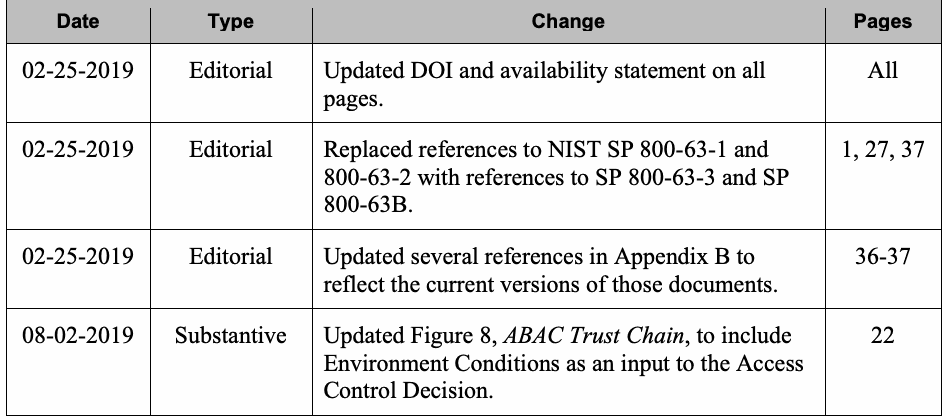
| 日付 | 種別 | 変更内容 | ページ |
| 02-25-2019 | 編集上 | 全ページのDOIおよび利用可能性に関する記述を更新。 | 全ページ |
| 02-25-2019 | 編集上 | NIST SP 800-63-1および800-63-2への参照を、SP 800-63-3およびSP 800-63Bへの参照に置き換えた。 | 1, 27, 37 |
| 02-25-2019 | 編集上 | 付録Bの複数の参照を更新し、各文書の現行版を反映。 | 36-37 |
| 08-02-2019 | 内容上 | 図8「ABAC信頼チェーン」を更新し、環境条件をアクセス制御決定への入力として追加。 | 22 |
1. Introduction
1. はじめに
未レビュー訳1.1 Purpose and Scope
1.1 目的と適用範囲
The purpose of this document is to provide Federal agencies with a definition of Attribute Based Access Control (ABAC) and provide considerations for using ABAC to improve information sharing while maintaining control of that information. This document describes the functional components of ABAC, as well as a set of issues for employing ABAC within a large enterprise without directly addressing authentication mechanisms or all aspects of Identity Management1, thus assuming subjects are bound to trusted identities or identity providers. The focus is on core ABAC concepts without addressing in detail topics such as Attribute Engineering/Management, Integration with Identity Management, Federation, Situational Awareness (Real Time or Contextual) Mechanism, Policy Management, and Natural Language Policy translation to Digital Policy. The discussed considerations should not be deemed comprehensive. Before selecting and deploying an ABAC product or technology, the hosting organization should augment these considerations with testing and independent product reviews.
本書の目的は、連邦機関に属性ベースアクセス制御（ABAC）の定義を提供し、情報の制御を維持しつつ情報共有を改善するためにABACを利用する際の考慮事項を示すことである。本書はABACの機能コンポーネントと、大規模な企業内でABACを利用するための一連の論点を説明するが、認証機構やアイデンティティ管理¹のすべての側面を直接扱わない。そのため、主体は信頼されたアイデンティティまたはアイデンティティプロバイダーに結び付いているものとする。本書はABACの中核概念に焦点を当て、属性エンジニアリング／管理、アイデンティティ管理との統合、フェデレーション、状況認識（リアルタイムまたはコンテキスト）機構、ポリシー管理、自然言語ポリシーからデジタルポリシーへの変換などの話題は詳細に扱わない。ここで述べる考慮事項を包括的なものとみなすべきではない。ABAC製品または技術を選択・展開する前に、ホスト組織は試験と独立した製品レビューによってこれらの考慮事項を補うべきである。
未レビュー訳This document brings together many previously separate bodies of ABAC knowledge in order to bridge gaps between available technology and best practice ABAC implementations, and strives to provide guidelines that can be consistently applied throughout organizations. It can be used as an informational guide for organizations that are considering deploying, planning to deploy, or are currently deploying ABAC systems.
本書は、これまで別々に扱われてきた多くのABAC知識をまとめ、利用可能な技術とABAC実装のベストプラクティスとの隔たりを埋め、組織全体で一貫して適用できる指針を示す。本書は、ABACシステムの展開を検討している組織、展開を計画中の組織、または現在展開中の組織が情報ガイドとして利用できる。
未レビュー訳This guidance extends the information in NISTIR 7316, Assessment of Access Control Systems [NIST7316]; NISTIR 7665, Proceedings of the Privilege Management Workshop [NIST7665]; NISTIR 7657, A Report on the Privilege (Access) Management Workshop [NIST7657]; and NISTIR 7874, Guidelines for Access Control System Evaluation Metrics [NIST7874], which demonstrates the fundamental concepts of policy, models, and properties of Access Control (AC) systems.
本指針は、NISTIR 7316『アクセス制御システムの評価』[NIST7316]、NISTIR 7665『特権管理ワークショップ議事録』[NIST7665]、NISTIR 7657『特権（アクセス）管理ワークショップ報告書』[NIST7657]、NISTIR 7874『アクセス制御システム評価指標に関するガイドライン』[NIST7874]の情報を拡張する。これらの刊行物は、アクセス制御（AC）システムのポリシー、モデル、特性に関する基本概念を示している。
1.2 Audience
1.2 想定読者
This document is intended to benefit and address the needs of two specific audiences:
本書は、以下の2つの特定の読者層に役立ち、そのニーズに応えることを目的とする。
•Persons who have a basic understanding of access control concepts and desire a general understanding of ABAC concepts
•アクセス制御の概念を基本的に理解しており、ABACの概念を全般的に理解したい人
•Access control subject matter experts or managers experienced in access control concepts who are seeking detailed deployment or operational information on ABAC
•アクセス制御の概念に精通し、ABACの詳細な展開情報または運用情報を求めるアクセス制御の専門家や管理者
未レビュー訳1.3 Document Structure
1.3 本書の構成
The rest of this document is divided into the following sections and appendixes:
本書の残りの部分は、以下の各節および付録で構成される。
未レビュー訳•Section 2 provides a basic understanding of ABAC. It gives readers an overview of the current state of logical access control, a working definition of ABAC, and an explanation of core and enterprise level ABAC concepts. Readers can gain a general understanding of ABAC concepts from just completing Section 2.
•第2節ではABACの基本を説明する。論理アクセス制御の現状、ABACの実用的な定義、中核および企業レベルのABAC概念を概説する。第2節を読むだけで、読者はABACの概念を全般的に理解できる。
•Section 3 discusses ABAC enterprise employment considerations during the initiation, acquisition/development, implementation/assessment, and operations/maintenance phases. Readers with an interest in access control and/or project management will benefit most from this section.
•第3節では、開始、取得／開発、実装／評価、運用／保守の各段階における、企業内でABACを利用する際の考慮事項を説明する。アクセス制御やプロジェクト管理に関心のある読者にとって特に有益である。
未レビュー訳1 See [NIST800-63-3] and [NIST800-63B].
1 [NIST800-63-3]および[NIST800-63B]を参照。
未レビュー訳•Section 4 concludes the document.
•第4節で本書をまとめる。
•Appendix A defines various acronyms and abbreviations related to ABAC.
•付録Aでは、ABACに関連するさまざまな頭字語および略語を定義する。
未レビュー訳•Appendix B lists the references for the document.
•付録Bでは、本書の参考文献を列挙する。
Because of the constantly changing nature of the IT industry, readers are strongly encouraged to take advantage of other resources, including those referenced in this document.
IT業界は絶えず変化しているため、読者は本書で参照しているものを含め、他の情報源も積極的に活用することが強く推奨される。
未レビュー訳1.4 Notes on Terminology
1.4 用語に関する注記
The terminology is not meant to be mandatory, but is intended to be consistent within the confines of the document itself. Where possible, terminology that is used elsewhere within NIST publications and across the Federal Government was adopted to maintain consistency. Where terms were found to be used inconsistently or where multiple terms were being used throughout the Federal Government and the Identity and Access Control community to address a common concept, the most concise terms and definitions were applied.
本書で使用する用語は必須ではないが、本書の範囲内で一貫させることを意図している。可能な限り、用語の一貫性を保つため、他のNIST刊行物および連邦政府全体で使用されている用語を採用した。連邦政府やアイデンティティ・アクセス制御コミュニティ全体で共通概念を指す用語に一貫性がない場合、または複数の用語が使われている場合には、最も簡潔な用語と定義を適用した。
未レビュー訳A logical object—sometimes referred to as a resource—is an entity to be protected from unauthorized use. The subject represents the entity requesting to perform an operation upon the object. The subject is sometimes referred to as a requestor.
論理オブジェクト（リソースとも呼ばれることがある）とは、不正使用から保護されるエンティティである。主体は、オブジェクトに対する操作を実行しようとするエンティティを表す。主体は要求者と呼ばれることもある。
The subject is most often assumed to be a human. A non-person entity (NPE), such as an autonomous service or application could also fill the role of the subject. In general, every operation performed by a computer must be done on behalf of some person or organization (in the case of an NPE) with the authority to perform the operation. The term subject is used to denote a human or NPE requesting access to an object.
主体は通常、人間であると想定される。自律サービスやアプリケーションなどの非個人エンティティ（NPE）も主体の役割を担うことができる。一般に、コンピューターが行うすべての操作は、その操作を実行する権限を持つ個人または組織（NPEの場合）に代わって行われなければならない。本書では、オブジェクトへのアクセスを要求する人間またはNPEを主体と呼ぶ。
未レビュー訳There are characteristics or attributes of a subject such as name, date of birth, home address, training record, and job function that may, either individually or when combined, comprise a unique identity that distinguishes that person from all others. These characteristics are often called subject attributes. The term subject attributes is used consistently throughout this document.
氏名、生年月日、自宅住所、研修記録、職務機能などの主体の特性または属性は、個別に、または組み合わせて、ある人物を他のすべての人物から識別する固有のアイデンティティを構成する場合がある。これらの特性は主体属性と呼ばれることが多い。本書では「主体属性」という用語を一貫して使用する。
In the course of a person’s life, he or she may work for different organizations, may act in different roles, and may inherit different privileges tied to those roles. The person may establish different personas for each organization or role and amass different attributes related to each persona. For example, an individual may work for Company A as a gate guard during the week and may work for Company B as a shift manager on the weekend. The subject attributes are different for each persona. Although trained and qualified as a Gate Guard for Company A, while operating in her Company B persona as a shift manager on the weekend she does not have the authority to perform as a Gate Guard for Company B.
人は生涯にわたり、異なる組織で働き、異なる役割を担い、その役割に結び付いた異なる権限を引き継ぐ場合がある。組織や役割ごとに異なるペルソナを確立し、それぞれのペルソナに関連する異なる属性を蓄積することもある。たとえば、ある人が平日は会社Aで門衛として働き、週末は会社Bでシフトマネージャーとして働く場合がある。それぞれのペルソナで主体属性は異なる。会社Aの門衛として訓練を受け、資格を持っていても、週末に会社Bのシフトマネージャーとして行動するペルソナでは、会社Bの門衛として働く権限はない。
未レビュー訳Authentication is not the same as access control or authorization. Authentication is the act of verifying that the subject has been authorized to use the presented identifier by a trusted identity provider organization. Access control or authorization, on the other hand, is the decision to permit or deny a subject access to system objects (network, data, application, service, etc.) Note that ABAC can be used without identification information, and authentication method is not addressed in this document. The terms access control and authorization are used synonymously throughout this document.
認証は、アクセス制御や認可と同じではない。認証とは、信頼されたアイデンティティプロバイダー組織が提示された識別子の使用を主体に認めていることを検証する行為である。一方、アクセス制御または認可とは、システムオブジェクト（ネットワーク、データ、アプリケーション、サービスなど）への主体のアクセスを許可または拒否する決定である。なお、ABACは識別情報なしで使用でき、本書では認証方式を扱わない。本書では「アクセス制御」と「認可」を同義語として使用する。
Privileges represent the authorized behavior of a subject; they are defined by an authority and embodied in policy or rules. For the purposes of this document, the terms privileges and authorizations are used interchangeably in that they are meant to convey one’s authority and implicit approval to access one or more objects.
権限は主体に認められた行動を表し、権限機関によって定義され、ポリシーまたは規則として具体化される。本書では、「権限」と「認可」を同義で使用し、1つ以上のオブジェクトにアクセスする権限および暗黙の承認を表す。
Environment conditions are dynamic factors, independent of subject and object, that may be used as attributes at decision time to influence an access decision. Examples of environment conditions include time, location, threat level, and temperature.
環境条件は、主体とオブジェクトから独立した動的要因であり、アクセス決定時に属性として利用して決定に影響を与える場合がある。環境条件の例には、時刻、場所、脅威レベル、温度がある。
Policy, rules, and relationships govern allowable behavior within an organization, based on the privileges of subjects and how resources or objects are to be protected under which environment conditions. Throughout this document, the term policy is used to convey these rules and relationships. Policy is typically written from the perspective of the object that needs protecting and the privileges available to subjects.
ポリシー、規則、関係性は、主体の権限と、環境条件の下でリソースまたはオブジェクトをどのように保護するかに基づいて、組織内で許容される行動を規定する。本書では、これらの規則と関係性を「ポリシー」と呼ぶ。通常、ポリシーは保護対象のオブジェクトと主体に認められる権限の観点から記述される。
Like subjects, each object has a set of attributes that help describe and identify it. These traits are called object attributes and are sometimes referred to as resource attributes. This document uses the term object attributes consistently throughout. Object attributes are typically bound to their objects through reference, by embedding them within the object, or through some other means of assured association such as cryptographic binding.2
主体と同様に、各オブジェクトにはその記述と識別に役立つ属性がある。これらはオブジェクト属性と呼ばれ、リソース属性と呼ばれる場合もある。本書では「オブジェクト属性」という用語を一貫して使用する。通常、オブジェクト属性は、参照によって、オブジェクト内に埋め込むことによって、または暗号学的バインディング²など関連付けを保証する他の手段によって、オブジェクトに結び付けられる。
未レビュー訳Information about policy, such as author, policy effective date, deconflict methods, etc. are sometimes called metapolicy. Information about attributes such as attribute authority, attribute creation date, etc. are sometimes called metaattributes. Metapolicy and metaattributes may be used in the development of sets of policies and the identification of the appropriate attribute sets needed for authorization. A good example of the use of a metaattribute is assigning an assurance level or measure of confidence to the attribute—a composite score for an attribute that could combine subjective ratings like a confidence score for the authority behind the attribute, a freshness score of the information in the attribute, and a level of accuracy score for how often the information is validated. At times, these measures of confidence may even be used as input to the access decision.
作成者、ポリシーの発効日、競合解消方法など、ポリシーに関する情報はメタポリシーと呼ばれることがある。属性権威、属性の作成日など、属性に関する情報はメタ属性と呼ばれることがある。メタポリシーとメタ属性は、ポリシー群の策定や、認可に必要な適切な属性群の特定に利用できる。メタ属性の良い例は、属性に保証レベルまたは信頼度を割り当てることである。これは、属性を裏付ける権威の信頼度スコア、属性情報の鮮度スコア、情報がどの程度の頻度で検証されるかを示す正確性スコアなど、主観的な評価を組み合わせた属性の複合スコアとなり得る。このような信頼度の尺度がアクセス決定の入力として使われる場合もある。
未レビュー訳These policies must be enforced through some type of access control mechanism. The access control mechanism must assemble authorization information, which may include information about the object being protected, the subject requesting access, the policies governing access to the resource, and any contextual information needed to make a decision. By evaluating each policy element against the available information, the access control mechanism often employs a policy decision point (PDP) to render a decision, a policy enforcement point (PEP) to enforce the decision, and some sort of context handler or workflow coordinator to manage the collection of attributes required for the decision. For the purposes of this document, it is assumed that the term access control mechanism incorporates all of this functionality, and the term is used throughout.
これらのポリシーは、何らかのアクセス制御機構を通じて実施しなければならない。アクセス制御機構は、保護対象のオブジェクト、アクセスを要求する主体、リソースへのアクセスを規定するポリシー、決定に必要なコンテキスト情報などを含み得る認可情報を組み立てなければならない。利用可能な情報に照らして各ポリシー要素を評価する際、アクセス制御機構は、多くの場合、決定を下すポリシー決定点（PDP）、決定を実施するポリシー実施点（PEP）、および決定に必要な属性の収集を管理する何らかのコンテキストハンドラーまたはワークフロー調整機能を利用する。本書では、「アクセス制御機構」という用語にこれらすべての機能が含まれるものとし、この意味で一貫して使用する。
2. Understanding ABAC
2. ABACの理解
未レビュー訳Fully understanding ABAC requires understanding of the basic principles of logical access control. The purpose of logical access control is to protect objects—be they data, services, executable applications, network devices, or some other type of information technology—from unauthorized operations. These operations may include discovering, reading, creating, editing, deleting, and executing objects. These objects are owned by an individual or organization and have some inherent value that motivates those owners to protect them. As owners of the objects, they have the authority to establish a policy that describes what operations may be performed upon those objects, by whom, and in what context those subjects may perform those operations. If the subject satisfies the access control policy established by the object owner, then the subject is authorized to perform the desired operation on that object—better known as being granted access to the object. If the subject does not satisfy the policy, then it is denied access to the object.
ABACを十分に理解するには、論理アクセス制御の基本原則を理解する必要がある。論理アクセス制御の目的は、データ、サービス、実行可能アプリケーション、ネットワーク機器などの情報技術を含むオブジェクトを、不正な操作から保護することである。これらの操作には、オブジェクトの検出、読取り、作成、編集、削除、実行などが含まれる。オブジェクトは個人または組織が所有し、所有者が保護する動機となる固有の価値を持つ。所有者はオブジェクトに対する操作、操作を実行できる者、主体が操作を実行できる状況を記述するポリシーを定める権限を持つ。主体がオブジェクト所有者の定めたアクセス制御ポリシーを満たす場合、その主体はオブジェクトに対して希望する操作を行う権限を与えられる。これは一般に、オブジェクトへのアクセスが許可された状態を意味する。主体がポリシーを満たさない場合、オブジェクトへのアクセスは拒否される。
未レビュー訳Computer security architects and administrators deploy access control mechanisms (ACM) in logic aligned to protect their objects by mediating requests from subjects. These ACMs can use a variety of methods to enforce the access control policy that applies to those objects. The ACM can be defined as: Access Control Mechanism (ACM): The logical component that serves to receive the access request from the subject, to decide, and to enforce the access decision.
コンピューターセキュリティのアーキテクトや管理者は、主体からの要求を仲介してオブジェクトを保護するよう論理的に構成されたアクセス制御機構（ACM）を導入する。これらのACMは、対象オブジェクトに適用されるアクセス制御ポリシーを実施するために、さまざまな方法を使用できる。ACMは次のように定義できる。アクセス制御機構（ACM）: 主体からアクセス要求を受け取り、決定を下し、アクセス決定を実施する論理コンポーネント。
未レビュー訳How these ACMs function can be described in terms of various logical access control models. These access control models provide a framework and set of boundary conditions upon which the objects, subjects, operations, and rules may be combined to generate and enforce an access control decision. Each model has its own advantages and limitations but it is important to note the evolution of these models to fully appreciate the flexibility and applicability of the ABAC model.
これらのACMの機能は、さまざまな論理アクセス制御モデルによって説明できる。アクセス制御モデルは、オブジェクト、主体、操作、規則を組み合わせてアクセス制御の決定を生成・実施するための枠組みと境界条件を提供する。それぞれのモデルには利点と限界があるが、ABACモデルの柔軟性と適用可能性を十分に理解するには、これらのモデルがどのように発展してきたかに注目することが重要である。
MAC/DAC An early application of logical access control was applied in Department of Defense (DoD) applications in the 1960s and 1970s with the emergence of the concepts of Discretionary Access Control (DAC) and Mandatory Access Control (MAC). These terms are further defined in the DoD Trusted Computer System Evaluation Criteria (TCSEC) or “Orange Book” [TCSEC]. The definition of DAC and MAC can be also found in [NIST800-53].
MAC/DAC 論理アクセス制御の初期の適用例は、1960年代から1970年代にかけて、任意アクセス制御（DAC）と強制アクセス制御（MAC）の概念が登場した米国国防総省（DoD）のアプリケーションである。これらの用語は、DoDの『信頼できるコンピューターシステム評価基準』（TCSEC）、通称「オレンジブック」[TCSEC]で詳しく定義されている。DACとMACの定義は[NIST800-53]にも記載されている。
IBAC/ACLs As networks grew, the need to limit access to specific protected objects spurred the growth of identity based access control (IBAC) capabilities. IBAC employs mechanisms such as access control lists (ACLs) to capture the identities of those allowed to access the object. If a subject presents a credential that matches the one held in the ACL, the subject is given access to the object. Individual privileges of the subject to perform operations (read, write, edit, delete, etc.) are managed on an individual basis by the object owner. Each object needs its own ACL and set of privileges assigned to each subject. In the IBAC model, the authorization decisions are made prior to any specific access request and result in the subject being added to the ACL. For each subject to be placed on an ACL, the object owner must evaluate identity, object, and context attributes against policy governing the object and decide whether to add the subject to the ACL. This decision is static and a notification process is required for the owner to reevaluate and perhaps remove a subject from the ACL to represent subject, object, or contextual changes. Failure to remove or revoke access over time leads to users accumulating privileges.
IBAC/ACL ネットワークの成長に伴い、特定の保護対象オブジェクトへのアクセスを制限する必要性から、アイデンティティベースアクセス制御（IBAC）機能が発展した。IBACは、オブジェクトへのアクセスを許可された者のアイデンティティを記録するアクセス制御リスト（ACL）などの機構を利用する。主体がACLに記録されたものと一致する資格情報を提示すれば、その主体にオブジェクトへのアクセスが許可される。読取り、書込み、編集、削除など、主体が実行できる個別の権限は、オブジェクト所有者が個別に管理する。各オブジェクトには、それぞれ専用のACLと、各主体に割り当てられる一連の権限が必要である。IBACモデルでは、特定のアクセス要求が行われる前に認可決定が下され、その結果として主体がACLに追加される。主体をACLに追加するには、オブジェクト所有者が、オブジェクトを規定するポリシーに照らしてアイデンティティ、オブジェクト、コンテキストの属性を評価し、主体をACLに追加するかどうかを決定しなければならない。この決定は静的であるため、主体、オブジェクト、コンテキストの変化に応じて所有者が再評価し、必要に応じて主体をACLから削除する通知プロセスが必要となる。時間の経過とともにアクセスを削除または取り消さないと、利用者の権限が蓄積する。
未レビュー訳RBAC Role-Based Access Control model (RBAC) [FK92, ANSI359, SCFY96] employs pre-defined roles that carry a specific set of privileges associated with them and to which subjects are assigned. For example, a subject assigned the role of Manager will have access to a different set of objects than someone assigned the role of Analyst. In this model, access is implicitly predetermined by the person assigning the roles to each individual and explicitly by the object owner when determining the privilege associated with each role. At the point of an access request, the access control mechanism evaluates the role assigned to the subject requesting access and the set of operations this role is authorized to perform on the object before rendering and enforcing an access decision. Note that a role may be viewed as a subject attribute that is evaluated by the access control mechanism and around which object access policy is generated. As the RBAC specification gained popularity, it made central management of enterprise access control capabilities possible and reduced the need for ACLs.
RBAC ロールベースアクセス制御モデル（RBAC）[FK92, ANSI359, SCFY96]では、特定の権限群を持つ事前定義ロールを用意し、主体に割り当てる。たとえば、マネージャーのロールを割り当てられた主体は、アナリストのロールを割り当てられた主体とは異なるオブジェクトにアクセスできる。このモデルでは、個人に各ロールを割り当てる人がアクセスを暗黙的に事前決定し、オブジェクト所有者が各ロールに関連付ける権限を決めることで明示的に決定する。アクセス要求時にアクセス制御機構は、アクセスを要求する主体に割り当てられたロールと、そのロールがオブジェクトに対して実行を認められている操作群を評価してから、アクセス決定を下し実施する。ロールは、アクセス制御機構が評価し、オブジェクトアクセスのポリシーを生成する際に用いる主体属性とみなすこともできる。RBAC仕様の普及に伴い、企業のアクセス制御機能を一元管理できるようになり、ACLの必要性が低下した。
ABAC ACLs and RBAC are in some ways special cases of ABAC in terms of the attributes used. ACLs work on the attribute of “identity”. RBAC works on the attribute of “role”. The key difference with ABAC is the concept of policies that express a complex Boolean rule set that can evaluate many different attributes. While it is possible to achieve ABAC objectives using ACLs or RBAC, demonstrating AC requirements compliance is difficult and costly due to the level of abstraction required between the AC requirements and the ACL or RBAC model. Another problem with ACL or RBAC models is that if the AC requirement is changed, it may be difficult to identify all the places where the ACL or RBAC implementation needs to be updated.
ABAC ACLとRBACは、使用する属性という点で、ある意味ではABACの特殊なケースである。ACLは「アイデンティティ」属性を使用し、RBACは「ロール」属性を使用する。ABACとの主な違いは、多様な属性を評価できる複雑なブール規則群を表すポリシーという概念である。ACLやRBACを使ってABACの目的を達成することは可能だが、アクセス制御要件とACLまたはRBACモデルとの間に必要な抽象化の度合いが大きいため、アクセス制御要件への準拠を示すことは難しく、コストもかかる。ACLやRBACモデルの別の問題は、アクセス制御要件が変更されたとき、ACLまたはRBACの実装を更新すべき箇所をすべて特定するのが難しい場合があることである。
One example of an access control framework that is consistent with ABAC is the Extensible Access Control Markup Language (XACML) [XACML]. The XACML model employs elements such as rules, policies, rule- and policy-combining algorithms, attributes (subject, (resource) object, action and environment conditions), obligations, and advice. Its reference architecture includes functions such as Policy Decision Points (PDPs), Policy Enforcement Points (PEPs), Policy Administration Points (PAPs), and Policy Information Points (PIPs) to control access. Another example is the Next Generation Access Control standard [ANSI499].
ABACと整合するアクセス制御フレームワークの例に、拡張可能アクセス制御マークアップ言語（XACML）[XACML]がある。XACMLモデルは、規則、ポリシー、規則・ポリシー結合アルゴリズム、属性（主体、（リソース）オブジェクト、アクション、環境条件）、義務、助言などの要素を用いる。その参照アーキテクチャには、アクセスを制御するポリシー決定点（PDP）、ポリシー実施点（PEP）、ポリシー管理点（PAP）、ポリシー情報点（PIP）などの機能が含まれる。もう一つの例として、次世代アクセス制御標準[ANSI499]がある。
In general, ABAC avoids the need for capabilities (operation/object pairs) to be directly assigned to subject requesters or to their roles or groups before the request is made. Instead, when a subject requests access, the ABAC engine can make an access control decision based on the assigned attributes of the requester, the assigned attributes of the object, environment conditions, and a set of policies that are specified in terms of those attributes and conditions. Under this arrangement policies can be created and managed without direct reference to potentially numerous users and objects, and users and objects can be provisioned without reference to policy.
一般にABACでは、要求前に、機能（操作／オブジェクトの組）を要求主体やそのロール、グループに直接割り当てる必要がない。代わりに、主体がアクセスを要求した時点で、ABACエンジンは、要求者に割り当てられた属性、オブジェクトに割り当てられた属性、環境条件、およびそれらの属性と条件によって指定された一連のポリシーに基づいてアクセス制御の決定を下す。この仕組みでは、多数に上る可能性のある利用者やオブジェクトを直接参照せずにポリシーを作成・管理でき、利用者やオブジェクトもポリシーを参照せずにプロビジョニングできる。
2.1 The Benefit of ABAC
2.1 ABACの利点
In many AC systems, logical access control solutions have been based primarily on the identity of a subject requesting execution of an operation (e.g., read) upon an object (e.g., a file). Examples include IBAC or RBAC where access to an object has been individually granted to a locally identified subject, or when access to an object has been granted to locally defined roles that the subject is a member of. This approach to AC is often cumbersome to manage. In this non-ABAC multi-organizational access method example (illustrated below in Figure 1), authenticated access to objects outside of the subject’s originating organization would require the subject’s identity to be pre-provisioned in the target organization and pre-populated on an access list.
多くのアクセス制御システムでは、論理アクセス制御ソリューションは主に、オブジェクト（例: ファイル）に対する操作（例: 読取り）の実行を要求する主体のアイデンティティに基づいてきた。IBACやRBACでは、ローカルで識別された主体にオブジェクトへのアクセスを個別に許可するか、主体が所属するローカル定義のロールにアクセスを許可する。アクセス制御のこの方式は、管理が煩雑になりがちである。以下の図1に示す、ABACを使わない組織間アクセス方式の例では、主体の所属組織外にあるオブジェクトへの認証済みアクセスを可能にするため、対象組織に主体のアイデンティティを事前に登録し、アクセスリストにあらかじめ追加しておく必要がある。
未レビュー訳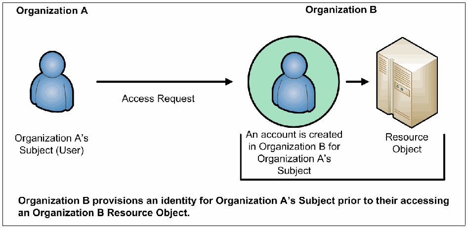
Figure 1: Traditional (Non-ABAC) Multi-Organizational Access Method
図1: 従来の（ABACを用いない）組織間アクセス方式
未レビュー訳Additionally, the subject qualifiers, such as identity and roles, are often insufficient in the expression of real-world AC needs. RBAC makes a decision based on the subject’s association with a role. RBAC does not easily support multi-factor decisions (for example, decisions dependent on physical location, and specialized training such as for Health Insurance Portability and Accountability Act (HIPAA) records access; recent training on HIPAA data protection may be a prerequisite to view medical records.) RBAC role assignments tend to be based upon more static organizational positions, presenting challenges in certain RBAC architectures where dynamic access control decisions are required. Trying to implement these kinds of access control decisions would require the creation of numerous roles that are ad hoc and limited in membership, leading to what is often termed “role explosion”.
さらに、アイデンティティやロールなどの主体の属性だけでは、現実のアクセス制御ニーズを表現するのに不十分な場合が多い。RBACは主体がロールに結び付いていることに基づいて決定する。RBACは、多要素に基づく決定（たとえば、物理的な場所や、医療保険の携行性と説明責任に関する法律（HIPAA）の記録にアクセスするための専門研修などに依存する決定）を容易には支援しない。医療記録を閲覧する前提条件として、HIPAAデータ保護に関する最近の研修受講が求められる場合がある。RBACのロール割り当ては、比較的固定的な組織上の役職に基づく傾向があり、動的なアクセス制御決定が必要な一部のRBACアーキテクチャでは課題となる。この種のアクセス制御決定を実装するには、場当たり的で構成員が限られた多数のロールを作る必要があり、いわゆる「ロール爆発」につながる。
A method is needed to make AC decisions without previous knowledge of the object by the subject or knowledge of the subject by the object-owner. By relying upon the concepts of subject and object attributes consistently defined between organizations, ABAC avoids the need for explicit authorizations to be directly assigned to individual subjects prior to a request to perform an operation on the object. Moreover, this model enables flexibility in a large enterprise where management of access control lists or roles and groups would be time consuming and complex. Leveraging consistently defined attributes that span both subjects and objects, authentication and authorization activities can be executed and administered in the same or separate infrastructures, while maintaining appropriate levels of security.
主体がオブジェクトを事前に知らず、オブジェクト所有者も主体を事前に知らない状態でアクセス制御の決定を下す方法が必要である。組織間で一貫して定義された主体属性とオブジェクト属性の概念に依拠することで、ABACは、オブジェクトに対する操作の要求前に、個々の主体へ認可を直接割り当てる必要をなくす。さらにこのモデルは、アクセス制御リストやロール、グループの管理に時間がかかり複雑になる大規模企業に柔軟性をもたらす。主体とオブジェクトの両方にまたがって一貫して定義された属性を利用すれば、適切なセキュリティ水準を維持しながら、認証と認可の活動を同一または別個の基盤で実行・管理できる。
2.2 A Working Definition of ABAC
2.2 ABACの実用的な定義
ABAC has been described in various ways. For example, one early paper on web services states that ABAC “grants accesses to services based on the attributes possessed by the requester” [WWJ04], while a discussion of security in geographic information systems describes ABAC as an approach in which “attribute values associated with users determine the association of users with privileges” [CGLO09].
ABACはさまざまな形で説明されてきた。たとえば、ウェブサービスに関する初期の論文では、ABACは「要求者が持つ属性に基づいてサービスへのアクセスを許可する」[WWJ04]と述べられている。一方、地理情報システムのセキュリティに関する議論では、「利用者に関連付けられた属性値によって、利用者と権限との関連付けが決まる」アプローチとして説明されている[CGLO09]。
Still another paper summarizes ABAC as a model that is “based on subject, object, and environment attributes and supports both mandatory and discretionary access control needs” [YT05]. In these and other definitions, there is a reasonable consensus that ABAC determines access (i.e., operations upon system objects) by matching the current value of subject attributes, object attributes, and environment conditions with the requirements specified in access control rules. The following is a high-level definition of ABAC:
さらに別の論文では、ABACを「主体、オブジェクト、環境の属性に基づき、強制アクセス制御と任意アクセス制御の双方のニーズを支援する」モデルと要約している[YT05]。これらを含むさまざまな定義では、アクセス制御規則に定められた要件に対し、主体属性、オブジェクト属性、環境条件の現在値を照合することで、ABACがアクセス（すなわちシステムオブジェクトに対する操作）を決定するという点でおおむね合意されている。ABACを大まかに定義すると、以下のとおりである。
未レビュー訳Attribute Based Access Control (ABAC): An access control method where subject requests to perform operations on objects are granted or denied based on assigned attributes of the subject, assigned attributes of the object, environment conditions, and a set of policies that are specified in terms of those attributes and conditions.
属性ベースアクセス制御（ABAC）: オブジェクトに対する操作の実行要求を、主体に割り当てられた属性、オブジェクトに割り当てられた属性、環境条件、およびそれらの属性と条件によって指定された一連のポリシーに基づいて許可または拒否するアクセス制御方式。
未レビュー訳Attributes are characteristics of the subject, object, or environment conditions. Attributes contain information given by a name-value pair.
属性とは、主体、オブジェクト、または環境条件の特性である。属性は、名前と値の組で表される情報を含む。
未レビュー訳A subject is a human user or NPE, such as a device that issues access requests to perform operations on objects. Subjects are assigned one or more attributes. For the purpose of this document, assume that subject and user are synonymous.
主体とは、オブジェクトに対する操作を行うアクセス要求を発する人間の利用者またはNPE（例: デバイス）である。主体には1つ以上の属性が割り当てられる。本書では「主体」と「利用者」を同義とする。
An object is a system resource for which access is managed by the ABAC system, such as devices, files, records, tables, processes, programs, networks, or domains containing or receiving information. It can be the resource or requested entity, as well as anything upon which an operation may be performed by a subject including data, applications, services, devices, and networks.
オブジェクトとは、デバイス、ファイル、記録、テーブル、プロセス、プログラム、ネットワーク、情報を含む、または情報を受け取るドメインなど、ABACシステムがアクセスを管理するシステムリソースである。オブジェクトはリソースまたは要求対象エンティティ自体である場合に加え、データ、アプリケーション、サービス、デバイス、ネットワークなど、主体が操作を実行できるあらゆる対象を含む。
未レビュー訳An operation is the execution of a function at the request of a subject upon an object. Operations include read, write, edit, delete, copy, execute, and modify.
操作とは、主体の要求に応じてオブジェクトに対して実行される機能である。操作には、読取り、書込み、編集、削除、コピー、実行、変更が含まれる。
Policy is the representation of rules or relationships that makes it possible to determine if a requested access should be allowed, given the values of the attributes of the subject, object, and possibly environment conditions.
ポリシーとは、主体、オブジェクト、場合によっては環境条件の属性値に基づき、要求されたアクセスを許可すべきかどうかを判断できるようにする規則または関係性の表現である。
Environment conditions: operational or situational context in which access requests occur. Environment conditions are detectable environmental characteristics. Environment characteristics are independent of subject or object, and may include the current time, day of the week, location of a user, or the current threat level.
環境条件: アクセス要求が発生する運用上または状況上のコンテキスト。環境条件は検出可能な環境特性である。環境特性は主体またはオブジェクトから独立しており、現在時刻、曜日、利用者の場所、現在の脅威レベルなどが含まれる場合がある。
The high-level ABAC definition is depicted in Figure 2 where the ABAC ACM receives the subject’s access request, then examines the subject’s and object’s attributes against a specific policy. The ACM then determines what operations the subject may perform upon the object.
ABACの概要を図2に示す。ABACのアクセス制御機構（ACM）は主体のアクセス要求を受け取り、主体とオブジェクトの属性を特定のポリシーに照らして評価する。その後、ACMは主体がオブジェクトに対して実行できる操作を決定する。
Access Control Policy
アクセス制御ポリシー
未レビュー訳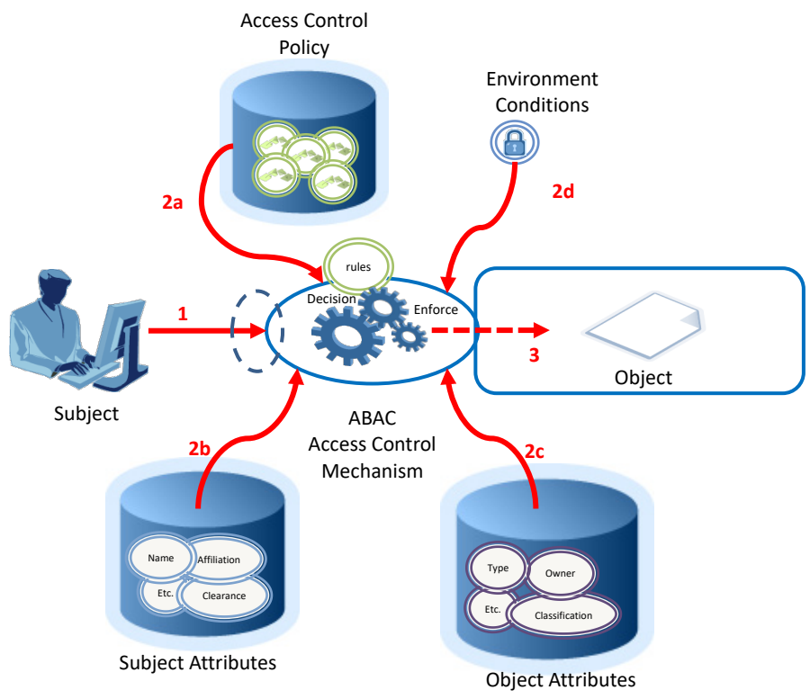
Environment Conditions
環境条件
未レビュー訳2d
未レビュー訳2a
未レビュー訳rules
規則
未レビュー訳Decision
決定
未レビュー訳Enforce
実施
未レビュー訳1
未レビュー訳3
未レビュー訳Object
オブジェクト
未レビュー訳Subject
主体
未レビュー訳ABAC
ABAC
未レビュー訳Access Control
アクセス制御
未レビュー訳2b
未レビュー訳2c
未レビュー訳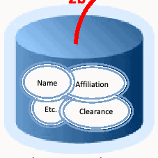
Mechanism
メカニズム
未レビュー訳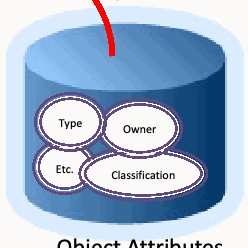
Name Affiliation
氏名／所属
未レビュー訳Type
種類
未レビュー訳Owner
所有者
未レビュー訳Etc. Clearance
その他／クリアランス
未レビュー訳Etc.
その他
未レビュー訳Classification
分類
未レビュー訳Subject Attributes
主体属性
未レビュー訳Object Attributes
オブジェクト属性
未レビュー訳1.Subject requests access to object
1.主体がオブジェクトへのアクセスを要求する
未レビュー訳2.Access Control Mechanism evaluates a) Rules, b) Subject Attributes, c) Object Attributes, and d) Environment Conditions to compute a decision
2.アクセス制御メカニズムは、a) 規則、b) 主体属性、c) オブジェクト属性、およびd) 環境条件を評価して、決定を算出する。
未レビュー訳3.Subject is given access to object if authorized
3.権限がある場合、主体にオブジェクトへのアクセスが許可される。
未レビュー訳Figure 2: Basic ABAC Scenario
図2：基本的なABACシナリオ
未レビュー訳2.3 Basic ABAC Concepts
2.3 基本的なABACの概念
未レビュー訳In its most basic form, ABAC relies upon the evaluation of attributes of the subject, attributes of the object, environment conditions, and the formal relationship or access control rule or policy defining the allowable operations for subject-object attribute combinations. All ABAC solutions contain these basic core capabilities to evaluate attributes and enforce rules or relationships between those attributes (see Figure 3 below).
最も基本的な形態において、ABACは、主体の属性、オブジェクトの属性、環境条件、および主体とオブジェクトの属性の組み合わせに対して許容される操作を定める正式な関係、アクセス制御規則、またはポリシーの評価に依存する。すべてのABACソリューションは、属性を評価し、それらの属性間の規則または関係を適用するための、これらの基本的な中核機能を備える（下記の図3を参照）。
未レビュー訳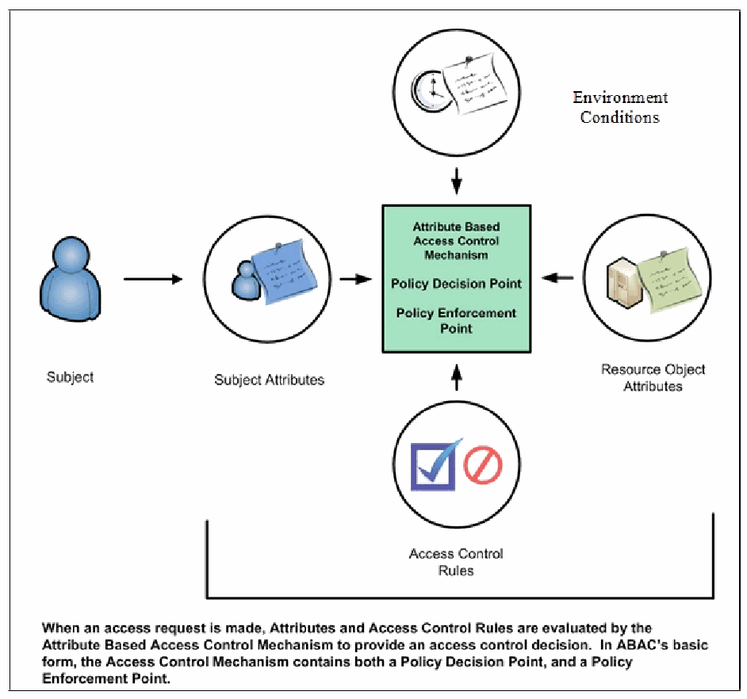
Figure 3: Core ABAC Mechanisms
図3：ABACの中核となるメカニズム
未レビュー訳Even within a small isolated system, ABAC relies upon the assignment of attributes to subjects and objects, and the development of policy that contains the access rules. Each object within the system must be assigned specific object attributes that characterize the object. Some attributes pertain to the entire instance of an object, such as the owner. Other attributes may only apply to parts of the object. For example, a document object could be owned by organization A, have a section with intellectual property from organization B, and be part of a program run by organization C. As another example, consider a document residing in a directory within a file management system. This document has a title, an author, a date of creation, and a date of last edit—all object attributes that are determined by the creator, author, or editor of the document. Additional object attributes may be assigned such as owning organization, intellectual property characteristics, export control classification, or security classification. Each time a new document is created or modified, these object attributes must be captured. These object attributes are often embedded within the document itself, but they may be captured in a separate table, incorporated by reference, or managed by a separate application.
小規模で隔離されたシステムであっても、ABACは、主体およびオブジェクトへの属性の割り当てと、アクセス規則を含むポリシーの策定に依存する。システム内の各オブジェクトには、そのオブジェクトの特性を示す特定のオブジェクト属性を割り当てなければならない。一部の属性は、所有者など、オブジェクトのインスタンス全体に関係する。他の属性は、オブジェクトの一部分にのみ適用される場合がある。例えば、文書オブジェクトが組織Aに所有され、組織Bの知的財産を含む節を持ち、組織Cが実施するプログラムの一部となっている場合がある。別の例として、ファイル管理システム内のディレクトリに保存された文書を考える。この文書には、タイトル、著者、作成日、および最終編集日があり、これらはすべて、文書の作成者、著者、または編集者によって決定されるオブジェクト属性である。所有組織、知的財産の特性、輸出管理区分、またはセキュリティ分類などの追加のオブジェクト属性を割り当てることもできる。新しい文書を作成または変更するたびに、これらのオブジェクト属性を取得しなければならない。これらのオブジェクト属性は文書自体に埋め込まれることが多いが、別の表に記録したり、参照によって組み込んだり、別のアプリケーションで管理したりすることもできる。
未レビュー訳Each subject that uses the system must be assigned specific attributes. Consider the example of a user accessing a file management system. The user is established as a subject within the system by an administrator and characteristics about that user are captured as subject attributes. This subject may have a name, a role, and an organization affiliation. Other subject attributes may include US Person status, nationality, and security clearance. These subject attributes are assigned and managed by an authority within the organization that maintains the subject identity information for the file management system. As new users arrive, old users leave, and characteristics of subjects change, these subject attributes may need to be updated.
システムを利用する各主体には、特定の属性を割り当てなければならない。ファイル管理システムにアクセスするユーザーの例を考える。管理者がシステム内でそのユーザーを主体として登録し、そのユーザーの特性を主体属性として取得する。この主体は、氏名、役割、および所属組織を持つ場合がある。その他の主体属性には、米国人該当性、国籍、およびセキュリティクリアランスが含まれる場合がある。これらの主体属性は、ファイル管理システムの主体に関する識別情報を維持する組織内の権限機関によって割り当てられ、管理される。新しいユーザーが加わり、既存ユーザーが離れ、主体の特性が変化するにつれて、これらの主体属性を更新する必要が生じる場合がある。
Every object within the system must have at least one policy that defines the access rules for the allowable subjects, operations, and environment conditions to the object. This policy is normally derived from documented or procedural rules that describe the business processes and allowable actions within the organization. For example, in a hospital setting, a rule may state that only authorized medical personnel shall be able to access a patient’s medical record. In some system, if the object is a document with a Record Type Attribute of Patient Medical Record, then the Medical Record Rule will be selected and processed so that the subject with a Personnel Type Attribute value of Non-Medical Support Staff trying to perform the Read operation will be denied access and the operation will be disallowed. Note that this is only one approach to implementing the connection between attributes and rules.
システム内の各オブジェクトには、どの主体、操作、および環境条件がそのオブジェクトに対して許容されるかを定めるポリシーが少なくとも1つ必要である。このポリシーは通常、組織内の業務プロセスおよび許容される行為を記述した、文書化済みまたは手続き上の規則から導かれる。例えば、病院では、承認された医療従事者のみが患者の医療記録にアクセスできるものとする規則を定める場合がある。システムによっては、オブジェクトが「患者医療記録」という記録タイプ属性を持つ文書である場合、「医療記録規則」が選択されて処理される。その結果、「非医療支援職員」という職員タイプ属性値を持つ主体が「読取」操作を実行しようとしてもアクセスを拒否され、その操作は許可されない。これは、属性と規則の関係を実装する方法の一例にすぎない。
The rules that bind subject and object attributes indirectly specify privileges (i.e., which subjects can perform which operations on which objects). Allowable operation rules can be expressed through many forms of computational language such as:
主体属性とオブジェクト属性を結び付ける規則は、どの主体がどのオブジェクトに対してどの操作を実行できるかという権限を間接的に指定する。許容される操作の規則は、例えば次のようなさまざまな計算言語の形式で表現できる。
•A Boolean combination of attributes and conditions that satisfy the authorization for a specific operation
•特定の操作を承認する条件を満たす、属性と条件のブール演算による組み合わせ
•A set of relations associating subject and object attributes and allowable operations
•主体属性およびオブジェクト属性と、許容される操作とを関連付ける一連の関係
未レビュー訳Once object attributes, subject attributes, and policies are established, objects can be protected using ABAC. Access control mechanisms mediate access to the objects by limiting access to allowable operations by allowable subjects. The ACM assembles the policy, subject attributes, and object attributes, then renders and enforces a decision based on the logic provided in the policy. ACMs must be able to manage the process required to make and enforce the decision, including determining what policy to retrieve, which attributes to retrieve in what order, and where to retrieve attributes. The ACM must then perform the computation necessary to render a decision.
オブジェクト属性、主体属性、およびポリシーが定められると、ABACを使用してオブジェクトを保護できる。アクセス制御メカニズムは、許可された主体に許容される操作だけを認めることによって、オブジェクトへのアクセスを仲介する。ACMはポリシー、主体属性、およびオブジェクト属性を組み立て、ポリシーで定められたロジックに基づいて決定を下し、適用する。ACMは、どのポリシーを取得するか、どの属性をどの順序で取得するか、属性をどこから取得するかの決定など、決定を下して適用するために必要なプロセスを管理できなければならない。その後、ACMは決定を下すために必要な計算を実行しなければならない。
未レビュー訳The policies that can be implemented in an ABAC model are limited only to the degree imposed by the computational language and the richness of the available attributes. This flexibility enables the greatest breadth of subjects to access the greatest breadth of objects without having to specify individual relationships between each subject and each object. For example, a subject is assigned a set of subject attributes upon employment (e.g., Nancy Smith is a Nurse Practitioner in the Cardiology Department). An object is assigned its object attributes upon creation (e.g., a folder with Medical Records of Heart Patients). A designated authority creates rules to govern the set of allowable operations (e.g., all Nurse Practitioners in the Cardiology Department can View the Medical Records of Heart Patients). Adding to the flexibility, attributes and their values may then be modified throughout the lifecycle of subjects, objects, and attributes.
ABACモデルで実装できるポリシーは、計算言語の能力と利用可能な属性の豊富さによってのみ制約される。この柔軟性により、主体ごと、オブジェクトごとの関係を個別に指定せずに、最大限に広範な主体が、最大限に広範なオブジェクトにアクセスできる。例えば、主体には雇用時に一連の主体属性が割り当てられる（例：ナンシー・スミスは循環器科のナースプラクティショナーである）。オブジェクトには作成時にオブジェクト属性が割り当てられる（例：心臓病患者の医療記録を収めたフォルダー）。指定された権限機関が、許容される一連の操作を定める規則を作成する（例：循環器科のすべてのナースプラクティショナーは、心臓病患者の医療記録を閲覧できる）。さらに柔軟性を高めるため、主体、オブジェクト、および属性のライフサイクル全体を通じて、属性およびその値を変更できる。
Provisioning attributes to subjects and objects governed by a ruleset that specifies what operations can take place enables an unlimited number of subjects to perform operations on the object—all without prior knowledge of the specific subject by the object-owner or rule-maker. As new subjects join the organization, rules and objects do not need to be modified. As long as the subject is assigned the attributes necessary for access to the required objects (e.g., all Nurse Practitioners in the Cardiology Department are assigned those attributes), no modifications to existing rules or object attributes are required. This benefit is often referred to as accommodating the external (unexpected) user and is one of the primary benefits of employing ABAC.
どの操作が可能かを定める規則セットに従って主体およびオブジェクトに属性を付与することで、オブジェクト所有者または規則作成者が特定の主体を事前に把握していなくても、無数の主体がそのオブジェクトに対する操作を実行できる。新しい主体が組織に加わっても、規則やオブジェクトを変更する必要はない。必要なオブジェクトにアクセスするために必要な属性が主体に割り当てられている限り（例えば、循環器科のすべてのナースプラクティショナーにその属性が割り当てられている場合）、既存の規則やオブジェクト属性を変更する必要はない。この利点は「外部（予期しない）ユーザーへの対応」と呼ばれることが多く、ABACを採用する主な利点の1つである。
未レビュー訳Contrary to some other schemes, under the definition of ABAC presented here, operations do not have “attributes”. As defined “Attributes contain information given by a name-value pair”. For example, “read = all” (or “all = read”) is not appropriate. Operations can have many types or classes, which are not “attributes” but a fixed set of values. It would be possible to make operation itself an “attribute name”, such as “operation = read”, but this would then be the only attribute for operation, which would be redundant.
ここで示すABACの定義は他の方式の一部とは異なり、操作には「属性」がない。定義によれば、「属性は、名前と値の組から与えられる情報を含む」。例えば、「read = all」（または「all = read」）は適切ではない。操作には複数の型またはクラスを持たせられるが、それらは「属性」ではなく固定された値の集合である。操作自体を「operation = read」のような「属性名」にすることは可能だが、その場合、操作に関する属性はこれだけとなり、冗長である。
未レビュー訳To meet accountability requirements, there will be a need to track accesses of objects to specific subjects linked to specific users. Accountability could be lost if access decisions are based on attributes, but subject or user IDs are not tracked to specific access requests and decisions.
説明責任の要件を満たすには、特定のユーザーに結び付けられた特定の主体によるオブジェクトへのアクセスを追跡する必要がある。属性に基づいてアクセスを決定しても、主体またはユーザーIDが個々のアクセス要求および決定に対応付けて追跡されていなければ、説明責任が損なわれるおそれがある。
2.4 Enterprise ABAC Concepts
2.4 企業規模のABACの概念
未レビュー訳While ABAC is an enabler of information sharing, when deployed across an enterprise, the set of components required to implement ABAC gets more complex. At the enterprise level the increased scale requires complex and sometimes independently established management capabilities necessary to ensure consistent sharing and use of policies and attributes and the controlled distribution and employment of access control mechanisms throughout the enterprise. The following represents a definition of enterprise for this document.
ABACは情報共有を可能にするが、企業全体に展開する場合、ABACの実装に必要なコンポーネント群はより複雑になる。企業レベルでは、規模の拡大に伴い、企業全体を通じたポリシーおよび属性の一貫した共有と利用、ならびにアクセス制御メカニズムの管理された配布と運用を確実にするため、複雑で、ときには独立して構築された管理機能が必要となる。以下に、本書における「企業」の定義を示す。
Enterprise: A collaboration or federation among entities for which information sharing is required and managed.
企業：情報共有が必要となり、その共有が管理される複数の組織体の協働または連合。
未レビュー訳Figure 4 below presents an example of the major components required to enable enterprise ABAC. Some enterprises have existing capabilities that can be leveraged to implement ABAC. For example, most enterprises have some form of identity and credential management to manage population of subject attributes, such as name, unique identifier, role, clearance, etc. Similarly, many enterprises may have some organizational policy or guidelines to establish rules authorizing subjects’ access to enterprise objects. However, these rules are usually not written in a machine-enforceable format that can be integrated consistently across all applications. ABAC policies must be made available in machine-enforceable format, and stored in repositories and published for ACM consumption. These digital policies include subject and object attributes required to render access control decisions. The enterprise subject attributes must be created, stored, and shared across organizations within the enterprise through a subject attribute management capability. Likewise, enterprise object attributes must be established and bound to objects through an object attribute management capability. At this point, the ABAC-enabled access control mechanisms must be deployed. The remainder of this section provides more detail on each of these major components of enterprise ABAC.
下記の図4は、企業規模のABACを実現するために必要な主要コンポーネントの例を示す。企業によっては、ABACの実装に活用できる既存の機能を備えている。例えば、ほとんどの企業には、主体属性群（氏名、一意の識別子、役割、クリアランスなど）を管理するための、何らかのアイデンティティおよび資格情報の管理機能がある。同様に、多くの企業には、主体が企業内のオブジェクトにアクセスすることを認可する規則を定める、組織的なポリシーまたは指針がある。しかし通常、これらの規則は、すべてのアプリケーションにわたって一貫して統合できる機械実行可能な形式で記述されていない。ABACポリシーは機械実行可能な形式で利用可能にし、ACMが使用できるようリポジトリに保存して公開しなければならない。これらのデジタルポリシーには、アクセス制御の決定に必要な主体属性およびオブジェクト属性が含まれる。企業の主体属性は、主体属性管理機能を通じて作成、保存され、企業内の組織間で共有されなければならない。同様に、企業のオブジェクト属性は、オブジェクト属性管理機能を通じて確立し、オブジェクトに結び付けなければならない。この時点で、ABACに対応したアクセス制御メカニズムを展開しなければならない。本節の残りでは、企業規模のABACを構成するこれら主要コンポーネントについて詳述する。
未レビュー訳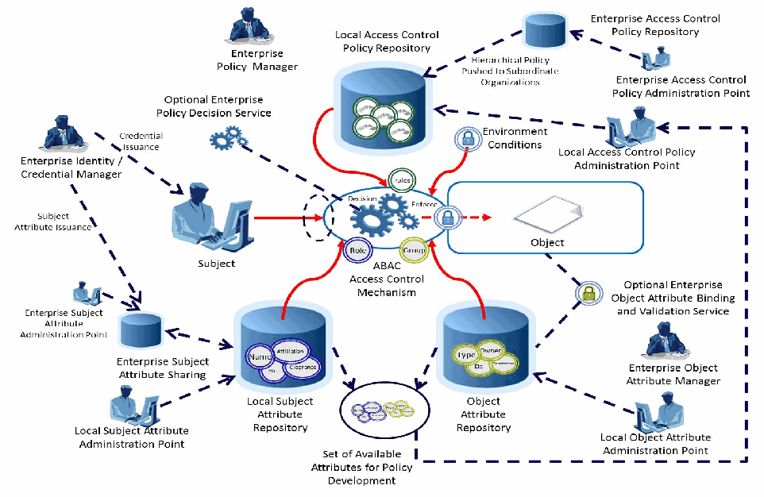
Figure 4: Enterprise ABAC Scenario Example
図4：企業規模ABACシナリオの例
未レビュー訳2.4.1 Enterprise ABAC Policy
2.4.1 企業規模のABACポリシー
Natural Language Policies (NLPs) are high-level requirements that specify how information access is managed and who, under what circumstances, may access what information. NLPs are expressed in human understandable terms and may not be directly implementable in an ACM. NLPs may be ambiguous and thus hard to derive in formally actionable elements, so the enterprise policy may be difficult to encode in machine-enforceable form. While NLPs can be application-specific and thus taken into consideration by the application system, NLPs are just as likely to pertain to subject actions that span multiple applications. For instance, NLPs may pertain to object usage within or across organizational units or may be based on need-to-know, competence, authority, obligation, or conflict-of-interest factors. Such policies may span multiple computing platforms and applications. NLPs are defined in this document as follows:
自然言語ポリシー（NLP）は、情報アクセスをどのように管理するか、また誰が、どのような状況で、どの情報にアクセスできるかを指定する上位レベルの要件である。NLPは人が理解できる表現で記述され、ACMに直接実装できない場合がある。NLPには曖昧さがあり、正式に実行可能な要素に導き出すことが難しい場合があるため、企業ポリシーを機械実行可能な形式で符号化するのは困難となり得る。NLPはアプリケーション固有の場合があり、その場合はアプリケーションシステムで考慮される一方、複数のアプリケーションにまたがる主体の行為に関係する場合も同様に多い。例えば、NLPは組織単位内または組織単位間でのオブジェクトの使用に関係する場合や、知る必要性、能力、権限、義務、または利益相反の要因に基づく場合がある。このようなポリシーは、複数のコンピューティングプラットフォームおよびアプリケーションにまたがることがある。本書では、NLPを次のように定義する。
未レビュー訳Natural Language Policy (NLP): Statements governing management and access of enterprise objects. NLPs are human expressions that can be translated to machine-enforceable access control policies.
自然言語ポリシー（NLP）：企業のオブジェクトの管理およびアクセスを規定する記述。NLPは人間による表現であり、機械実行可能なアクセス制御ポリシーに変換できる。
未レビュー訳Given that relevant NLPs exist for each organization in an enterprise, the next step is to translate those into a common set of rules that can be enforced equally and consistently within the ACMs across the enterprise. In order to accomplish this, it is necessary to identify all required subject/object attribute combinations and allowable operations. Often these values will vary from organization to organization and may require some form of consensus or mapping to each organization’s existing attributes to accommodate enterprise interoperability. The agreed-upon list of subject and object attributes, the allowable operations, and all mappings from existing organization-specific attributes are then translated into machine-enforceable format.
企業内の各組織に関連するNLPが存在する場合、次の段階は、それらを企業全体のACMで同等かつ一貫して適用できる共通の規則セットに変換することである。そのためには、必要な主体／オブジェクト属性の組み合わせと、許容される操作をすべて特定する必要がある。これらの値は組織ごとに異なることが多く、企業内の相互運用性を実現するには、何らかの合意形成、または各組織の既存属性へのマッピングが必要になる場合がある。合意された主体属性およびオブジェクト属性の一覧、許容される操作、ならびに既存の組織固有属性からのすべてのマッピングを、機械実行可能な形式に変換する。
未レビュー訳NLPs must be codified into Digital Policy (DP) algorithms or mechanisms. For efficiency of performance and simplicity in specification, an NLP may require decomposition and translation into different DPs that suit the infrastructure of operation units in the enterprise. DPs are defined in this document as:
NLPは、デジタルポリシー（DP）のアルゴリズムまたはメカニズムとして符号化しなければならない。処理効率と仕様の簡潔さのため、NLPを分解し、企業内の運用単位のインフラストラクチャに適した複数のDPに変換する必要がある場合がある。本書では、DPを次のように定義する。
未レビュー訳Digital Policy (DP): Access control rules that compile directly into machine executable codes or signals. Subject/object attributes, operations, and environment conditions are the fundamental elements of DP, the building blocks of DP rules, which are enforced by an access control mechanism.
デジタルポリシー（DP）：機械実行可能なコードまたは信号に直接コンパイルされるアクセス制御規則。主体／オブジェクト属性、操作、および環境条件はDPの基本要素であり、DP規則を構成する部品である。これらはアクセス制御メカニズムによって適用される。
未レビュー訳Multiple DPs may require Metapolicies (MPs), or policies dictating the use and management of DPs to handle DP hierarchical authorities, DP deconfliction, and DP storage and updates. MPs are used for managing DPs. Depending on the level of complexities, hierarchical MPs may be required based on the structures for the priority and combination strategies specified by NLP. MP is defined in this document as:
複数のDPを管理するには、メタポリシー（MP）、すなわちDPの階層的権限、DP間の競合解消、DPの保存および更新を扱うために、DPの使用と管理を規定するポリシーが必要になる場合がある。MPはDPの管理に使用される。複雑さの度合いに応じて、NLPで定めた優先順位および組み合わせ方針の構造に基づき、階層型MPが必要となる場合がある。本書では、MPを次のように定義する。
Metapolicy (MP): A policy about policies, or policy for managing policies, such as assignment of priorities and resolution of conflicts between DPs or other MPs.
メタポリシー（MP）：ポリシーに関するポリシー、またはポリシーを管理するためのポリシー。例えば、DPまたは他のMP間の優先順位の割り当てや競合解消を定めるもの。
未レビュー訳Once DPs and MPs are developed they need to be managed, stored, validated, updated, prioritized, deconflicted, shared, retired, and enforced. Each of these operations requires a set of capabilities that will often be distributed across the enterprise and is collectively termed Digital Policy Management (DPM). There may be multiple policy authorities and hierarchies within organizations that have variations on enterprise policy. The rules for how DPs and MPs are managed may be determined by a central authority.
DPおよびMPを策定した後は、それらを管理、保存、検証、更新、優先順位付け、競合解消、共有、廃止、および適用する必要がある。これらの各操作には一連の機能が必要であり、その多くは企業全体に分散される。これらを総称してデジタルポリシー管理（DPM）と呼ぶ。組織内には、企業ポリシーに差異を持たせる複数のポリシー権限者および階層が存在する場合がある。DPおよびMPを管理する規則は、中央権限者が定める場合がある。
未レビュー訳Proper DP definition and development are critical to the identification of subject and object attributes that are needed to render an access control decision. Remember that a DP statement is comprised of the subject and object attribute pairings as well as environment conditions needed to satisfy a set of allowable operations. Once the full set of subject and object attributes needed to satisfy the entire set of allowable operations for a given set of enterprise objects is identified, this set of attributes comprises the entire set of attributes needed to be defined, assigned, shared, and evaluated for enterprise ABAC access decisions. For this reason, identifying the NLP and DP must be accomplished by the support of attributes when implementing an enterprise ABAC capability. Additional considerations for management of DP can be found in Section 3 of this document.
DPを適切に定義し策定することは、アクセス制御の決定に必要な主体属性およびオブジェクト属性を特定するうえで極めて重要である。DPの記述は、許容される操作の集合を満たすために必要な主体属性とオブジェクト属性の組み合わせ、および環境条件から構成されることを想起されたい。所定の企業オブジェクト群に対して許容される操作の全体を満たすために必要な主体属性およびオブジェクト属性の完全な集合を特定すると、この属性集合が、企業規模ABACのアクセス決定に必要な、定義、割り当て、共有、および評価の対象となる属性全体を構成する。このため、企業規模のABAC機能を実装する際には、属性の支援によってNLPおよびDPを特定しなければならない。DPの管理に関する追加の考慮事項については、本書の第3節を参照されたい。
未レビュー訳2.4.2 Attribute Management in Enterprise ABAC
2.4.2 企業規模ABACにおける属性管理
Next, consider the lists of attributes developed while examining the NLPs and DPs. Without a sufficient set of object and subject attributes, ABAC does not work. Attributes need to be named, defined, given a set of allowable values, assigned a schema, and associated to subjects and objects. Subject attributes need to be established, issued, stored, and managed under an authority. Object attributes must be assigned to the objects. Attributes shared across organizations should be located, retrieved, published, validated, updated, modified, and revoked.
次に、NLPおよびDPの検討中に作成した属性一覧について考える。十分なオブジェクト属性および主体属性がなければ、ABACは機能しない。属性には名称を付け、定義し、許容値の集合を与え、スキーマを割り当て、主体およびオブジェクトに関連付ける必要がある。主体属性は、権限機関の下で確立、発行、保存、および管理する必要がある。オブジェクト属性はオブジェクトに割り当てなければならない。組織間で共有される属性は、検索、取得、公開、検証、更新、変更、および失効ができるようにすべきである。
未レビュー訳Subject attributes are provisioned by attribute authorities—typically authoritative for the type of attribute that is provided and managed through an attribute administration point. Often, there are multiple authorities, each with authority over different attributes. For example, Security might be the authority for Clearance attributes, while Human Resources might be the authority for Name attributes. Subject attributes that need to be shared to allow subjects from one organization to access objects in another organization must be consistent, comparable, or mapped to allow equivalent policies to be enforced. For example, a member of Organization A with the role Job Lead wants to access information in Organization B, except Organization B uses the term Task Lead to denote the equivalent role. This problem also applies to mapping between an enterprise attribute schema and an application-specific schema, particularly ones built before the enterprise schema is defined and/or Commercial Off-The-Shelf (COTS) products that come with their own built-in schema. Organizations must normalize subject attribute names and values, or maintain a mapping of equivalent terms for all organizations. This should be managed by a central authority.
主体属性は属性権限機関によって提供される。これらの機関は通常、提供する属性の種類に関する権限を持ち、その属性は属性管理ポイントを通じて管理される。多くの場合、複数の権限機関があり、それぞれ異なる属性に対する権限を持つ。例えば、セキュリティ部門がクリアランス属性の権限機関であり、人事部門が氏名属性の権限機関である場合がある。ある組織の主体が別の組織のオブジェクトにアクセスできるよう共有する必要がある主体属性は、同等のポリシーを適用できるよう、一貫性または比較可能性を備えるか、マッピングされなければならない。例えば、組織Aの「ジョブリード」という役割を持つメンバーが組織Bの情報にアクセスしようとしているが、組織Bでは同等の役割を「タスクリード」と呼んでいる場合がある。この問題は、企業属性スキーマとアプリケーション固有スキーマとのマッピングにも当てはまる。特に企業スキーマの定義前に構築されたスキーマや、独自の組み込みスキーマを持つ市販既製品（COTS）に当てはまる。組織は、主体属性の名称と値を標準化するか、すべての組織について同等の用語のマッピングを維持しなければならない。これは中央権限者が管理すべきである。
未レビュー訳Object attributes need to be established, maintained, and assigned to objects as objects are created or modified. While it may not be necessary to have a common set of object attributes in use across the enterprise, object attributes should be consistently employed to fulfill enterprise policy requirements, and available sets of object attributes should be published for those wishing to mark, tag, or otherwise apply object attributes to their objects. At times, it might be necessary to ensure that object attributes are not tampered with or altered to satisfy an access request. Objects can be cryptographically bound to their object attributes to identify whether objects or their corresponding attributes have been inappropriately modified. Mechanisms must be deployed to ensure that all objects created are assigned the appropriate set of object attributes to satisfy the policy being employed by the ACM. It may be necessary to have an Enterprise Object Attribute Manager to coordinate these requirements.
オブジェクト属性は、オブジェクトの作成時または変更時に確立、維持し、オブジェクトに割り当てる必要がある。企業全体で共通のオブジェクト属性セットを使用する必要はない場合もあるが、企業ポリシーの要件を満たすため、オブジェクト属性は一貫して使用すべきである。また、オブジェクトにマーク、タグ付け、またはその他の方法で属性を適用する組織が利用できるよう、使用可能なオブジェクト属性セットを公開すべきである。アクセス要求を満たすためにオブジェクト属性が改ざんまたは変更されていないことを確保する必要が生じる場合がある。オブジェクトをオブジェクト属性に暗号学的に結び付けることで、オブジェクトまたは対応する属性が不適切に変更されたかどうかを特定できる。ACMが適用するポリシーを満たす適切なオブジェクト属性セットが、作成されたすべてのオブジェクトに割り当てられるよう、メカニズムを導入しなければならない。これらの要件を調整するため、企業オブジェクト属性管理者が必要となる場合がある。
未レビュー訳In the course of managing attributes, the concept of “metaattributes”—or characteristics of attributes— arises. Metaattributes apply to subjects, objects, and environment conditions as extended attribute information useful for enforcing more detailed policy that incorporates information about the attributes and for managing the volumes of data needed for enterprise attribute management. Metaattributes are defined in this document as:
属性を管理する過程では、「メタ属性」、すなわち属性の特性という概念が生じる。メタ属性は、主体、オブジェクト、および環境条件に適用される拡張属性情報である。属性に関する情報を取り込む、より詳細なポリシーを適用するため、また企業の属性管理に必要な大量のデータを管理するために有用である。本書ではメタ属性を次のように定義する。
未レビュー訳Metaattributes: Information about attributes necessary to implement MP and DP processing within an ACM.
メタ属性：ACM内でMPおよびDPの処理を実装するために必要な、属性に関する情報。
未レビュー訳Additional considerations for attribute management can be found in Section 3 of this document.
属性管理に関する追加の考慮事項については、本書の第3節を参照されたい。
2.4.3 Access Control Mechanism Distribution in Enterprise ABAC
2.4.3 企業規模ABACにおけるアクセス制御メカニズムの分散配置
Finally, consider the distribution and management of ACMs throughout the enterprise. Depending on the needs of the users, size of the enterprise, distribution of the resources, and sensitivity of the objects that need to be accessed or shared, the distribution of ACMs can be critical to the success of an ABAC implementation. The functional components of an ACM may be physically and logically separated and distributed within an enterprise rather than centralized as described in the system-level view of ABAC.
最後に、企業全体にわたるACMの分散配置および管理について考える。ユーザーのニーズ、企業の規模、リソースの分散状況、およびアクセスまたは共有が必要なオブジェクトの機密性に応じて、ACMの分散配置はABAC実装の成否にとって重要になり得る。ABACをシステムレベルで捉えた説明では一元化されているが、実際にはACMの機能コンポーネントを企業内で物理的および論理的に分離し、分散配置する場合がある。
未レビュー訳Within the ACM are several functional “points” that are the service node for retrieval and management of the policy, along with some logical components for handling the context or workflow of policy and attribute retrieval and assessment. Figure 5 shows the main functional points: the Policy Enforcement Point (PEP), the Policy Decision Point (PDP), the Policy Information Point (PIP), and the Policy Administration Point (PAP). When these components are in an environment, they must function together to provide access control decisions and policy enforcement.
ACMには、ポリシーの取得および管理を行うサービスノードとなる複数の機能上の「点」と、ポリシーおよび属性の取得・評価のコンテキストまたはワークフローを扱う論理コンポーネントが含まれる。図5は、主な機能点であるポリシー実施点（PEP）、ポリシー決定点（PDP）、ポリシー情報点（PIP）、およびポリシー管理点（PAP）を示す。これらのコンポーネントが環境内に存在する場合、アクセス制御の決定およびポリシーの実施を提供するため、相互に連携して機能しなければならない。
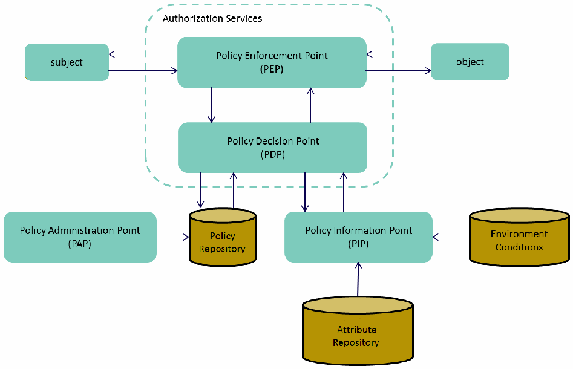
Figure 5: An Example of ACM Functional Points
図5：ACMの機能ポイントの例
未レビュー訳A PDP performs an evaluation on DPs and MPs in order to produce an access control decision. PDP and PEP are defined in this document as follows:
PDPは、アクセス制御の決定を下すため、DPおよびMPを評価する。PDPおよびPEPを本書では次のように定義する。
Policy Decision Point (PDP): Computes access decisions by evaluating the applicable DPs and MPs. One of the main functions of the PDP is to mediate or deconflict DPs according to MPs.
ポリシー決定ポイント（PDP）：適用可能なDPおよびMPを評価してアクセス決定を算出する。PDPの主な機能の1つは、MPに従ってDP間を仲介し、競合を解消することである。
未レビュー訳The PEP enforces decisions made by the PDP:
PEPはPDPが下した決定を実施する。
Policy Enforcement Point (PEP): Enforces policy decisions in response to a request from a subject requesting access to a protected object; the access control decisions are made by the PDP.
ポリシー実施ポイント（PEP）：保護されたオブジェクトへのアクセスを要求する主体からの要求に応じて、ポリシー決定を実施する。アクセス制御の決定はPDPが下す。
未レビュー訳PDP and PEP functionality can be distributed or centralized, and may be physically and logically separated from each other. For example, an enterprise could establish a centrally controlled enterprise decision service that evaluates attributes and policy, and renders decisions that are then passed to the PEP. This allows for central management and control of subject attributes and policy. Alternatively, local organizations within the enterprise may implement separate PDPs which draw on a centralized DP store. The design and distribution of ACM components requires a management function to ensure coordination of ABAC capabilities.
PDPおよびPEPの機能は分散または一元化でき、互いに物理的および論理的に分離することもできる。例えば、企業は、属性およびポリシーを評価して決定を下し、その決定をPEPに渡す、中央管理された企業決定サービスを設けることができる。これにより、主体属性およびポリシーを中央で管理し、制御できる。あるいは、企業内の各組織が、中央DPストアを利用する個別のPDPを実装してもよい。ABAC機能の連携を確保するため、ACMコンポーネントの設計および分散配置には管理機能が必要である。
To compute access decisions, the PDP must have information about the attributes. This information is provided by the PIP. The PIP is defined in this document as:
アクセス決定を算出するため、PDPは属性に関する情報を必要とする。この情報はPIPが提供する。本書ではPIPを次のように定義する。
Policy Information Point (PIP): Serves as the retrieval source of attributes, or the data required for policy evaluation to provide the information needed by the PDP to make the decisions.
ポリシー情報ポイント（PIP）：属性の取得元、またはポリシー評価に必要なデータの取得元として機能し、PDPが決定を下すのに必要な情報を提供する。
未レビュー訳Before these policies can be enforced, they must be thoroughly tested and evaluated to ensure they meet the intended need. This action is carried out by the PAP. The PAP can be defined as:
ポリシーを実施する前に、意図された目的を満たすことを確認するため、ポリシーを十分にテストおよび評価しなければならない。この作業はPAPが実施する。PAPは次のように定義できる。
Policy Administration Point (PAP): Provides a user interface for creating, managing, testing, and debugging DPs and MPs, and storing these policies in the appropriate repository.
ポリシー管理ポイント（PAP）：DPおよびMPを作成、管理、テスト、デバッグするためのユーザーインターフェースを提供し、これらのポリシーを適切なリポジトリに保存する。
未レビュー訳Finally, as an optional additional component within the ACM, the Context Handler manages the order of policy and attribute retrieval. This can be important when time critical or disconnected access control decisions must be made. For example, attributes may be retrieved in advance of an access request, or cached to avoid the delay inherent in retrieval at the time of the access request. The Context Handler also coordinates with PIPs to add attribute values to the request context, and converts authorization decisions in the canonical form (e.g., XACML) to the native response format. The Context Handler can be defined as:
最後に、ACM内の追加コンポーネントとして任意に設けられるコンテキストハンドラーは、ポリシーおよび属性を取得する順序を管理する。これは、時間的制約のあるアクセス制御の決定や、接続が切断された状態での決定を下す必要がある場合に重要となる。例えば、アクセス要求の前に属性を取得したり、要求時に取得することに伴う遅延を避けるため属性をキャッシュしたりできる。コンテキストハンドラーは、PIPと連携して要求コンテキストに属性値を追加するとともに、正規形式（例：XACML）の認可決定をネイティブな応答形式に変換する。コンテキストハンドラーは次のように定義できる。
未レビュー訳Context Handler: Executes the workflow logic that defines the order in which policy and attributes are retrieved and enforced.
コンテキストハンドラー：ポリシーおよび属性を取得し適用する順序を定めるワークフローロジックを実行する。
未レビュー訳3. ABAC Enterprise Considerations
3. 企業規模ABACに関する考慮事項
未レビュー訳Many factors must be considered before deploying an ABAC system across an enterprise. This section addresses consolidation of available guidelines based on the state of the technology to date and lessons learned through multiple attempts within the Federal Government to deploy ABAC capabilities throughout a large enterprise. The guidelines are presented according to the phases of the NIST System Development Life Cycle (SDLC) illustrated in Figure 6. For more general information regarding the definitions of the phases and expected outputs, refer to [NIST800-100]. Most considerations for employment of enterprise ABAC fall within the first four phases: Initiation, Acquisition/Development, Implementation/Assessment, and Operations/Maintenance. This section focuses on those phases exclusively.
企業全体にABACシステムを展開する前に、多くの要因を考慮する必要がある。本節では、大規模な企業全体にABAC機能を展開するために連邦政府が複数回試みた際の教訓と、現時点の技術状況に基づき利用可能な指針を取りまとめて扱う。指針は、図6に示すNISTシステム開発ライフサイクル（SDLC）の各段階に沿って提示する。各段階の定義および想定される成果物に関する一般情報については、[NIST800-100]を参照されたい。企業規模ABACの導入に関する考慮事項の大半は、最初の4段階、すなわち開始、調達／開発、実装／評価、および運用／保守に該当する。本節ではこれらの段階のみを扱う。
未レビュー訳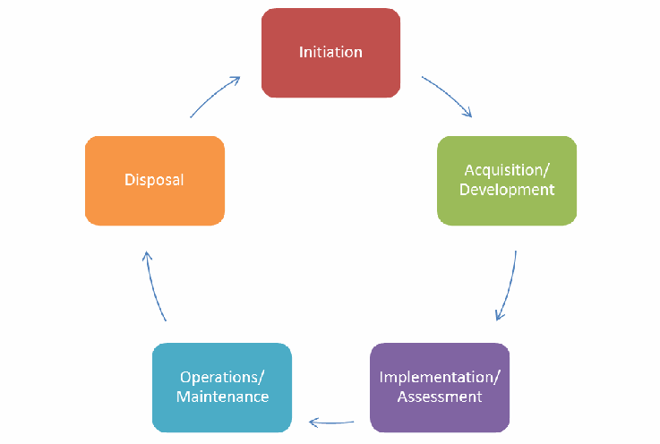
Figure 6: ACM NIST System Development Life Cycle (SDLC)
図6：ACM NISTシステム開発ライフサイクル（SDLC）
未レビュー訳The development and deployment of an enterprise ABAC capability requires the careful consideration of a number of factors that will influence its design, security, and interoperability. These factors lead to a set of questions that should be considered:
企業規模のABAC機能を開発し展開するには、その設計、セキュリティ、および相互運用性に影響する多数の要因を慎重に考慮する必要がある。これらの要因から、検討すべき一連の問いが導かれる。
•Establish the Business Case for ABAC Implementation. What are the costs of developing/acquiring new capabilities and transitioning away from old capabilities? What are the important benefits provided by ABAC? What new risks, if any, are introduced by ABAC, what new governance structures are required to manage shared capabilities and documentation of policies that were previously human-in-the-loop decisions? Which datasets, systems, applications, and networks need ABAC capabilities? How is liability for data loss or misuse of data managed?
•ABAC導入のビジネスケースを確立する。新機能の開発・取得や旧機能からの移行にどのような費用がかかるか。ABACがもたらす重要な利点は何か。ABACによって新たに生じるリスクはあるか。従来は人が介在して判断していた共有機能やポリシー文書を管理するために、どのような新たなガバナンス構造が必要か。どのデータセット、システム、アプリケーション、ネットワークにABAC機能が必要か。データの喪失または誤用に関する責任はどのように管理するか。
未レビュー訳•Understand the Operational Requirements and Overall Enterprise Architecture. How are privileges managed, monitored, and validated for compliance? What interfaces and objects will be exposed by the enterprise for information sharing? What ACM will be used? How will subject and object attributes be shared and managed? What are the access control rules and how are they captured, evaluated, and enforced? How is trust managed within the enterprise?
•運用要件とエンタープライズ全体のアーキテクチャを理解する。権限はどのように管理、監視され、コンプライアンスについて検証されるか。情報共有のために、エンタープライズはどのインターフェースとオブジェクトを公開するか。どのアクセス制御メカニズム（ACM）を使用するか。主体属性とオブジェクト属性をどのように共有・管理するか。アクセス制御規則は何であり、どのように取得、評価、実施するか。エンタープライズ内の信頼はどのように管理するか。
未レビュー訳•• Establish or Refine Business Processes to Support ABAC. Are access rules and policies fully understood and documented? How are required attributes identified and assigned? How are multiple policies applied in a hierarchy and deconflicted? How are access failures handled? Who creates new policies? How are common policies shared and managed?
•• ABACを支えるビジネスプロセスを確立または改善する。アクセス規則とポリシーは十分に理解され、文書化されているか。必要な属性はどのように特定され、割り当てられるか。複数のポリシーは階層内でどのように適用され、競合が解消されるか。アクセスの失敗はどのように処理されるか。新しいポリシーは誰が作成するか。共通のポリシーはどのように共有され、管理されるか。
•Develop and Acquire an Interoperable Set of Capabilities. How will interoperability be achieved? How are subject attributes from identity management integrated into ABAC? How are diverse or special needs for identities handled? How are subject attributes shared and maintained across enterprise entities? What are the tradeoffs with centralization versus distribution of authentication, authorization, attribute management, decision, or enforcement capability? How are environment conditions used in access decisions? How is confidence in security, quality, and accuracy measured, conveyed, and used in access decisions? How are subject attributes mapped between organizations? How are policies developed to incorporate the latest set of available subject, object, and environment condition attributes?
•相互運用可能な機能群を開発・取得する。相互運用性をどのように実現するか。アイデンティティ管理に由来する主体属性をABACにどのように統合するか。アイデンティティに関する多様なニーズや特別なニーズをどのように扱うか。企業内の各組織（エンティティ）間で、主体属性をどのように共有し維持するか。認証、認可、属性管理、決定、または実施の各機能を集中化する場合と分散する場合のトレードオフは何か。環境条件をアクセス制御の決定でどのように利用するか。セキュリティ、品質、正確性への信頼度をどのように測定、伝達し、アクセス制御の決定に利用するか。組織間で主体属性をどのように対応付けるか。利用可能な最新の主体、オブジェクト、環境条件の属性を取り込むポリシーをどのように策定するか。
•Evaluate Performance. How are subject attributes managed for disconnected and bandwidth-limited or resource-limited users? How available are interface specifications for new participants to the enterprise? How are quality and timeliness of changes to attributes and policies measured and enforced? Will overall system and end-to-end performance be adequate?
•性能を評価する。切断環境にある利用者や、帯域幅またはリソースが限られた利用者の主体属性をどのように管理するか。企業への新規参加者が利用できるインターフェース仕様はどの程度整備されているか。属性やポリシーの変更の品質と適時性をどのように測定し、強制するか。システム全体およびエンドツーエンドの性能は十分か。
未レビュー訳The following sections address these principles and questions in more detail.
以下の節では、これらの原則と質問を詳しく扱う。
3.1 Initiation Phase Considerations
3.1 開始段階における考慮事項
During the initiation phase, the organization evaluates
開始段階では、組織はABACシステムの必要性と想定用途を評価する。
未レビュー訳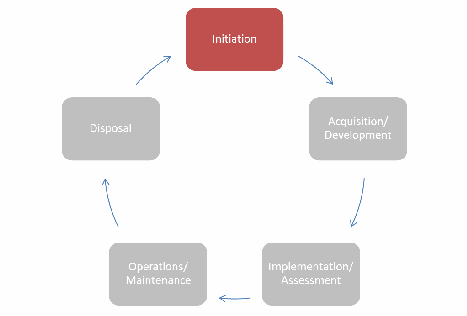
the need for an ABAC system and its potential use. It should be determined whether the ABAC system will be an independent information system or a component of an already-defined system. Once these tasks have been completed and a need has been recognized for ABAC capabilities, several processes must take place before the ABAC system is approved, to include clearly defining goals and defining high-level requirements. During this phase, the organization defines high-level business and operational requirements as well as the enterprise architecture for the ABAC system.
ABACシステムを独立した情報システムとするか、既に定義されたシステムの構成要素とするかを判断する必要がある。これらの作業が完了し、ABAC機能の必要性が認識された後、ABACシステムの承認に先立って、目標と高水準要件を明確に定義することを含む複数のプロセスを実施する。この段階で、組織はABACシステムの高水準のビジネス要件および運用要件とエンタープライズアーキテクチャを定義する。
未レビュー訳3.1.1 Building the Business Case for Deploying ABAC Capabilities
3.1.1 ABAC機能導入のビジネスケース策定
未レビュー訳As with any major system deployment, the deployment of enterprise ABAC capabilities should be preceded by significant requirements evaluation, trade studies, and planning activities to include the determination of whether ABAC is the right type of access control capability needed and feasible given the application portfolio. ABAC has the virtue of providing access without prior knowledge of or information about the subject, and large-scale enterprise information sharing of a limited set of mission or business critical objects.
あらゆる大規模なシステム導入と同様に、企業規模のABAC機能の導入に先立って、十分な要件評価、トレードオフ分析、計画を行うべきである。これには、アプリケーション群を踏まえてABACが必要かつ実現可能な適切なアクセス制御機能であるかの判断を含む。ABACには、主体について事前の知識や情報がなくてもアクセスを提供できること、ならびに任務または事業上重要な限定されたオブジェクト群を企業全体で大規模に共有できることという利点がある。
Before any technical requirements are generated or deployment decisions are made, it is important to evaluate and establish a business case for the deployment of ABAC capabilities as well as to define the scope of the enterprise targeted for these capabilities. Enterprise ABAC carries with it significant development, implementation, and operations costs as well as a change in the way enterprise objects are shared and protected. Case studies or experience reports from other organizations may be helpful in planning the ABAC deployment. It may be more practical to take an incremental approach and implement ABAC protections for a limited set of objects. This implementation would establish and utilize, to the maximum extent possible, policies and attributes appropriate for the enterprise as a whole. Feedback from incrementally building out this ABAC capability will refine policy and attribute definitions and exercise the governance and configuration management capabilities necessary to support broader ABAC use throughout the enterprise. It should be noted that without addressing the issues presented in the following subsections, an enterprise may incur significant delay and additional cost in its ABAC deployment.
技術要件を作成したり導入を決定したりする前に、ABAC機能導入のビジネスケースを評価・確立し、その対象となるエンタープライズの範囲を定義することが重要である。エンタープライズABACには、開発、実装、運用に相当の費用が伴い、エンタープライズオブジェクトの共有と保護の方法も変わる。他組織の事例研究や経験報告は、ABAC導入計画に役立つ場合がある。限定されたオブジェクト群にABAC保護を実装する段階的な方法が、より実際的な場合もある。この実装では、可能な限りエンタープライズ全体に適したポリシーと属性を確立し、利用する。ABAC機能を段階的に拡張して得られるフィードバックにより、ポリシーと属性の定義を改善し、エンタープライズ全体でより広範にABACを利用するために必要なガバナンス機能と構成管理機能を実践できる。以下の各小節に示す課題に対処しなければ、ABAC導入に大幅な遅延と追加費用が生じる可能性がある。
未レビュー訳3.1.2 Scalability, Feasibility, and Performance Requirements
3.1.2 拡張性、実現可能性および性能要件
Scalability, feasibility, and performance are important issues when considering the deployment of an ABAC product or technology. Enterprise ABAC—allowing an organization to have access to authorized objects managed by another organization in the same enterprise—requires complex interaction between ABAC components. Often these components are distributed throughout the enterprise across organization boundaries and sometimes on different networks. The larger and more diverse the enterprise, the more complex these interactions become. What may have been a simple request to access a document in a repository may now require a policy request from an enterprise service, multiple attributes from numerous logically and physically dispersed attribute sources, a third-party validation of the integrity of the object attributes bound to the document, and a decision made at one point in the enterprise while the enforcement of that decision occurs at a different point in the enterprise. Feasibility evaluation should check whether applications can support ABAC, either natively or through third-party applications. All of these potential interactions have a performance cost that must be evaluated when determining the scope of objects that may be shared through an enterprise ABAC implementation. To mitigate potential performance and scalability concerns, a variety of architectures should be considered. The distribution of ABAC components should take into account the underlying enterprise architecture, and location of necessary data and objects to be shared. For instance, PDPs and PEPs may be deployed under the same administration.
ABAC製品または技術の導入を検討する際には、拡張性、実現可能性、性能が重要な課題となる。企業ABACでは、同じ企業内の別組織が管理する認可済みオブジェクトに組織がアクセスできるようにするため、ABACコンポーネント間の複雑な連携が必要となる。これらのコンポーネントは、多くの場合、組織境界を越えて企業全体に分散し、別のネットワーク上に置かれることもある。企業が大規模かつ多様になるほど、連携は複雑になる。リポジトリ内の文書への単純なアクセス要求であったものが、企業サービスへのポリシー要求、多数の論理的・物理的に分散した属性ソースからの複数属性の取得、文書に結び付いたオブジェクト属性の完全性の第三者検証、企業内のある地点での判断と別地点での実施を必要とする場合がある。実現可能性評価では、アプリケーションがネイティブに、またはサードパーティー製アプリケーションを介してABACをサポートできるかを確認すべきである。これらの連携には性能コストが伴うため、企業ABAC実装を通じて共有するオブジェクトの範囲を決める際に評価しなければならない。性能と拡張性の懸念を緩和するため、さまざまなアーキテクチャを検討すべきである。ABACコンポーネントの分散では、基盤となる企業アーキテクチャと、共有に必要なデータおよびオブジェクトの所在を考慮すべきである。例えば、PDPとPEPを同じ管理主体の下に配備できる。
3.1.2.1 Development and Maintenance Cost
3.1.2.1 開発・保守費用
While ABAC provides many important new features when deployed across an enterprise, the cost of development, deployment, and maintenance of ABAC may exceed its benefits in the long term. In addition, the cost of retrofitting applications to use ABAC is wholly separate from procuring, setting up, and maintaining an authorization infrastructure. While cost savings can be incurred through no longer having to maintain existing solutions, it is possible that a large portion of that maintenance savings will be offset by the cost of managing and maintaining subject attributes and the policies needed for ABAC, as well as additional system support required. The benefits of having more precise3, consistent, and flexible security must be quantified and used to determine the right balance between cost of risk and cost of security. Given these considerations, ABAC is not the right solution for every access control problem but can prove viable for environments where subjects and objects carry a rich set of attributes and access decisions involve complex relationships among these attributes.
ABACをエンタープライズ全体に導入すると重要な新機能が得られる一方、長期的にはABACの開発、導入、保守費用がその利点を上回る可能性がある。また、ABACを利用するためにアプリケーションを改修する費用は、認可基盤の調達、構築、保守費用とは別に発生する。既存ソリューションの保守が不要になることで費用を削減できるものの、その保守費用の削減分の多くが、ABACに必要な主体属性やポリシーの管理・保守、および追加のシステム支援の費用で相殺される可能性がある。より精密な3、一貫性があり柔軟なセキュリティの利点を定量化し、リスクの費用とセキュリティの費用の適切な均衡を判断するために用いる必要がある。これらを踏まえると、ABACはすべてのアクセス制御課題に適した解決策ではないが、主体とオブジェクトが豊富な属性を持ち、アクセス判断が属性間の複雑な関係を伴う環境では有効となり得る。
未レビュー訳3.1.2.2 Cost of Transition to ABAC
3.1.2.2 ABACへの移行費用
The governance and business process changes that must accompany the shift to ABAC represent a significant transition to an approach where objects are controlled by enterprise-governed policies and enterprise-controlled attributes, and sometimes local control as well. These objects may now need to be associated with an additional set of characteristics that may not have been used in access control until now. Users accustomed to logging onto their network and having broad access to resources may no longer have that luxury. While policy makers will do their best to reflect current mission and business needs in policies, there will be unexpected but inevitable denials of access to those with critical mission or business functions.
ABACへの移行に伴って必要となるガバナンスおよびビジネスプロセスの変更は、エンタープライズが統制するポリシーと属性（場合によってはローカル管理も含む）によってオブジェクトを制御する方式への大きな移行となる。これらのオブジェクトには、これまでアクセス制御で使用されていなかった特性を追加で関連付ける必要が生じることがある。ネットワークにログオンすれば広範なリソースにアクセスできることに慣れた利用者は、今後そのような利便性を得られない可能性がある。ポリシー策定者は任務や事業の現在のニーズをポリシーに反映するよう最善を尽くすが、重要な任務または事業機能を担う者であっても、予期しないアクセス拒否は避けられない。
未レビュー訳As ABAC products are implemented and an organization’s access control changes, new processes and capabilities will need to be integrated into the users’ day-to-day business processes and enterprise policies. During the transition it will be important to ensure that users understand why these access control changes are being implemented and what impact they will have on the way business is done. These users will need to be educated in the new ABAC systems and processes. These changes need to be properly communicated to show the benefits of an enhanced user experience, the enhanced security and safeguarding of critical information, the requirements of the new ABAC system, and the legacy access control systems, if replaced, that will be phased out. Users may be comfortable with existing processes and may not see an immediate value in switching to an ABAC capability. It may be important to emphasize areas in which ABAC enhances the security posture of the enterprise in contrast to areas where it complements existing access control mechanisms.
ABAC製品を実装して組織のアクセス制御を変更する際、新しいプロセスと機能を利用者の日常業務プロセスおよびエンタープライズポリシーに組み込む必要がある。移行中は、アクセス制御の変更を実施する理由と業務への影響を利用者が理解できるようにすることが重要である。利用者には新しいABACシステムとプロセスについて教育する必要がある。利用者体験の向上、セキュリティ強化と重要情報の保護、新しいABACシステムの要件、および置き換えられて段階的に廃止される従来のアクセス制御システムを伝えるため、変更を適切に周知しなければならない。既存プロセスに慣れた利用者は、ABAC機能へ切り替える価値をすぐに感じない可能性がある。ABACがエンタープライズのセキュリティ態勢を強化する領域と、既存のアクセス制御メカニズムを補完する領域を区別して説明するとよい。
未レビュー訳3.1.2.3 Need to Review Privilege and Monitor Authorizations
3.1.2.3 権限の確認と認可の監視の必要性
Some enterprises may desire the ability to review the capabilities associated with subjects and their attributes and the access control entries associated with objects and their object attributes. More succinctly, there are some requirements to know what access each individual has before the requests are made. This is sometimes referred to as “before the fact audit”. Before the fact audit is often necessary to demonstrate compliance to specific regulations or directives. Another commonly desired review feature is determining who has access to a particular object or to the set of resources that are assigned to a particular object attribute. An ABAC system may not lend itself well to conducting these audits efficiently. Rather, a key feature of ABAC is the ability of the object owner to protect and share the object without any prior knowledge of individual subjects. Evaluating the set of subjects that have access to a given object requires a significant data retrieval and computation effort—possibly requiring every object owner to run a simulation of the access control request for every known subject in the enterprise. Limiting the scope of ABAC implementation can help in predetermining access authorizations, but other methods of ensuring the validity of access authorizations should be explored if the enterprise requires such validation.
エンタープライズによっては、主体とその属性に付与された機能、およびオブジェクトとその属性に関連付けられたアクセス制御エントリーを確認できることを望む場合がある。つまり、要求が行われる前に、各個人がどのアクセス権を持つかを把握する要件が存在する。これは「事前監査」と呼ばれることがある。事前監査は、特定の規制や指令への準拠を示すために必要となることが多い。別の一般的な確認機能として、特定のオブジェクト、または特定のオブジェクト属性に割り当てられたリソース群に誰がアクセスできるかを特定することが挙げられる。ABACシステムでは、こうした監査を効率的に行うのが難しい場合がある。むしろABACの主要な特徴は、個々の主体を事前に知らずに、オブジェクト所有者がオブジェクトを保護し共有できる点にある。特定のオブジェクトにアクセスできる主体群を評価するには、相当量のデータ取得と計算が必要となる。エンタープライズ内の既知の主体すべてについて、各オブジェクト所有者がアクセス要求をシミュレーションしなければならない可能性もある。ABAC導入範囲を限定すればアクセス認可を事前判定しやすくなるが、エンタープライズがそのような検証を要求する場合には、アクセス認可の妥当性を確保する別の方法も検討すべきである。
未レビュー訳3.1.2.4 Understanding Object Protection Requirements
3.1.2.4 オブジェクト保護要件の理解
Within the various parts of an enterprise there are a number of different operation and object types over which policy needs to be enforced. These may include operating systems, applications, data services, and database management systems. While some NLPs may exist to help determine authorized access, access to most objects is controlled through local group policy governed by local business rules, undocumented evaluation factors, and inherited non-standard doctrine. Implementing ABAC requires, first and foremost, a thorough understanding of the objects and their protection requirements. Without that understanding, the cost to develop and implement the technology required for enterprise ABAC increases dramatically. It is recommended that enterprise ABAC implementations be initially applied to objects that are well defined, controlled, and documented.
企業の各部分には、ポリシーを適用すべき多様な運用とオブジェクトの種類がある。これには、オペレーティングシステム、アプリケーション、データサービス、データベース管理システムなどが含まれる。認可されたアクセスの判断に役立つ自然言語ポリシー（NLP）が存在する場合もあるが、ほとんどのオブジェクトへのアクセスは、ローカルなビジネスルール、文書化されていない評価要因、継承された非標準の慣行に基づくローカルグループポリシーによって管理される。ABACの実装には、何よりもまず、オブジェクトとその保護要件を十分に理解する必要がある。理解がなければ、企業ABACに必要な技術の開発・実装費用が大幅に増加する。企業ABACは、最初に明確に定義され、管理され、文書化されたオブジェクトに適用することが推奨される。
3.1.2.5 Enterprise Governance and Control
3.1.2.5 エンタープライズガバナンスと統制
Successful enterprise ABAC requires the coordination and determination of several business process and technical factors as well as establishment of enterprise responsibilities and authorities. Without the proper governance model in place, organizations will develop stovepiped solutions and enterprise interoperability will be delayed significantly. It is recommended that an enterprise governance body be formed to manage all identity, credential, and access management capability deployment and operation and that each subordinate organization maintain a similar body to ensure consistency in managing the deployment and transition associated with enterprise ABAC implementation. Additionally, it is recommended that the governance body develop a “trust model” that can be used to illustrate the trust chain and help determine ownership and liability of information and services, needs for additional policy and governance, and requirements for technical solutions to validate or enforce trust relationships. The trust model can be used to help influence organizations to share their information with clear expectations of how that information will be used and protected, and be able to trust the information coming from other organizations.
エンタープライズABACを成功させるには、複数のビジネスプロセス要因と技術要因を調整・決定し、エンタープライズとしての責任と権限を確立する必要がある。適切なガバナンスモデルがなければ、組織ごとに分断されたソリューションが開発され、エンタープライズの相互運用性が大幅に遅れる。ID、クレデンシャル、アクセス管理機能の導入と運用を管理するため、エンタープライズのガバナンス組織を設け、各下位組織にも同様の組織を維持して、エンタープライズABACの導入と移行管理の一貫性を確保することが推奨される。さらに、ガバナンス組織は信頼チェーンを示し、情報とサービスの所有権・責任、追加のポリシーやガバナンスの必要性、信頼関係の検証または実施に必要な技術ソリューションの要件を判断するための「信頼モデル」を策定することが推奨される。信頼モデルは、情報の利用方法と保護方法について明確な期待を示し、他組織から得る情報を信頼できるようにすることで、組織の情報共有を促すために利用できる。
未レビュー訳Additionally, enterprise authorization services should be tightly integrated with security audit, data loss prevention, security configuration management, continuous monitoring, and cyber defense capabilities. Authorization services alone are not enough to ensure the security needed to protect the mission-critical objects resident on the networks. Efforts should be undertaken to fully understand enterprise security requirements and the impacts an ABAC implementation will generate. For example, when using a distributed ACM architecture there may be consequences to the ability to audit access control decisions and events.
さらに、エンタープライズ認可サービスは、セキュリティ監査、データ損失防止、セキュリティ構成管理、継続的監視、サイバー防御機能と緊密に統合すべきである。認可サービスだけでは、ネットワーク上に存在する任務上重要なオブジェクトを保護するために必要なセキュリティを確保できない。エンタープライズセキュリティ要件とABAC実装がもたらす影響を十分理解する取り組みを行うべきである。例えば、分散型ACMアーキテクチャを使う場合、アクセス制御の判断やイベントを監査する能力に影響が及ぶことがある。
未レビュー訳ABAC systems can benefit from deployment in environments governed by a trust framework. A comparison of representative trust chains for legacy ACL use and ABAC use (Figures 7 and 8) shows that there are many more complex trust relationships required for ABAC to work properly. ACLs are established by the object owner or administrator, who ultimately enforces the object access rules by provisioning access to the object through addition of a user to an ACL. In ABAC, the root of trust is derived from many sources, such as Subject Attribute Authorities or Policy Developers.
ABACシステムは、信頼フレームワークにより統制される環境への導入から恩恵を得られる。従来のACL利用とABAC利用における代表的な信頼チェーン（図7および図8）を比較すると、ABACを適切に機能させるには、より複雑な信頼関係が数多く必要となる。ACLはオブジェクト所有者または管理者が設定し、最終的にはACLに利用者を追加してオブジェクトへのアクセスを許可することで、オブジェクトのアクセス規則を実施する。ABACでは、信頼の起点は主体属性機関やポリシー開発者など、多数の情報源から形成される。
未レビュー訳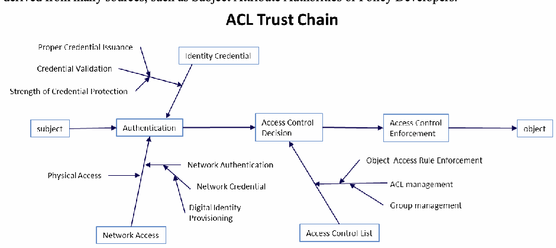
Figure 7: ACL Trust Chain
図7：ACLの信頼チェーン
未レビュー訳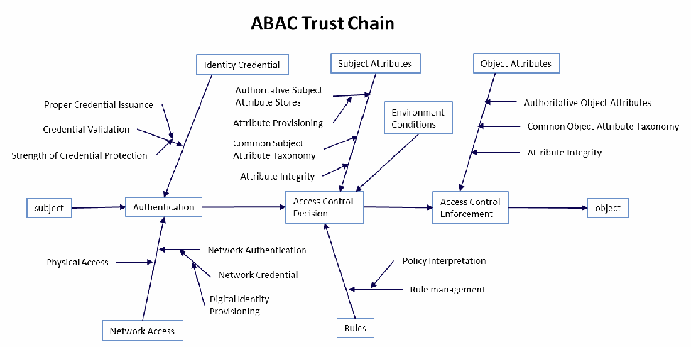
Figure 8: ABAC Trust Chain
図8：ABACの信頼チェーン
未レビュー訳When managing the risk inherent in information sharing, two perspectives of risk must be addressed when deploying an enterprise ABAC solution. First, an ABAC solution may be considered one of many security control options that help protect an enterprise from risk. The risk of unauthorized access to protected resources can be reduced with an ABAC implementation because precise policies can be implemented consistently and updated more easily to address changing threats. Second, use of ABAC may increase or decrease operational risk of an enterprise by exposing protected objects to access by unknown entities. By assuming that attributes are issued appropriately, the ABAC system is partially dependent upon the attribute-issuing authorities. This multiplicity of risk sources presents a number of challenges that must be managed through governance and a formal trust model.
情報共有に内在するリスクを管理する際、エンタープライズABACソリューションの導入では、二つの観点からリスクに対処する必要がある。第一に、ABACソリューションはエンタープライズをリスクから保護する複数のセキュリティ統制手段の一つとみなせる。精密なポリシーを一貫して実装し、脅威の変化に応じて容易に更新できるため、保護対象リソースへの不正アクセスのリスクを低減できる。第二に、ABACの利用は、未知の主体に保護対象オブジェクトへのアクセスを公開することで、エンタープライズの運用リスクを増減させる可能性がある。属性が適切に発行されることを前提とすると、ABACシステムは属性発行機関に一部依存する。このようにリスク源が複数あるため、ガバナンスと正式な信頼モデルを通じて管理すべき多くの課題が生じる。
未レビュー訳When establishing a governance model for managing the risks inherent in ABAC, it is important to ensure there are mechanisms and agreements in place with each responsible organization to monitor and manage these roots of trust and any liabilities that occur as a result of unwarranted access.
ABACに内在するリスクを管理するガバナンスモデルを確立する際には、各責任組織との間に、信頼の起点と不適切なアクセスに伴う責任を監視・管理するための仕組みと合意が存在することを確認することが重要である。
3.1.3 Developing Operational Requirements and Architecture
3.1.3 運用要件とアーキテクチャの策定
未レビュー訳Several high-level operational and architecture planning requirements must be satisfied before implementing an ABAC solution:
ABACソリューションを実装する前に、以下の高水準の運用計画要件およびアーキテクチャ計画要件を満たす必要がある。
•First, identify the objects that will be shared and protected by ABAC.
•第一に、ABACによって共有・保護するオブジェクトを特定する。
•Second, define the rules or policies that govern their protection.
•第二に、その保護を規定する規則またはポリシーを定義する。
未レビュー訳•Third, identify and define the subject and object attributes, along with their associated authorities, in coordination with the access control rule developers.
•第三に、アクセス制御規則の開発者と連携し、主体およびオブジェクトの属性と、それぞれに関係する権限機関を特定・定義する。
未レビュー訳•Fourth, develop processes regarding how the access control policies are written, validated, and managed.
•第四に、アクセス制御ポリシーの作成、検証、管理方法に関するプロセスを策定する。
•Finally, determine how the ACMs will be segmented or distributed throughout the enterprise and how attribute, policy, and decision requests and responses will be rendered.
•最後に、ACMをエンタープライズ全体にどのように区分または分散するか、また属性、ポリシー、判断の要求と応答をどのように処理するかを決定する。
未レビュー訳3.1.3.1 Object Identification and Policy Assignment
3.1.3.1 オブジェクトの識別とポリシーの割り当て
The objects selected to be shared and protected by the ABAC solution will vary based upon organizational requirements. Each object or class of object must be identified and the policy or rules protecting each must be documented. A set of business processes need to be established to identify, class, and assign policy to each new object created within the scope of the ABAC implementation.
ABACソリューションで共有・保護するオブジェクトは、組織の要件によって異なる。各オブジェクトまたはオブジェクトクラスを特定し、それぞれを保護するポリシーまたは規則を文書化する必要がある。ABAC実装の対象範囲内で新たに作成される各オブジェクトを識別、分類し、ポリシーを割り当てるための一連のビジネスプロセスを確立する必要がある。
未レビュー訳3.1.3.2 Attribute Architecture
3.1.3.2 属性アーキテクチャ
Access control policies are expressed in terms of attributes. Consequently, all required attributes must be established, defined, and constrained by allowable values required by the appropriate policies. The schema for these attributes and allowable attribute values must be published to all participants to help enable object owners with rule and relationship development. Once attributes and allowable values are established, methods for provisioning attributes and appropriate attribute values to subjects and objects need to be established as well as an architecture for any attribute repositories, retrieval services, or integrity checking services. Interfaces and mechanisms must be developed or adopted to enable sharing of these attributes.
アクセス制御ポリシーは属性によって表現される。したがって、必要なすべての属性を確立・定義し、適切なポリシーで必要となる許容値を制約として設定しなければならない。属性スキーマと許容される属性値をすべての参加者に公開し、オブジェクト所有者による規則や関係の作成を支援する必要がある。属性と許容値を確立した後、主体およびオブジェクトに属性と適切な属性値をプロビジョニングする方法を定め、属性リポジトリ、取得サービス、完全性検査サービスのアーキテクチャを策定する必要がある。これらの属性を共有できるよう、インターフェースとメカニズムを開発または採用しなければならない。
未レビュー訳3.1.3.3 Subject Attributes
3.1.3.3 主体属性
Many human subject attributes are typically provisioned upon employment with the organization and may be provisioned by several different authorities (human resources, security, organization leadership, etc.) For these, approaches to obtaining authoritative data are well known. As an example, only security authorities should be able to provision and assert clearance attributes and attribute values based on authoritative personnel clearance information; an individual should not be able to alter his or her own clearance attribute value. Other subject attributes may involve the subject’s current tasking, physical location, and the device from which a request is sent; processes need to be developed to assess and assure the quality of such subject attribute data.
人間の主体属性の多くは、通常、組織への雇用時にプロビジョニングされ、人事、セキュリティ、組織の指導部など複数の権限機関によってプロビジョニングされる場合がある。これらについて、信頼できるデータを取得する方法はよく知られている。例えば、クリアランス属性と属性値は、権威ある人事クリアランス情報に基づき、セキュリティ機関のみがプロビジョニングし、表明できるようにすべきであり、個人が自分のクリアランス属性値を変更できないようにすべきである。他の主体属性には、主体の現在の任務、物理的位置、要求の送信元デバイスが関係する場合がある。こうした主体属性データの品質を評価し保証するプロセスを策定する必要がある。
Authoritative subject attribute provisioning capabilities should be appropriately dependable in regards to quality, assurance, privacy, and service expectations. These expectations may be defined in an Attribute Practice Statement (APS). An APS provides a listing of the attributes that will be used throughout the enterprise, and may identify authoritative attribute sources for the enterprise. Still further network infrastructure capabilities (including the ability to maintain attribute confidentiality, integrity, and availability) are required to share and replicate authoritative subject attribute data within and across organizations.
信頼できる主体属性のプロビジョニング機能には、品質、保証、プライバシーおよびサービスに関する期待に照らし、適切な信頼性が求められる。これらの期待は、属性実務声明（APS）で定義できる。APSは、エンタープライズ全体で使用する属性の一覧を示し、エンタープライズの信頼できる属性ソースを特定する場合もある。さらに、組織内および組織間で信頼できる主体属性データを共有・複製するには、属性の機密性、完全性、可用性を維持する能力を含むネットワーク基盤機能が必要である。
未レビュー訳3.1.3.4 Object Attributes
3.1.3.4 オブジェクト属性
Object attributes are typically provisioned upon object creation and may be bound to the object or externally stored and referenced. It is to be expected that access control authorities cannot closely monitor all events. Frequently, this information is driven by non-security processes and requirements. Good attribute data that support good access decisions are essential, and measures must be taken to ensure that object attributes are assigned and validated by processes that the object owner or administrator considers appropriate for the application and authoritative. For example, object attributes must not be modifiable by the subject to manipulate the outcome of the access control decision. The object attributes must be made available for retrieval by access control mechanisms for access control decisions. Additional considerations for creating object attributes include:
オブジェクト属性は通常、オブジェクトの作成時にプロビジョニングされ、オブジェクトに結び付けるか、外部に保存して参照する。アクセス制御機関がすべての事象を綿密に監視できるとは限らない。こうした情報は、多くの場合、セキュリティ以外のプロセスや要件に基づく。適切なアクセス判断を支える良質な属性データは不可欠であり、オブジェクト所有者または管理者が適切かつ権威あるものとみなすプロセスによってオブジェクト属性を割り当て、検証するよう対策を講じる必要がある。例えば、アクセス制御判断の結果を操作するために主体がオブジェクト属性を変更できてはならない。アクセス制御判断のため、アクセス制御メカニズムが取得できる状態にオブジェクト属性を置く必要がある。オブジェクト属性の作成では、さらに次の点を考慮する。
未レビュー訳•In general, users will not know the values of an object attribute (e.g., to which sensitive compartment a given user is authorized). This should be accounted for in ACMs, so that users only see the values that are applicable to them.
•一般に利用者はオブジェクト属性の値（例えば、特定の利用者が認可されている機密区分）を知らない。ACMではこれを考慮し、利用者には自分に該当する値のみが表示されるようにすべきである。
未レビュー訳•As with subject attributes, a schema is required for object attributes defining attribute names and allowed values.
•主体属性と同様、オブジェクト属性にも属性名と許容値を定義するスキーマが必要である。
•Attributes need to be kept consistent in DP, MP, and NLP.
•属性はDP、MP、NLP間で一貫性を保つ必要がある。
There have been numerous efforts within the Federal Government and commercial industry to create object attribute tagging tools that provide not only data tagging, but also cryptographic binding of the attributes to the object and validation of the object attribute fields to satisfy access control decision requirements.
連邦政府および民間産業界では、データタグ付けだけでなく、属性とオブジェクトの暗号学的結合や、アクセス制御判断要件を満たすためのオブジェクト属性フィールドの検証も行うオブジェクト属性タグ付けツールを作成する取り組みが数多く行われてきた。
3.1.3.5 Environment Condition
3.1.3.5 環境条件
Environment condition refers to context information that generally is not associated with any specific subject or object but is required in the decision process. They are different from subject and object attributes in that they are not administratively created and managed, but instead are intrinsic and must be detectable by the ABAC system. Environment conditions such as the current date, time, location, threat, and system status, usually are evaluated against current matching environment variables when authorizing an access request. Environment conditions allow ABAC policies to specify exceptional or dynamic AC rules that cannot be described by subject/object attributes only. When composing ABAC rules with environment conditions, it is important to make sure that the environment condition variables and their values are globally accessible, tamper proof, and relevant for the environments where they are used.
環境条件とは、通常、特定の主体またはオブジェクトに結び付かないが判断プロセスに必要なコンテキスト情報を指す。主体属性やオブジェクト属性とは異なり、管理上作成・管理されるものではなく、本質的に備わっており、ABACシステムが検出できなければならない。現在の日付、時刻、場所、脅威、システム状態などの環境条件は、アクセス要求を認可する際に、通常、現在の対応する環境変数と照合して評価される。環境条件を使用すると、主体／オブジェクト属性だけでは記述できない例外的または動的なアクセス制御規則をABACポリシーで指定できる。環境条件を含むABAC規則を作成する際は、環境条件変数とその値がグローバルにアクセス可能で、改ざん防止され、使用される環境に関連していることを確認する必要がある。
3.1.3.6 Access Control Rules
3.1.3.6 アクセス制御規則
In ABAC, all AC rules must include some combination of attributes and allowable operations. They may also include conditions, hierarchical inheritance, and complex logic. Together these provide a rich array of options when implementing ABAC. Rule sets and the application of rule sets to objects must be governed and managed appropriately. Rules must accurately and completely reflect the NLP, and be authoritatively developed (some by organizations, some by resource owners), applied, maintained, shared, and asserted. ABAC allows multiple rules from multiple stakeholders. New techniques are needed to coordinate and obtain the proper balance of sharing and protection. In some settings, one might limit the visibility of which rules apply to which objects to limit the likelihood of unauthorized subjects manipulating attributes to obtain authorization. In other circumstances, subjects that are denied access should have a method to verify or rectify the circumstances that caused the denial. Some organizations may wish to track the denials to see if the rules were appropriate. Similarly, rule definition and employment mechanisms and processes should include a robust rule deconfliction (resolution for the different decisions of rules) capability to determine rule conflicts and resolution processes.
ABACでは、すべてのアクセス制御規則に、属性と許容操作の何らかの組み合わせを含める必要がある。条件、階層継承、複雑な論理を含めることもできる。これらを組み合わせると、ABACの実装時に豊富な選択肢が得られる。規則群と、オブジェクトへの規則群の適用を適切に統制・管理しなければならない。規則はNLPを正確かつ完全に反映し、権限に基づいて策定（組織が策定するものもあれば、リソース所有者が策定するものもある）され、適用、保守、共有、表明されなければならない。ABACでは複数の利害関係者が複数の規則を設定できる。適切な共有と保護の均衡を調整し確保するため、新たな手法が必要となる。権限のない主体が属性を操作して認可を得る可能性を抑えるため、どの規則がどのオブジェクトに適用されるかの可視性を制限する場合がある。別の状況では、アクセスを拒否された主体は、拒否の原因となった状況を確認または是正する方法を持つべきである。規則が適切だったかを確認するため、拒否を追跡する組織もある。同様に、規則の定義と適用に関する仕組み・プロセスには、規則間の判断の相違を解決する堅牢な競合解消機能を含め、規則の競合とその解決手順を特定できるようにすべきである。
3.1.3.7 Access Control Mechanism and Context Handling
3.1.3.7 アクセス制御メカニズムとコンテキスト処理
The distribution and orchestration of ACM must be predetermined to avoid conflicts and weaknesses in object protection. For example, if an identical object is held by two different organizations, an unauthorized subject should not be able to access the version held by the organization with lesser restrictions. ACMs should be managed, maintained, and employed in a consistent manner to ensure interoperability and comprehensive security.
オブジェクト保護の競合や弱点を避けるには、ACMの分散とオーケストレーションを事前に定める必要がある。例えば、同一オブジェクトを異なる二つの組織が保有する場合、権限のない主体が制限の緩い組織の版にアクセスできてはならない。相互運用性と包括的なセキュリティを確保するため、ACMは一貫した方法で管理、保守、運用する必要がある。
未レビュー訳The order in which the ACM retrieves information, evaluates for a decision, and enforces the decision can differ greatly based on the specific requirements of the implementation, and may even take into account environment conditions during access control decision rendering. This is referred to as Context Handling and simply refers to the workflow the ACM undertakes when gathering the data needed for a decision.
ACMが情報を取得し、判断を評価し、その判断を実施する順序は、実装の具体的要件によって大きく異なり、アクセス制御判断時に環境条件を考慮することもある。これは「コンテキスト処理」と呼ばれ、判断に必要なデータを収集する際にACMが実行するワークフローを指す。
未レビュー訳Additionally, where and how policy, attribute, and decision information are stored and exchanged throughout the enterprise is an important consideration, for performance and scalability purposes.
さらに、性能と拡張性の観点から、エンタープライズ全体でポリシー、属性、判断の情報をどこにどのように保存・交換するかも重要な考慮事項である。
未レビュー訳3.2 Considerations during the Acquisition/Development Phase
3.2 取得／開発段階における考慮事項
During the acquisition/development phase, the
取得／開発段階では、システムが設計、購入、プログラミング、開発、またはその他の方法で構築される。通常、この段階で組織はエンタープライズ全体で実行するためのビジネスプロセスを準備し、導入・統合するシステムを定義する。この段階の前半では、組織はシステムのセキュリティ要件と機能要件を同時に定義すべきである。後半では、実装／評価段階を開始する前に、技術的機能とセキュリティ機能が意図どおりに動作することを確認するため、開発試験を実施すべきである。
未レビュー訳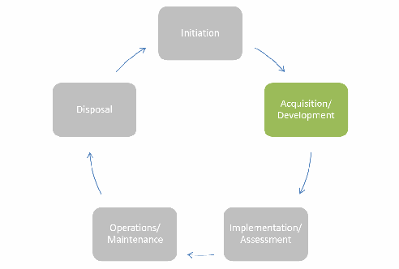
system is designed, purchased, programmed, developed, or otherwise constructed. Typically, during this phase, the organization prepares the business processes needed for enterprise-wide execution and defines the systems to be deployed and integrated. During the first part of this phase, the organization should simultaneously define the system’s security and functional requirements. During the last part of this phase, the organization should perform developmental testing of the technical and security features/functions to ensure that they perform as intended prior to launching the implementation/assessment phase.
取得／開発段階では、
未レビュー訳3.2.1 Business Process Generation and Deployment Preparation
3.2.1 ビジネスプロセスの作成と導入準備
3.2.1.1 Documentation of Rules
3.2.1.1 規則の文書化
For each of the types of objects controlled by an organization, there should be an accompanying set of access control rules documented in an NLP. (Use cases might provide the easiest means for enterprise participants to define NLP for a set of objects.) These rules should dictate who can and cannot create, view, modify, delete, forward, and interact with data and services controlled by the organization and under what context or environment conditions they have those privileges. Documenting these rules incorporates the organization’s interpretation of applicable policies and guidance, the specific sensitivities of applicable objects, and knowledge of appropriate user communities that will need the objects.
組織が管理する各種オブジェクトについて、それに対応するアクセス制御規則をNLPに記録すべきである。（ユースケースは、エンタープライズ参加者がオブジェクト群のNLPを定義する最も容易な手段となることがある。）これらの規則では、組織が管理するデータとサービスについて、誰が作成、表示、変更、削除、転送、操作できるか、またどのようなコンテキストまたは環境条件でそれらの権限を持つかを定めるべきである。規則の文書化には、適用されるポリシーとガイダンスの組織による解釈、対象オブジェクト固有の機微性、およびオブジェクトを必要とする利用者コミュニティに関する知識を反映する。
Documenting NLP facilitates the development of DP and provides traceability back to the written policy. For example, many organizations have difficulties transitioning their authorization capabilities from ACLs into a more robust ABAC infrastructure because no corresponding NLP exists. As an example, consider that when a request for access is received, the data owner evaluates a set of criteria—usually undocumented—such as, “Is this person a member of the working group?” or “Am I familiar with this person or his or her organization?” and then renders a decision before adding the requestor’s name to the appropriate ACL. Well documented NLPs enable transition from human generated decision making to a consistent automated policy driven access control decision.
NLPを文書化すると、DPの策定が容易になり、文書化されたポリシーへの追跡可能性が得られる。例えば、対応するNLPが存在しないため、ACLから堅牢なABAC基盤へ認可機能を移行することに苦労する組織は多い。アクセス要求を受け取ると、データ所有者は通常文書化されていない一連の基準、例えば「この人は作業部会の一員か」「この人または所属組織を知っているか」を評価して判断し、その後、要求者の名前を適切なACLに追加する場合を考える。十分に文書化されたNLPを用いると、人が行う判断から、一貫した自動化ポリシー駆動型のアクセス制御判断へ移行できる。
3.2.1.2 Customizing Policy
3.2.1.2 ポリシーのカスタマイズ
Unless required by higher authorities or obligations, subordinate organizations should not make local policies less stringent. If subordinate organizations in an enterprise are able to independently relax the restrictions established for enterprise policy, the security inherent in the system is undermined, possibly allowing local access to enterprise objects where it would otherwise be forbidden.
上位機関または義務による要求がない限り、下位組織はローカルポリシーをより緩やかにすべきではない。エンタープライズ内の下位組織がエンタープライズポリシーで定めた制限を独自に緩和できれば、システムに組み込まれたセキュリティが損なわれ、通常は禁止されるエンタープライズオブジェクトへのローカルアクセスが許される可能性がある。
未レビュー訳Local access policies implemented in a federated enterprise should reflect the enterprise policy associated with the requested object, based on mapped attributes from the requestor’s organization. Depending on the sharing agreements between organizations, objects with shared ownership or control should be protected according to the most restrictive policy.
連合型エンタープライズに実装するローカルアクセスポリシーは、要求者の組織から対応付けられた属性に基づき、要求対象オブジェクトに関連するエンタープライズポリシーを反映すべきである。組織間の共有合意に応じて、所有権または統制を共有するオブジェクトは、最も制限の厳しいポリシーに従って保護すべきである。
未レビュー訳3.2.1.3 Agreement and Understanding of Attributes
3.2.1.3 属性に関する合意と理解
A consistent set of valid values must be defined and applied for enterprise subject and object attributes. This allows authorization decisions to be based on known values that are consistent throughout the enterprise. The lifecycle management of attributes is the responsibility of the provisioning organization, whether the attributes are used exclusively within an organization or across organizations.
エンタープライズの主体属性およびオブジェクト属性について、有効な値の一貫した集合を定義し、適用する必要がある。これにより、エンタープライズ全体で一貫した既知の値に基づいて認可判断を行える。属性が単一組織内だけで使用されるか、組織間で使用されるかを問わず、属性のライフサイクル管理はプロビジョニング組織の責任である。
3.2.1.4 Understanding Meaning of Attributes
3.2.1.4 属性の意味の理解
Attribute service providers need to describe attributes and their relationship with other attributes so that consumers may properly and effectively use attributes. Attribute service providers must document the definitions and meanings of enterprise authorization attribute values and provide guidance on the use of the attributes. In some cases, attributes must be used in combination with other attributes to establish a valid context, such as the combination of role and organization—a role has no meaning unless it is defined within the context of an organization. For example, the Director of Operations for an entire organization, whose responsibilities may encompass the Finance, Human Resources, Legal, and other departments, has an entirely different contextual meaning from the Director of Operations within the Web Services branch of the IT Department. Without the understanding of the guidance related to the attribute, its context, and the knowledge that these attribute values are required together to render a decision, the DP—and hence the decision—may be generated on insufficient information or using faulty logic.
属性サービスプロバイダーは、利用者が属性を適切かつ効果的に使用できるよう、属性と他の属性との関係を説明する必要がある。属性サービスプロバイダーは、エンタープライズ認可属性値の定義と意味を文書化し、属性の使用方法に関するガイダンスを提供しなければならない。場合によっては、有効なコンテキストを確立するため、役割と組織の組み合わせなど、属性を他の属性と組み合わせて使用する必要がある。役割は組織のコンテキストで定義されない限り意味を持たない。例えば、財務、人事、法務などを管轄する組織全体の運用部長と、IT部門のWebサービス部門の運用部長とでは、コンテキスト上の意味がまったく異なる。属性、そのコンテキストに関するガイダンス、および判断には属性値の組み合わせが必要であるという理解がなければ、DP、ひいては判断が、不十分な情報または誤った論理に基づいて生成される可能性がある。
未レビュー訳3.2.1.5 Processes and Procedures for Access Failures
3.2.1.5 アクセス失敗に関するプロセスと手順
A set of procedures and requirements for communicating exception handling, access denials, and errors should be established to provide users a means to remediate access decisions given mission, role, and need-to-know imperatives. As authorization services mature from the traditional method of provisioning an account and populating an ACL to an automated decision process, it will be more difficult for system users to understand and remedy access denials. A well-established process for properly discovering and obtaining the attributes needed for access approval will help ease the transition. This can be expanded to address dropped connections or other difficulties in accessing the authorization service component.
例外処理、アクセス拒否、エラーを伝達するための手順と要件を確立し、任務、役割、知る必要性に関する要請に照らしてアクセス判断を是正する手段を利用者に提供すべきである。アカウントをプロビジョニングしてACLに登録する従来方式から、自動判断プロセスへ認可サービスが成熟するにつれ、システム利用者がアクセス拒否を理解し、是正することは難しくなる。アクセス承認に必要な属性を適切に発見・取得するための確立されたプロセスがあれば、移行を円滑にできる。このプロセスは、接続切断や認可サービスコンポーネントへのアクセス上のその他の問題にも対応できる。
未レビュー訳In a mission-critical role, the subject should be able to understand the limitations and request an exception, be pointed to an authoritative source of help, or attempt an alternate path to access equivalent information or services.
任務上重要な役割においては、主体は制限を理解した上で例外を申請するか、信頼できる支援元を案内されるか、同等の情報またはサービスへアクセスする別経路を試せるようにすべきである。
3.2.1.6 Attribute Privacy Considerations
3.2.1.6 属性プライバシーに関する考慮事項
ABAC capabilities should be developed to comply with all applicable privacy laws, directives, and policy. Due to the personal and descriptive nature of subject attributes, implementing attribute sharing capabilities may increase the risk of privacy violation of personally identifiable information (PII) due to inadvertent exposure of attribute data to untrusted third parties or aggregation of sensitive information in environments less protected than the originator’s. Organizations engaged in attribute sharing should employ trust agreements to ensure the proper handling of PII and enforcement of PII regulations. These trust agreements should detail authorized PII use and handling for all components in the trust chain as well as methods for validating, remediating, and adjudicating liability for regulatory infractions. A second consideration is that subject attributes can be revealed by the patterns of grant/deny decisions. If a subject accesse a particular resource, the subject must possess attributes as specified in the access rule for that resource. The organization should protect access logs or other means of discovering grant/deny decisions.
ABAC機能は、適用されるすべてのプライバシー法、指令、ポリシーに準拠するよう開発すべきである。主体属性は個人に関する記述的な性質を持つため、属性共有機能を実装すると、信頼できない第三者に属性データが不用意に漏えいしたり、発信元より保護水準が低い環境に機微情報が集約されたりして、個人識別情報（PII）のプライバシー侵害リスクが高まる可能性がある。属性を共有する組織は、PIIの適切な取扱いとPII規則の遵守を確保するため、信頼合意を用いるべきである。信頼合意では、信頼チェーン内のすべての構成要素におけるPIIの許可された使用・取扱いと、規制違反に関する責任を検証、是正、裁定する方法を詳述すべきである。もう一つの考慮事項は、許可／拒否の判断パターンから主体属性が明らかになる可能性である。主体が特定のリソースにアクセスした場合、そのリソースのアクセス規則で指定された属性を主体が備えていることが分かる。組織は、許可／拒否の判断を発見できるアクセスログその他の手段を保護すべきである。
未レビュー訳3.2.1.7 Digital Policy Creation and Maintenance
3.2.1.7 デジタルポリシーの作成と保守
未レビュー訳Each DP should be specified to satisfy the requirements of an NLP. DPs are sensitive and need to be protected in the same way as objects, according to an appropriate policy. These policies may pertain to creation and modification of specific portions of the DP. DPs should be written or modified only by individuals who can interpret NLPs and have authority to write the DP. Implementing a particular NLP may require specification of multiple DPs. Special consideration should be taken to ensure that subordinate policies do not conflict with higher level policies. Individual organizations should develop and maintain local policy and unique policy that applies only to their constituent or subordinate organizations.
各DPはNLPの要件を満たすように規定すべきである。DPは機微情報であり、適切なポリシーに従ってオブジェクトと同様に保護する必要がある。これらのポリシーは、DPの特定部分の作成や変更に関係する場合がある。DPの作成または変更は、NLPを解釈でき、DPを作成する権限を持つ者だけが行うべきである。特定のNLPを実装するには、複数のDPを規定する必要がある場合がある。下位ポリシーが上位ポリシーと競合しないよう、特に注意する必要がある。各組織は、構成組織または下位組織にのみ適用されるローカルポリシーおよび独自ポリシーを策定・維持すべきである。
3.2.2 System Development and Solution Acquisition Considerations
3.2.2 システム開発およびソリューション取得に関する考慮事項
3.2.2.1 Standardization and Interoperability within the Enterprise
3.2.2.1 エンタープライズ内の標準化と相互運用性
Implementers of ABAC should strongly consider using a comprehensive standards-based approach that enables current day interoperability and future deployment flexibility by making use of products or capabilities that meet these objectives. An established practice to achieve interoperability and cost-efficient ABAC deployments is to use a series of standards, specifications, and standardized configurations (specifying a subset of standard options, i.e., a profile). Standards that have optional elements may be implemented inconsistently by developers, making it possible for services or applications that are fully compliant with a standard to be non-interoperable. For this reason, well-defined and standardized profiles should be encouraged, especially in cross-organizational environments. When acquiring ABAC solutions, implementers should use commonly agreed-upon tailored profiles as well as leverage the standards and profiles contained within existing standards registries.
ABACの実装者は、現在の相互運用性と将来の導入柔軟性を実現する包括的な標準ベースのアプローチを強く検討すべきである。そのためには、これらの目標を満たす製品または機能を利用する。相互運用性と費用対効果の高いABAC導入を実現する確立された方法は、一連の標準、仕様、標準化された構成（標準の選択肢の一部を指定するもの、すなわちプロファイル）を使用することである。任意要素を含む標準は開発者ごとに実装が一貫しない可能性があり、その標準に完全準拠するサービスまたはアプリケーションであっても相互運用できないことがある。このため、特に組織間環境では、明確に定義された標準プロファイルを推奨すべきである。ABACソリューションを取得する際、実装者は広く合意された調整済みプロファイルを使用するとともに、既存の標準レジストリに含まれる標準とプロファイルを活用すべきである。
未レビュー訳Individual authorization service components (e.g., policy decision point, policy enforcement point, policy retrieval point, attribute retrieval point, metaattribute retrieval point) should be developed with standard, open interfaces so that systems from multiple products can be employed while ensuring interoperability. Enterprises should consider a set of requirements addressing functionality, interfaces, infrastructure, and product support to employ as a filter within the procurement process for all acquisitions regardless of categorization or affiliation.
個々の認可サービスコンポーネント（例：ポリシー決定点、ポリシー実施点、ポリシー取得点、属性取得点、メタ属性取得点）は、複数製品のシステムを使用しながら相互運用性を確保できるよう、標準化されたオープンインターフェースで開発すべきである。エンタープライズは、分類や所属にかかわらずすべての調達で調達プロセスの選別基準として用いるため、機能、インターフェース、基盤、製品サポートを扱う一連の要件を検討すべきである。
未レビュー訳3.2.2.2 Identity Management Integration
3.2.2.2 ID管理との統合
A request for access to an object must be authenticated as originating from a unique subject. Authentication is achieved through use of identity credentials, and must occur before an access decision can be made. The ABAC system needs to support the prevalent and strategic authentication mechanisms and credentials used by the organization. This may mean the organization needs to make enhancements to its authentication infrastructure, if its current state impedes ABAC adoption. The subject attributes conveyed in these credentials should uniquely determine the subject, and the identity vetting process used to issue credentials should be sufficient to hold the identified entity accountable. The issuance and vetting processes should be recognized throughout the enterprise as trustworthy and sufficient to enforce accountability requirements. Strong authentication methods should be used that are of sufficient assurance for the request ([NIST800-63-3, NIST800-63B]). Once the subject is authenticated, attributes associated with the subject can be used to determine an access decision, and access decisions can be captured in required audit records/systems to provide attribution of the request. For example, a request transferred via a Transport Layer Security (TLS) 1.2 session with client authentication [RFC5246] depending on X.509 certificates issued by a trusted certificate authority is associated to the entity bound by the certificate authority to the distinguished name.
オブジェクトへのアクセス要求は、一意の主体から発信されたものとして認証しなければならない。認証はIDクレデンシャルを用いて行い、アクセス判断の前に完了していなければならない。ABACシステムは、組織で広く使われ、戦略上重要な認証メカニズムとクレデンシャルをサポートする必要がある。現在の認証基盤がABAC導入を妨げる場合、組織は認証基盤を強化する必要があるかもしれない。クレデンシャルで伝達される主体属性は主体を一意に特定すべきであり、クレデンシャル発行時の本人確認プロセスは、識別された実体に説明責任を負わせるのに十分でなければならない。発行および本人確認プロセスは、エンタープライズ全体で信頼でき、説明責任要件の実施に十分なものと認識されるべきである。要求に見合う十分な保証レベルを持つ強力な認証方式を使用すべきである（[NIST800-63-3, NIST800-63B]）。主体が認証された後、主体に関連付けられた属性をアクセス判断に利用できる。また、要求の帰属を明らかにするため、アクセス判断を必要な監査記録／システムに記録できる。例えば、Transport Layer Security（TLS）1.2のクライアント認証セッション[RFC5246]を介して転送された要求で、信頼された認証局が発行したX.509証明書に基づくものは、認証局が識別名に結び付けた実体に関連付けられる。
未レビュー訳3.2.2.3 Support for NPEs
3.2.2.3 NPEのサポート
未レビュー訳Support for NPEs in access control services has special requirements. Authorization services use attributes associated with entities in any form. The attributes bound to the NPE not only help define the unique NPE but also reflect the context of that entity within an organization.
アクセス制御サービスでNPEをサポートするには、特別な要件がある。認可サービスは、あらゆる形態の実体に関連付けられた属性を使用する。NPEに結び付く属性は、一意のNPEを定義するだけでなく、組織内におけるその実体のコンテキストも表す。
未レビュー訳In some cases, an NPE subject may be acting on behalf of one or more human subjects. These NPEs may carry their own identity credentials independent of any human subject. Note that the access control system basing an access decision on an NPE credential will not be able to attribute the request to the individual or individuals who may be acting in that role, or logged into the group account, at the time of the request. NPEs may act either independently or on behalf of an authenticated individual. NPEs may include network devices (e.g., switches, routers), processes running on servers (e.g., portals), workstations, and other endpoint devices. As mission and security functions are increasingly automated, NPEs will play a larger role as actors in authorization service interactions.
場合によっては、NPE主体が一人以上の人間の主体を代理して動作することがある。こうしたNPEは、人間の主体とは独立した独自のIDクレデンシャルを持つ場合がある。NPEクレデンシャルに基づいてアクセス判断を行うアクセス制御システムでは、要求時にその役割を担っている、またはグループアカウントにログインしている個人を要求に帰属させられない点に注意する。NPEは独立して動作することも、認証された個人を代理して動作することもある。NPEには、ネットワーク機器（例：スイッチ、ルーター）、サーバー上で稼働するプロセス（例：ポータル）、ワークステーション、その他のエンドポイント機器が含まれる場合がある。任務機能とセキュリティ機能の自動化が進むにつれて、認可サービスとのやり取りにおいてNPEが果たす役割は大きくなる。
3.2.2.4 Authentication and Data Integrity between ABAC Components
3.2.2.4 ABACコンポーネント間の認証とデータ完全性
The authorization service requires strong mutual authentication between ABAC components (e.g., PEP, PDP) when authorization service components exchange sensitive information. For each exchange, proof of origin, data integrity, and timeliness should be considered. For example, when the authorization service needs to obtain attributes from an authoritative attribute service, mutual authentication should be used, followed by mechanisms for validating message integrity and message origin. Authentication protocols based on strong methods (e.g., X.509 authentication) should be used to provide the level of assurance needed by both parties involved in the attribute exchange.
認可サービスコンポーネントが機微情報を交換する場合、認可サービスはABACコンポーネント（例：PEP、PDP）間の強力な相互認証を必要とする。各交換では、送信元の証明、データ完全性、適時性を考慮すべきである。例えば、認可サービスが権威ある属性サービスから属性を取得する必要がある場合、相互認証を使用し、その後、メッセージの完全性と送信元を検証するメカニズムを使用すべきである。属性交換に関与する双方が必要とする保証レベルを提供するため、強力な方式に基づく認証プロトコル（例：X.509認証）を使用すべきである。
3.2.2.5 Integrating Other Controls with ABAC
3.2.2.5 ABACと他の統制の統合
Authorization services alone are not enough to ensure the security needed to protect the mission-critical objects distributed throughout the enterprise. Comprehensive and cohesive security capabilities are needed to establish the desired level of assurance, and they must be tightly integrated and able to seamlessly feed the security information needed for making and enforcing access decisions. These other controls may include subject authentication, security audit, security configuration management, intrusion detection, and monitoring capabilities.
エンタープライズ全体に分散する任務上重要なオブジェクトを保護するために必要なセキュリティを、認可サービスだけで確保することはできない。望ましい保証レベルを確立するには包括的かつ一貫したセキュリティ機能が必要であり、アクセス判断の作成と実施に必要なセキュリティ情報を円滑に供給できるよう緊密に統合されなければならない。他の統制には、主体認証、セキュリティ監査、セキュリティ構成管理、侵入検知、監視機能などが含まれる。
3.2.2.6 Selection and Accessibility of Attribute Sources
3.2.2.6 属性ソースの選定とアクセス可能性
Authorities should be clearly identified so that the attribute source is able to provide attributes to the policy decision point from an authoritative source. When multiple attribute services are available, possibly with different metaattributes (such as assurance level), the attribute store/policy information point should balance the retrieval of attributes that satisfy the most restrictive policies, with performance and availability requirements.
属性ソースが権威ある情報源からポリシー決定点に属性を提供できるよう、権限機関を明確に特定すべきである。異なるメタ属性（保証レベルなど）を持つ複数の属性サービスを利用できる場合、属性ストア／ポリシー情報点は、最も制限の厳しいポリシーを満たす属性の取得と、性能・可用性要件との均衡を図るべきである。
3.2.2.7 A Shared Repository for Subject Attributes
3.2.2.7 主体属性の共有リポジトリ
未レビュー訳Direct use of shared repositories for subject attributes should be considered where there is sufficient network connectivity to take advantage of economies of scale, increased quality control, and standard interfaces. Another advantage of using shared attribute repositories is that they provide a single access point for data from multiple sources. Building and managing a connection to a single access point may be less complex than managing multiple connections. In some cases, limited connectivity, insufficient bandwidth, or intermittent connections may prevent authorization service providers from being able to use shared repositories reliably. It may be necessary to maintain local copies of data that cannot be continuously in sync with a shared attribute repository, and thus not have access to current data.
規模の経済、品質管理の向上、標準インターフェースを活用できるだけのネットワーク接続性がある場合、主体属性の共有リポジトリを直接利用することを検討すべきである。共有属性リポジトリのもう一つの利点は、複数のソースのデータに対する単一のアクセスポイントを提供する点である。複数の接続を管理するより、単一のアクセスポイントへの接続を構築・管理する方が複雑さを抑えられる場合がある。接続性の制限、帯域幅不足、断続的な接続により、認可サービスプロバイダーが共有リポジトリを確実に利用できない場合もある。共有属性リポジトリと常時同期できず、最新データを利用できないローカルコピーを維持する必要が生じることがある。
未レビュー訳3.2.2.8 Minimum Attribute Assignments
3.2.2.8 属性割当ての最小要件
In some enterprises, a minimum set of attributes may be defined. With a standard set of enterprise subject attributes and object attributes, DPs can more easily be developed and modified to reflect changes in policy. One example of where this approach applies is with classification and compartmentalization markings within classified networks. In most cases, an object cannot be placed on the network without proper marking, and access control policies are written to address the finite and well-known set of classification and compartmentalization markings.
一部のエンタープライズでは、属性の最小集合を定義する場合がある。エンタープライズの主体属性とオブジェクト属性の標準セットがあれば、ポリシー変更を反映するDPの作成と変更が容易になる。この方法の適用例として、機密ネットワーク内の分類および区分表示がある。多くの場合、適切な表示のないオブジェクトはネットワークに置けず、アクセス制御ポリシーは、有限で既知の分類および区分表示の集合を対象に作成される。
3.2.2.9 Environment Conditions
3.2.2.9 環境条件
When required by policy, environment (or contextual) information can be fed into the access control process. Examples include threat level, subject/object location, method of authentication, or time of day. The environment conditions may change more rapidly over time than subject and object attributes.
ポリシーで要求される場合、環境情報（またはコンテキスト情報）をアクセス制御プロセスに取り込める。例として脅威レベル、主体／オブジェクトの位置、認証方法、時刻などがある。環境条件は主体属性やオブジェクト属性よりも時間とともに急速に変化することがある。
3.2.2.10 Attribute Management
3.2.2.10 属性管理
Authorities for assigning attributes should be clearly defined and consistent with an appropriate attribute policy. Some form of validation, integrity, and provenance mechanisms (to verify the completeness, allowable values, integrity, and change history of attributes) should be integrated into the mechanism or framework used to manage attributes.
属性の網羅性、許容値、完全性（integrity）、変更履歴を検証しなければならない。
未レビュー訳3.2.2.11 NLP/DP Traceability
3.2.2.11 NLP／DPの追跡可能性
A comprehensive and coherent traceability between high-level enterprise written policy/NLP and low-level enterprise or local DP should be maintained by an appropriate authority. This will enable changes to written policy to be evaluated and subsequent DPs to be altered accordingly. With this policy traceability, the plethora of DPs resident in local organizations will be auditable, verifiable, and alterable given any change to requirements.
エンタープライズの高水準の文書化されたポリシー／NLPと、低水準のエンタープライズまたはローカルDPとの包括的かつ一貫した追跡可能性を、適切な権限機関が維持すべきである。これにより、文書化されたポリシーの変更を評価し、それに応じて後続のDPを変更できる。このポリシーの追跡可能性により、ローカル組織に存在する多数のDPは、要件変更に応じて監査、検証、変更できる。
未レビュー訳3.2.2.12 Rules or Policies Based on the Agreed Attributes
3.2.2.12 合意済み属性に基づく規則またはポリシー
If an organization has an agreement with one or more organizations to use a defined list of attributes (some industry and use case-specific groupings of attributes are available today), the organization that owns the objects must ensure that it writes access control policies based only on those attributes. Every effort should be made to use any accepted common set of shared enterprise attributes, no matter how limited, to ensure basic interoperability if only to effect a limited secure information sharing capability. As new requirements arise, the enterprise may choose to introduce new enterprise attributes and rules for sharing them.
組織が1つ以上の組織と定義済み属性リストの使用に合意している場合（業界別またはユースケース別の属性グループがすでに利用できる場合もある）、オブジェクト所有組織は、それらの属性だけに基づくアクセス制御ポリシーを作成しなければならない。たとえ限定的な安全な情報共有機能を実現するだけであっても、基本的な相互運用性を確保するため、範囲が限られていても、受け入れられた共通の企業共有属性セットを可能な限り使用すべきである。新しい要件が生じた場合、企業は新たな企業属性と、その共有規則を導入してもよい。
For example, the OASIS XACML Export Control–US (EC-US) and Intellectual Property Control (IPC) Profiles serve as examples of domain-specific standardized attributes with generally constrained attribute values. The EC-US Profile documents the attributes common to access control decisions for the U.S. Department of Commerce Export Administration Regulations (EAR) and the U.S. Department of State International Traffic in Arms Regulations (ITAR).
例えば、OASIS XACMLの輸出管理–米国（EC-US）プロファイルおよび知的財産管理（IPC）プロファイルは、一般に属性値が制約された、分野固有の標準属性の例である。EC-USプロファイルは、米国商務省の輸出管理規則（EAR）と米国国務省の国際武器取引規則（ITAR）に関するアクセス制御判断で共通に用いられる属性を文書化している。
3.2.2.13 Externalization of Policy Decision Services
3.2.2.13 ポリシー決定サービスの外部化
It is common to implement PDPs as services, separate from individual enterprise services and applications. Doing so removes the burden and expense of providing similar decision services for every enterprise service or application, since a single PDP can support multiple enterprise authorization services. Allowing authorization service providers to use PDP services that are provided by the larger enterprise or by the organization greatly simplifies service/application development; saves money that would otherwise be spent on licensing, training, configuring, and deploying disparate instances of these services; and moves operations and maintenance away from individual programs.
個々のエンタープライズサービスやアプリケーションから分離し、PDPをサービスとして実装するのが一般的である。単一のPDPが複数のエンタープライズ認可サービスを支援できるため、各エンタープライズサービスまたはアプリケーションに同様の判断サービスを提供する負担と費用を取り除ける。より大きなエンタープライズまたは組織が提供するPDPサービスを認可サービスプロバイダーが利用できるようにすると、サービス／アプリケーションの開発が大幅に簡素化される。これにより、サービスの個別インスタンスのライセンス、訓練、構成、配備に必要な費用を削減し、運用・保守を個々のプログラムから切り離せる。
未レビュー訳3.2.3 Considerations for Other Enterprise ABAC Capabilities
3.2.3 その他のエンタープライズABAC機能に関する考慮事項
When developing and implementing ABAC enterprise authorization capabilities, architects and program managers must keep in mind that there will inevitably be a long transition from the current access control methods in use now to the desired end state. As standards and technology mature, organizations will need to embrace concepts that enhance interoperability and promote higher assurance solutions while discarding proprietary, stovepiped solutions.
エンタープライズ認可機能としてABACを開発・実装する際、アーキテクトとプログラムマネージャーは、現在利用中のアクセス制御方式から望ましい最終状態への移行には必然的に長い時間がかかることを念頭に置く必要がある。標準と技術の成熟に伴い、組織は相互運用性を高め、より高い保証レベルのソリューションを促す概念を採用すると同時に、独自仕様で縦割りのソリューションを廃止する必要がある。
未レビュー訳3.2.3.1 Confidence in Access Control Decisions
3.2.3.1 アクセス制御判断への信頼度
An access control decision is made by using the accurate, timely, and relevant data gathered from authoritative source(s) that are appropriate to the level of risk. Confidence in the access control decision depends upon timeliness, relevance, authority, and quality, reliability, and completeness of information used to compute the decision. Other factors in establishing confidence include identification and authentication processes (e.g., strength of authentication mechanism, identity vetting, credential issuance and proofing, attestation, source Internet Protocol [IP] address). When adopting a risk-based approach to ABAC, the factors discussed above should be taken into account.
アクセス制御判断は、リスクレベルに適した権威ある情報源から収集した、正確で適時性があり関連性のあるデータを用いて行う。判断への信頼度は、判断の計算に使用する情報の適時性、関連性、権威性、品質、信頼性、完全性に依存する。信頼度を確立するその他の要因には、識別・認証プロセス（例：認証メカニズムの強度、ID確認、クレデンシャル発行と本人確認、アテステーション、送信元インターネットプロトコル［IP］アドレス）が含まれる。リスクベースのABACアプローチを採用する場合、上記の要因を考慮すべきである。
未レビュー訳3.2.3.2 Mapping Attributes between Organizations
3.2.3.2 組織間の属性対応付け
Organizations may name attributes and attribute values differently. It may be important to implement solutions that provide attribute mapping between enterprise organizations to minimize the need for a special class of attributes called “enterprise attributes.” Attribute mapping serves as a translation between attributes or attribute values that are named differently. For example, one organization may use the name Citizenship and another may use the name Nationality to refer to the same set of attribute values.
組織によって属性名や属性値の名称が異なる場合がある。「エンタープライズ属性」と呼ばれる特別な属性クラスの必要性を減らすため、エンタープライズ組織間の属性対応付けを提供するソリューションを実装することが重要な場合がある。属性対応付けは、名称の異なる属性または属性値の間を変換する。例えば、ある組織ではCitizenship、別の組織ではNationalityという名称を、同じ属性値集合に対して使用する場合がある。
未レビュー訳In practice, cross-organizational ABAC may follow a collaborative approach outlined in Sections 3.1.3.1 and 3.1.3.2. This would allow each organization to make local decisions within a framework that provides assurance of appropriate control between organizations. When new policies are created, if policy authors create or designate their own attributes, policies may not be interoperable. Using pre-agreed attributes will make the policies more uniform and easily understood.
実際には、組織間ABACは3.1.3.1節および3.1.3.2節で説明した協調的アプローチに従う場合がある。これにより、組織間で適切な統制が保証される枠組みの下で、各組織がローカルな判断を行える。新しいポリシーを作成する際、ポリシー作成者が独自の属性を作成または指定すると、ポリシーの相互運用性が損なわれる場合がある。事前に合意した属性を使用すれば、ポリシーの一貫性と理解しやすさが高まる。
3.3 Considerations during the Implementation/Assessment Phase
3.3 実装／評価段階における考慮事項
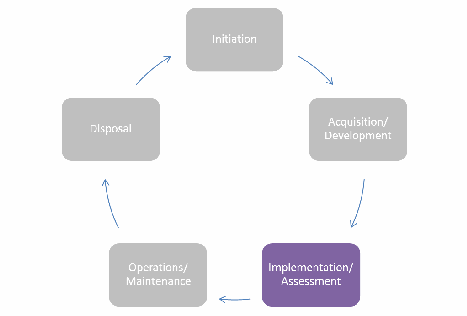
In the implementation/assessment phase, the organization installs or implements the system, configures and enables system security features, tests the functionality of these features, and finally, obtains a formal authorization to operate the system. Most of the considerations during this phase are focused on optimizing performance and ensuring security features work as expected.
実装／評価段階では、組織がシステムを導入または実装し、システムセキュリティ機能を構成・有効化し、その機能を試験し、最後にシステム運用の正式な認可を取得する。この段階の考慮事項の大半は、性能の最適化とセキュリティ機能が期待どおりに働くことの確認に重点を置く。
未レビュー訳3.3.1 Attribute Caching
3.3.1 属性のキャッシュ
未レビュー訳When an ABAC solution moves from the prototype/pilot to deployment, attribute caching may be considered to enhance performance. Performance of the ABAC solution can be negatively affected if each access decision requires an across-the-network attribute request. This is especially apparent in low-bandwidth, high-latency environments.
ABACソリューションを試作／試行段階から導入段階に進めるとき、性能向上のために属性キャッシュを検討してもよい。アクセス判断のたびにネットワーク越しの属性要求が必要であれば、ABACソリューションの性能に悪影響が及ぶことがある。これは、帯域幅が狭く遅延が大きい環境で特に顕著である。
未レビュー訳In addition to performance issues regarding attribute caching, the organization may evaluate a tradeoff regarding the freshness of attributes and the impact upon security. Attributes that are not refreshed as often will ultimately be less secure than attributes that are refreshed in real time. For example, a subject’s access privileges may have changed since the last refresh, but those updates will not be reflected in their available access privileges until the next refresh.
属性キャッシュの性能上の問題に加え、組織は属性の鮮度とセキュリティへの影響とのトレードオフを評価してもよい。更新頻度が低い属性は、リアルタイムで更新される属性より最終的に安全性が低くなる。例えば、最後の更新以降に主体のアクセス権限が変更されていても、次回更新まではその変更が利用可能なアクセス権限に反映されない。
Environments with sporadic connectivity will need to cache attributes at the local level. The security ramifications of using cached attributes locally need to be determined within the implementing organization at a policy level, and addressed with appropriate technical controls. In these disconnected environments, administrators may employ risk-based analysis as a basis for access decisions, as some attributes at the local (disconnected) level may change or be removed before the system refreshes its attributes. The local (and disconnected system’s) possible use of stale cached attributes could introduce a level of risk to the system, because the local system is not making use of the most recently available attributes. Therefore, a risk-based analysis may be warranted as to whether or not to deploy this type of solution.
接続が断続的な環境では、属性をローカルにキャッシュする必要がある。ローカルでキャッシュ属性を利用するセキュリティ上の影響を、実装組織がポリシーレベルで判断し、適切な技術統制で対処する必要がある。こうした切断環境では、システムが属性を更新する前にローカル（切断状態）で一部の属性が変更または削除される可能性があるため、管理者はリスクベース分析をアクセス判断の根拠として用いてもよい。ローカルシステムは最新の属性を利用できないため、古いキャッシュ属性を使用するとリスクが生じる可能性がある。したがって、この種のソリューションを導入すべきかについて、リスクベース分析が必要となる場合がある。
An example is a deployed ship with only intermittent, non-ideal connections to enterprise network fabrics. Because the deployed user population will have only minor changes throughout their transit, supporting the “unanticipated” system user is less of a concern. In this case, a bulk download and local storage of subject attributes may be sufficient for most local access control decisions. Therefore, subject attribute data could be stored locally on the ship throughout a deployment, and local applications and services could use the data from the local store without the need to reach to an authoritative enterprise attribute source. While this is one example of a solution to an austere environment problem, it should not be inferred that this is the only solution.
例として、エンタープライズネットワークへの接続が断続的で理想的でない状態で展開されている艦船がある。航行中に展開先の利用者集団が変わることはほとんどないため、「想定外の」システム利用者への対応はさほど問題にならない。この場合、主体属性を一括ダウンロードしてローカルに保存すれば、ほとんどのローカルアクセス制御判断には十分な場合がある。したがって、展開期間中、主体属性データを艦船内に保存し、ローカルアプリケーションとサービスは権威あるエンタープライズ属性ソースに接続せず、ローカルストアからデータを利用できる。この例は厳しい環境の課題に対する解決策の一つだが、唯一の解決策であると推定すべきではない。
3.3.2 Attribute Source Minimization
3.3.2 属性ソースの最小化
Minimizing the number of attribute sources used in authorization decisions may improve performance and simplify the overall security management of the ABAC solution. Organizations planning to deploy an ABAC solution may benefit from establishing a close working relationship among all of the organization’s stakeholders who will be involved in the solution’s deployment.
認可判断で使用する属性ソースの数を最小化すると、性能が向上し、ABACソリューション全体のセキュリティ管理が簡素化される場合がある。ABACソリューションを導入する組織は、導入に関与するすべての利害関係者間で緊密な協力関係を築くとよい。
3.3.3 Interface Specifications
3.3.3 インターフェース仕様
To help ensure consistently reliable access to ABAC services, all organizations that participate in information sharing through enterprise ABAC capabilities should fully understand the interface, interaction, and precondition requirements for all types of requests, including attribute and DP requests. It is also important to ensure that as changes occur in the infrastructure and interface requirements, all relying parties are provided notification of updates so they can plan to modify their components accordingly.
ABACサービスへのアクセスを一貫して確実にするには、エンタープライズABAC機能を通じて情報共有に参加するすべての組織が、属性要求やDP要求を含むあらゆる種類の要求について、インターフェース、相互作用、事前条件の要件を十分理解すべきである。インフラストラクチャやインターフェース要件に変更が生じた場合、依存するすべての関係者に更新を通知し、各自のコンポーネントを適切に変更する計画を立てられるようにすることも重要である。
未レビュー訳3.4 Considerations during the Operations/Maintenance Phase
3.4 運用／保守段階における考慮事項
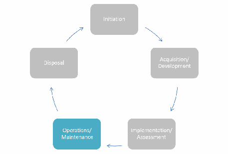
In the operations/maintenance phase, systems and products are in place and operating, enhancements and/or modifications to the system are developed and tested, and hardware and/or software is added or replaced. During this phase, the organization should monitor performance of the system to ensure that it is consistent with preestablished user and security requirements, and needed system modifications are incorporated.
運用／保守段階では、システムと製品が稼働し、システムの機能強化や変更が開発・試験され、ハードウェアやソフトウェアが追加または交換される。この段階では、システム性能が事前に定めた利用者要件とセキュリティ要件に合致することを確かめるため、組織は性能を監視し、必要なシステム変更を組み込むべきである。
未レビュー訳3.4.1 Availability of Quality Data
3.4.1 品質データの可用性
未レビュー訳As the information needed to render access control decisions, and in some cases the decisions themselves, is externalized from the objects and consumers, access to information and services will become more dependent on an outside service’s ability to provide timely and accurate data. It is important that the infrastructure be robust, well-tested, resilient, and scalable to mission needs. This is important to support attribute services, attribute stores, policy stores, policy and attribute generation and validation components, decision engines, and metaattribute repositories and conduits through which this information must pass. If outsourced, service agreements should detail availability, response time, and data quality and integrity requirements. For example, failover, redundancy, and continuity of operations must be considered for data and services that are considered mission critical. Maintaining high availability of quality data requires that addition, updating, and deleting of attribute values is performed by trained, authorized individuals, and regularly audited.
アクセス制御判断に必要な情報、場合によっては判断自体がオブジェクトや利用者から外部化されるにつれて、情報とサービスへのアクセスは、適時かつ正確なデータを提供する外部サービスの能力により依存する。任務上のニーズに対応するには、堅牢で十分に試験され、回復力があり、拡張可能な基盤が重要である。これは、属性サービス、属性ストア、ポリシーストア、ポリシーおよび属性の生成・検証コンポーネント、判断エンジン、ならびにこれらの情報が通過するメタ属性リポジトリや経路を支えるために重要である。外部委託する場合、サービス合意には可用性、応答時間、データ品質、完全性の要件を明記すべきである。例えば、任務上重要なデータとサービスについて、フェイルオーバー、冗長性、業務継続を考慮する必要がある。高品質データの高可用性を維持するには、訓練を受けた権限者が属性値の追加、更新、削除を行い、定期的に監査する必要がある。
未レビュー訳Formal agreements between providers and consumers of attributes and services should meet an appropriate standard of service, quality, availability, protection, and usage. Various laws and regulations establish responsibilities, liabilities, and penalties related to the appropriate protection of information. The agreements should capture these requirements as well as those related to responsibility for data.
属性とサービスの提供者・利用者間の正式な合意は、適切なサービス水準、品質、可用性、保護、利用の標準を満たすべきである。情報の適切な保護に関する責任、賠償責任、罰則を定める法律や規制が複数存在する。合意には、これらの要件とデータに関する責任も盛り込むべきである。
Agreements establishing an appropriate level of trust between organizations are important. These agreements would serve to formalize that trust relationship with a series of requirements and, possibly, penalties for nonconformance. APSs and MOUs/MOAs for attribute services and authoritative and accountable attribute sources can also serve to translate organizational policy into operational procedures. The purpose, usage, participants, responsibilities, and administration of these services are described in these formal agreements.
組織間で適切な信頼レベルを確立する合意は重要である。これらの合意は、一連の要件と、場合によっては不遵守時の罰則を定め、信頼関係を正式なものにする。属性サービスならびに権威ある説明責任を負う属性ソースに関するAPS、覚書（MOU）／合意書（MOA）は、組織ポリシーを運用手順に変換する役割も果たす。これらの正式な合意には、サービスの目的、利用、参加者、責任、管理を記述する。
未レビュー訳4. Conclusion
4. 結論
未レビュー訳This document brings together many previously separate bodies of ABAC knowledge in order to bridge existing gaps between available technology and best practice ABAC implementations and to address the emerging interest in ABAC within the Federal Government.
本書は、これまで個別に扱われてきた多くのABAC知識をまとめ、利用可能な技術とABAC実装のベストプラクティスとの間にある既存の隔たりを埋めるとともに、連邦政府内で高まりつつあるABACへの関心に対応する。
ABAC controls access to objects by evaluating rules against the attributes of entities (subject and object), operations, and the environment relevant to a request. ABAC relies upon the evaluation of attributes of the subject, attributes of the object, and a formal relationship or access control rule defining the allowable operations for subject-object attribute combinations. ABAC enables precise access control allowing for a large number of discrete inputs into an access control decision, providing a large set of possible combinations of those variables to reflect a diverse set of possible rules, policies, or restrictions on access. Thus, ABAC allows an unrestricted number of attributes to be combined to satisfy a rich set of policies.
ABACは、要求に関係する実体（主体とオブジェクト）、操作、環境の属性に規則を照合して評価することで、オブジェクトへのアクセスを制御する。ABACは、主体属性、オブジェクト属性、および主体とオブジェクトの属性の組み合わせで許容される操作を定義する正式な関係またはアクセス制御規則の評価に依存する。ABACは、多数の離散的な入力をアクセス制御判断に用いる精密なアクセス制御を可能にし、それらの変数を多様に組み合わせて、さまざまな規則、ポリシー、アクセス制限を表現できる。したがって、ABACでは、豊富なポリシー群を満たすために制限のない数の属性を組み合わせられる。
未レビュー訳This document defines general concepts necessary to understand ABAC. Specifically it addresses subject and object attributes, and generic features of an ABAC model and its components. It brings to light numerous considerations aligned to the system development lifecycle that must be factored in the planning, design, development, implementation, and operation of ABAC capabilities within an enterprise. The advantages and common pitfalls of ABAC mechanisms are discussed, especially for large enterprises.
本書は、ABACを理解するために必要な一般概念を定義する。具体的には、主体属性とオブジェクト属性、ABACモデルとその構成要素の一般的な機能を扱う。また、エンタープライズ内でABAC機能を計画、設計、開発、実装、運用する際に考慮すべき、システム開発ライフサイクルに沿った多数の事項を示す。特に大規模エンタープライズにおけるABACメカニズムの利点と一般的な落とし穴を論じる。
未レビュー訳ABAC capabilities will allow an unprecedented amount of flexibility and security while promoting information sharing between diverse organizations. It is vital that these capabilities be developed and deployed using a common foundation of concepts and functional requirements to ensure the greatest level of interoperability possible. ABAC is well suited for large enterprises. An ABAC system can implement existing role-based access control policies and can support a migration from role-based to a more granular access control policy based on many different characteristics of the individual requester. It supports the external (unexpected) user and provides more efficient administration. However, an ABAC system is more complicated, and therefore more costly to implement and maintain, than simpler access control systems.
ABAC機能は、これまでにない柔軟性とセキュリティを可能にし、多様な組織間の情報共有を促進する。可能な限り高い相互運用性を確保するには、共通の概念と機能要件を基盤として機能を開発・導入することが不可欠である。ABACは大規模エンタープライズに適している。ABACシステムは既存の役割ベースアクセス制御ポリシーを実装でき、役割ベースから個々の要求者の多様な特性に基づく、よりきめ細かなアクセス制御ポリシーへの移行を支援できる。外部の（想定外の）利用者をサポートし、より効率的な管理を実現する。一方、ABACシステムは単純なアクセス制御システムより複雑であるため、実装と保守により多くの費用がかかる。
未レビュー訳Appendix A — Acronyms and Abbreviations
付録A — 頭字語および略語
未レビュー訳Selected acronyms and abbreviations used in the guide are defined below.
本ガイドで使用する主な頭字語と略語を以下に定義する。
AASC Attribute and Authorization Services Committee ABAC Attribute Based Access Control
AASC 属性・認可サービス委員会 ABAC 属性ベースアクセス制御
未レビュー訳Access Control
アクセス制御
未レビュー訳AC
未レビュー訳Access Control List
アクセス制御リスト
未レビュー訳ACL
ACL
未レビュー訳Access Control Mechanism
アクセス制御メカニズム
未レビュー訳ACM
ACM
未レビュー訳Attribute Practice Statement
属性実務声明
未レビュー訳APS
APS
未レビュー訳Chief Information Officer
最高情報責任者
未レビュー訳CIO CONOPS Concept of Operations COTS Commercial Off-the-Shelf
CIO CONOPS 運用構想 COTS 市販既製品
未レビュー訳Discretionary Access Control
任意アクセス制御
未レビュー訳DAC
DAC
未レビュー訳Data Loss Prevention
データ損失防止
未レビュー訳DLP
DLP
未レビュー訳Department of Defense
国防総省
未レビュー訳DoD
DoD
未レビュー訳Digital Policy
デジタルポリシー
未レビュー訳DP
未レビュー訳Digital Policy Management
デジタルポリシー管理
未レビュー訳DPM FICAM Federal Identity, Credential, and Access Management FISMA Federal Information Security Management Act Graphical User Interface GUI HIPAA Health Insurance Portability and Accountability Act Identity Based Access Control IBAC Internet Engineering Task Force IETF
DPM FICAM 連邦ID・クレデンシャル・アクセス管理 FISMA 連邦情報セキュリティ管理法 GUI グラフィカルユーザーインターフェース HIPAA 医療保険の携行性と責任に関する法律 IBAC IDベースアクセス制御 IETF インターネット技術タスクフォース
未レビュー訳Internet Protocol
インターネットプロトコル
未レビュー訳IP
未レビュー訳Interagency Report
省庁間報告書
未レビュー訳IR
未レビュー訳Information Technology
情報技術
未レビュー訳IT
未レビュー訳Information Technology Laboratory
情報技術研究所
未レビュー訳ITL
ITL
未レビュー訳Mandatory Access Control
強制アクセス制御
未レビュー訳MAC
MAC
未レビュー訳Metapolicy
メタポリシー
未レビュー訳MP
未レビュー訳National Institute of Standards and Technology
米国国立標準技術研究所
未レビュー訳NIST
NIST
未レビュー訳Natural Language Policy
自然言語ポリシー
未レビュー訳NLP
NLP
未レビュー訳Non-Person Entity
非人間エンティティ
未レビュー訳NPE OASIS Organization for the Advancement of Structured Information Standards
NPE OASIS 構造化情報標準化推進機構
未レビュー訳Office of Management and Budget
行政管理予算局
未レビュー訳OMB OPSEC Operations Security
OMB OPSEC 運用セキュリティ
未レビュー訳Policy Administration Point
ポリシー管理点
未レビュー訳PAP
PAP
未レビュー訳Policy Decision Point
ポリシー決定点
未レビュー訳PDP
PDP
未レビュー訳Policy Enforcement Point
ポリシー実施点
未レビュー訳PEP
PEP
未レビュー訳Personally Identifiable Information
個人識別情報
未レビュー訳PII
PII
未レビュー訳Policy Information Point
ポリシー情報点
未レビュー訳PIP
PIP
未レビュー訳Public Key Infrastructure
公開鍵基盤
未レビュー訳PKI RAdAC Risk-Adaptable Access Control RBAC Role-Based Access Control Request for Comment RFC Row Level Security RLS Storage Area Network SAN SDLC System Development Life Cycle Service Oriented Architecture SOA Special Publication SP Structured Query Language SQL TCSEC Trusted Computer System Evaluation Criteria
PKI RAdAC リスク適応型アクセス制御 RBAC 役割ベースアクセス制御 Request for Comment RFC 行レベルセキュリティ RLS ストレージエリアネットワーク SAN システム開発ライフサイクル SDLC サービス指向アーキテクチャ SOA 特別刊行物 SP 構造化照会言語 SQL 信頼できるコンピューターシステム評価基準 TCSEC
未レビュー訳Technology Development
技術開発
未レビュー訳TD
未レビュー訳Transport Layer Security
トランスポート層セキュリティ
未レビュー訳TLS XACML Extensible Access Control Markup Language Extensible Markup Language XML
TLS XACML 拡張可能アクセス制御マークアップ言語 拡張マークアップ言語 XML
未レビュー訳Appendix B — References
付録B — 参考文献
未レビュー訳[ANSI359] InterNational Committee for Information Technology Standards, American National Standard for Information Technology - Role Based Access Control, ANSI/INCITS 359-2012, American National Standards Institute, New York, May 29, 2012, 56pp. https://webstore.ansi.org/Standards/INCITS/INCITS3592012.
[ANSI359] InterNational Committee for Information Technology Standards、情報技術に関する米国国家規格—役割ベースアクセス制御、ANSI/INCITS 359-2012、American National Standards Institute、ニューヨーク、May 29, 2012、56ページ。https://webstore.ansi.org/Standards/INCITS/INCITS3592012。
[ANSI499] InterNational Committee for Information Technology Standards, Information technology -Next Generation Access Control – Functional Architecture (NGAC–FA), ANSI/INCITS 499-2018, American National Standards Institute, New York, January 30, 2018, 57pp.
[ANSI499] InterNational Committee for Information Technology Standards、情報技術—次世代アクセス制御—機能アーキテクチャ（NGAC–FA）、ANSI/INCITS 499-2018、American National Standards Institute、ニューヨーク、January 30, 2018、57ページ。
未レビュー訳[CGLO09] I. F. Cruz, R. Gjomemo, B. Lin, and M. Orsini, “A Constraint and Attribute Based Security Framework for Dynamic Role Assignment in Collaborative Environments”, in Collaborative Computing: Networking, Applications and Worksharing, Lecture Notes of the Institute for Computer Sciences, Social Informatics and Telecommunications Engineering, vol. 10, 322-339 (2009). https://doi.org/10.1007/978-3-642-03354-4_24.
[CGLO09] I. F. Cruz、R. Gjomemo、B. Lin、M. Orsini、「協調環境における動的な役割割当てのための制約・属性ベースセキュリティ枠組み」、Collaborative Computing: Networking, Applications and Worksharing掲載、Lecture Notes of the Institute for Computer Sciences, Social Informatics and Telecommunications Engineering、第10巻、322-339（2009年）。https://doi.org/10.1007/978-3-642-03354-4_24。
未レビュー訳[FEDCIO1] Federal Chief Information Officers Council, Federal Identity, Credential, and Access Management (FICAM) Roadmap and Implementation Guidance (Version 1.0). Office of Management and Budget, Washington, D.C., November 10, 2009, 220pp.
[FEDCIO1] Federal Chief Information Officers Council、Federal Identity, Credential, and Access Management（FICAM）ロードマップおよび実装ガイダンス（Version 1.0）。Office of Management and Budget、ワシントンD.C.、November 10, 2009、220ページ。
未レビュー訳[FEDCIO2] Federal Chief Information Officers Council, Federal Identity, Credential, and Access Management (FICAM) Roadmap and Implementation Guidance (Version 2.0). Office of Management and Budget, Washington, D.C., December 2, 2011, 478pp. https://www.idmanagement.gov/wp-content/uploads/sites/1171/uploads/FICAM_Roadmap_and_Implem_Guid.pdf.
[FEDCIO2] Federal Chief Information Officers Council、Federal Identity, Credential, and Access Management（FICAM）ロードマップおよび実装ガイダンス（Version 2.0）。Office of Management and Budget、ワシントンD.C.、December 2, 2011、478ページ。https://www.idmanagement.gov/wp-content/uploads/sites/1171/uploads/FICAM_Roadmap_and_Implem_Guid.pdf。
未レビュー訳[FK92] D. F. Ferraiolo and D. R. Kuhn, “Role-Based Access Controls,” in Proceedings of 15th NIST-NCSC National Computer Security Conference, National Institute of Standards and Technology, Gaithersburg, Maryland, 554-563 (1992). https://csrc.nist.gov/publications/detail/conference-paper/1992/10/13/role-based-access-controls.
[FK92] D. F. Ferraiolo、D. R. Kuhn、「役割ベースアクセス制御」、Proceedings of 15th NIST-NCSC National Computer Security Conference掲載、米国国立標準技術研究所、メリーランド州ゲイサーズバーグ、554-563（1992年）。https://csrc.nist.gov/publications/detail/conference-paper/1992/10/13/role-based-access-controls。
未レビュー訳[NIST7316] V. C. Hu, D. F. Ferraiolo, and D. R. Kuhn, Assessment of Access Control Systems, NISTIR 7316, National Institute of Standards and Technology, Gaithersburg, Maryland, September 2006, 60 pp. https://doi.org/10.6028/NIST.IR.7316.
[NIST7316] V. C. Hu、D. F. Ferraiolo、D. R. Kuhn、アクセス制御システムの評価、NISTIR 7316、米国国立標準技術研究所、メリーランド州ゲイサーズバーグ、September 2006、60ページ。https://doi.org/10.6028/NIST.IR.7316。
[NIST7657] NIST/NSA Privilege (Access) Management Workshop Collaboration Team, A Report on the Privilege (Access) Management Workshop, NISTIR 7657, National Institute of Standards and Technology, Gaithersburg, Maryland, March 2010, 48 pp. https://doi.org/10.6028/NIST.IR.7657.
[NIST7657] NIST/NSA Privilege (Access) Management Workshop Collaboration Team、特権（アクセス）管理ワークショップ報告書、NISTIR 7657、米国国立標準技術研究所、メリーランド州ゲイサーズバーグ、March 2010、48ページ。https://doi.org/10.6028/NIST.IR.7657。
未レビュー訳[NIST7665] Proceedings of the Privilege Management Workshop, September 1-3, 2009, NISTIR 7665, S. A. Durrant, T. Brewer, and A. Sokol, eds., National Institute of Standards and Technology, Gaithersburg, Maryland, January 2010, 10 pp. https://doi.org/10.6028/NIST.IR.7665.
[NIST7665] 特権管理ワークショップ議事録、September 1-3, 2009、NISTIR 7665、S. A. Durrant、T. Brewer、A. Sokol編、米国国立標準技術研究所、メリーランド州ゲイサーズバーグ、January 2010、10ページ。https://doi.org/10.6028/NIST.IR.7665。
[NIST7874] V. C. Hu, and K. Scarfone, Guidelines for Access Control System Evaluation Metrics, NISTIR 7874, National Institute of Standards and Technology, Gaithersburg, Maryland, September 2012, 48pp. https://doi.org/10.6028/NIST.IR.7874.
[NIST7874] V. C. Hu、K. Scarfone、アクセス制御システム評価指標のガイドライン、NISTIR 7874、米国国立標準技術研究所、メリーランド州ゲイサーズバーグ、September 2012、48ページ。https://doi.org/10.6028/NIST.IR.7874。
[NIST800-100] P. Bowen, J. Hash, and M. Wilson, Information Security Handbook: A Guide for Managers, NIST Special Publication 800-100, National Institute of Standards and Technology, Gaithersburg, Maryland, October 2006 (including updates as of March 7, 2007), 178pp. https://doi.org/10.6028/NIST.SP.800-100.
[NIST800-100] P. Bowen, J. Hash, and M. Wilson, Information Security Handbook: A Guide for Managers, NIST Special Publication 800-100, National Institute of Standards and Technology, メリーランド州ゲイサーズバーグ, 2006年10月（2007年3月7日時点の更新を含む）, 178ページ. https://doi.org/10.6028/NIST.SP.800-100.
未レビュー訳[NIST800-53] Joint Task Force Transformation Initiative, Security and Privacy Controls for Federal Information Systems and Organizations, NIST Special Publication 800-53 Revision 4, National Institute of Standards and Technology, Gaithersburg, Maryland, April 2013 (including updates as of January 22, 2015), 462pp. https://doi.org/10.6028/NIST.SP.800-53r4.
[NIST800-53] Joint Task Force Transformation Initiative、連邦情報システムおよび組織のセキュリティとプライバシー管理策、NIST特別刊行物800-53 Revision 4、米国国立標準技術研究所、メリーランド州ゲイサーズバーグ、April 2013（January 22, 2015現在の更新を含む）、462ページ。https://doi.org/10.6028/NIST.SP.800-53r4。
未レビュー訳[NIST800-63-3] P. Grassi, M. Garcia, and J. Fenton, Digital Identity Guidelines, NIST Special Publication 800-63-3, National Institute of Standards and Technology, Gaithersburg, Maryland, June 2017 (including updates as of December 1, 2017), 74pp. https://doi.org/10.6028/NIST.SP.800-63-3.
[NIST800-63-3] P. Grassi、M. Garcia、J. Fenton、デジタルIDガイドライン、NIST特別刊行物800-63-3、米国国立標準技術研究所、メリーランド州ゲイサーズバーグ、June 2017（December 1, 2017現在の更新を含む）、74ページ。https://doi.org/10.6028/NIST.SP.800-63-3。
[NIST800-63B] P. Grassi, E. Newton, R. Perlner, A. Regenscheid, J. Fenton, W. Burr, J. Richer, N. Lefkovitz, J. Danker, Y.-Y. Choong, K. Greene, and M. Theofanos, Digital Identity Guidelines: Authentication and Lifecycle Management, NIST Special Publication 800-63B, National Institute of Standards and Technology, Gaithersburg, Maryland, June 2017 (including updates as of December 1, 2017), 79pp. https://doi.org/10.6028/NIST.SP.800-63b.
[NIST800-63B] P. Grassi、E. Newton、R. Perlner、A. Regenscheid、J. Fenton、W. Burr、J. Richer、N. Lefkovitz、J. Danker、Y.-Y. Choong、K. Greene、M. Theofanos、デジタルIDガイドライン：認証およびライフサイクル管理、NIST特別刊行物800-63B、米国国立標準技術研究所、メリーランド州ゲイサーズバーグ、June 2017（December 1, 2017現在の更新を含む）、79ページ。https://doi.org/10.6028/NIST.SP.800-63b。
未レビュー訳[RFC5246] T. Dierks and E. Rescorla, The Transport Layer Security (TLS) Protocol, Version 1.2, RFC 5246, Internet Engineering Task Force, Network Working Group, August 2008, 104pp. https://doi.org/10.17487/RFC5246.
[RFC5246] T. Dierks、E. Rescorla、トランスポート層セキュリティ（TLS）プロトコル、Version 1.2、RFC 5246、Internet Engineering Task Force、Network Working Group、August 2008、104ページ。https://doi.org/10.17487/RFC5246。
[SCFY96] R. S. Sandhu, E. J. Coyne, H. L. Feinstein, and C. E. Youman, “Role-Based Access Control Models,” IEEE Computer 29(2), 38-47 (February 1996). https://doi.org/10.1109/2.485845.
[SCFY96] R. S. Sandhu、E. J. Coyne、H. L. Feinstein、C. E. Youman、「役割ベースアクセス制御モデル」、IEEE Computer 29(2)、38-47（February 1996）。https://doi.org/10.1109/2.485845。
未レビュー訳[TCSEC] U.S. Department of Defense, Information Assurance (IA), DoD Directive 8500.1, U.S. Department of Defense, Washington, D.C., October 24, 2002, 25 pp. https://dodcio.defense.gov/Portals/0/Documents/DIEA/850001p.pdf.
[TCSEC] 米国国防総省、情報保証（IA）、DoD Directive 8500.1、米国国防総省、ワシントンD.C.、October 24, 2002、25ページ。https://dodcio.defense.gov/Portals/0/Documents/DIEA/850001p.pdf。
[WWJ04] L. Wang, D. Wijesekera, and S. Jajodia, “A Logic-based Framework for Attribute Based Access Control,” in Proceedings of the 2004 ACM workshop on Formal Methods in Security Engineering, FMSE ‘04, ACM, New York (October 2004) 45-55. https://doi.org/10.1145/1029133.1029140.
[WWJ04] L. Wang、D. Wijesekera、S. Jajodia、「属性ベースアクセス制御の論理ベース枠組み」、Proceedings of the 2004 ACM workshop on Formal Methods in Security Engineering掲載、FMSE ‘04、ACM、ニューヨーク（October 2004）45-55。https://doi.org/10.1145/1029133.1029140。
未レビュー訳[XACML] “OASIS eXtensible Access Control Markup Language (XACML) TC,” Organization for the Advancement of Structured Information Standards [Web page], https://www.oasis-open.org/committees/tc_home.php?wg_abbrev=xacml.
[XACML]「OASIS eXtensible Access Control Markup Language（XACML）技術委員会」、Organization for the Advancement of Structured Information Standards［ウェブページ］、https://www.oasis-open.org/committees/tc_home.php?wg_abbrev=xacml。
未レビュー訳[YT05] E. Yuan and J. Tong, “Attributed Based Access Control (ABAC) for Web Services,” in Proceedings of the 2005 IEEE International Conference on Web Services, ICWS 2005, IEEE Computer Society, Los Alamitos, California (2005) 561-569. https://doi.org/10.1109/ICWS.2005.25.
[YT05] E. Yuan、J. Tong、「Webサービス向け属性ベースアクセス制御（ABAC）」、Proceedings of the 2005 IEEE International Conference on Web Services掲載、ICWS 2005、IEEE Computer Society、カリフォルニア州ロスアラミトス（2005年）561-569。https://doi.org/10.1109/ICWS.2005.25。